Field-to-Test Loop: how to use it and what happens behind every button
This is a full guide to the app. It covers every screen, every word and every button. For each button, it shows which program code runs when you press it. It shows what that code writes into the database (where the program keeps its data). It also says why it was built that way. A manager who has never seen the project can follow it, use it and check it.
Version of 27 October 2026. The pieces of code in this guide are copied straight from the program files. The script docs/build_operator_guide.py copies them by itself. So the file names and line numbers above each piece are the real ones. All file paths start from the folder 13_production_app.
Looking for one button?APPLICATION_MAP.html has one entry for every button and every part of every screen. There are 571 entries in all. Each entry has a chain of arrows. The chain follows your click through the browser code, the server address and the Python functions. It goes on to the database, and back again. Each entry also has numbered screenshots (pictures of the screen).
1. The problem and the answer in one picture
The problem. Sometimes a solid-state drive (a storage drive with no moving parts) goes wrong in real use, away from the lab. Then engineers record the traffic between the computer and the drive. They use a measuring tool called an analyzer. It records every packet (small bundle of data) on the cable. This recording is called a trace. It is saved as a CSV file (a plain text table). One trace can hold millions of packets. Today a person reads it by hand and finds the defect (the fault). Next they guess how to make it happen again in the lab. They keep trying until it does. Then they write a test script, so the defect can never come back without anyone noticing. This takes days, and it depends on one expert.
The answer. This app does those four jobs. But a person stays in charge of every decision:
Stage 1, the analyser (the checking program), reads the trace one packet at a time. It uses fixed rules taken from two official rule books. One is for PCIe (the fast link that joins the drive to the computer). The other is for NVMe (the set of rules the computer uses to talk to the drive). The analyser groups the rules that fired (found a problem) into defects. It matches each defect to one entry in a list of 485 known error types. An AI model gives a second opinion on each defect. The screens call it the AI reviewer. But the rules always win.
Stage 2, making it happen again, looks up each defect in the knowledge base (the program's memory of earlier decisions). It shows the procedure (list of steps) that worked before. Next to it, it shows a new suggestion from the AI reviewer. Then an admin (the engineer who decides) makes the choice.
The lab runs the chosen procedure on the drive. Maybe the defect does not happen. Then a search changes the commands and timing until it does. Next, the program finds the hardest timing that still sets off the defect. These are the most stressful conditions.
The lab check runs the procedure on two kinds of firmware (the program inside the drive). On the firmware known to be bad, the defect must appear. On the fixed firmware, it must not appear. Only then does the program save it as a regression test that a computer can run. A regression test is a test that runs again on every new firmware. So the defect cannot quietly come back.
The knowledge base stores every decision the admin makes as an event (an entry in its diary of changes). Each one changes the numbers that decide what is shown first next time. That is the learning loop. No AI model is trained or retrained anywhere. The learning is just counting. It uses simple maths, shown in section 10.
The whole flow
Read the picture from top to bottom. The top row is what you do on the screen. The middle row is the program on the server (the main computer the app runs on). It runs when you press the button above it. The name at the bottom of each box is the Python function that does the work. Python is the language the program is written in. Later sections explain each function. The bottom row is where the result is kept. The dotted lines are the two feedback loops (paths that carry results back). Your decisions flow back into the knowledge base. Stage 1 verdicts (the AI reviewer's answers) flow back into a cache (a store of saved answers).
The six steps in the left sidebar are the six boxes of the top row
A step stays grey, with a lock sign, until the step before it is done. You cannot open stage 2 before stage 1 has finished. You cannot decide before you have pressed Start stage 2. The program forces the same order on the server too (function _gate in app/api/stage2_api.py). So typing a web address cannot skip the order either.
2. Every abbreviation and special word, written out
The screens use plain words wherever they can. But a few places still use the official names from the official rule books. These places are the packet rows, the evidence and the AI reviewer's text. The AI reviewer is an AI model asked for a second opinion. These places keep the official names because engineers search for those names. This section explains every one of them. The words are grouped by topic. To jump to a word, use your browser's find box (Ctrl+F).
2.1 The link between computer and drive (PCIe)
Word
Written out
What it means here
PCIe
Peripheral Component Interconnect Express (a fast way to plug extra parts into a computer)
The fast link that joins the drive to the computer. It is one shared set of rules for the slot, the wires and the talking. Think of it as a road between two towns. Everything in the trace travelled along this road.
Host / Root Complex (RC) / root port
—
The computer's end of the link. "Downstream" means going from the host to the drive.
Device / endpoint / SSD
Solid-State Drive (a storage drive with no moving parts)
The drive's end of the link. "Upstream" means going from the drive to the host.
Analyzer / trace / capture
—
The analyzer is a tool that records every packet on the link. Two makers of such tools are LeCroy and VIAVI. The trace, or capture, is the recording it makes. It is like a camera by the road that films every car. The app reads the saved recording as a CSV file. That file has 113 columns and one row per packet.
CSV
Comma-Separated Values
A text file that holds a table. Each line is one row. Commas split each row into columns. The analyzer saves its recording in this form.
TLP
Transaction Layer Packet (a packet that does a job)
A packet that carries real work. The work can be a read, a write, a read or write of the device's settings area, or an answer. A packet is like a letter in an envelope. The address is on the outside, and the content is inside. Most evidence is TLPs.
MRd / MWr
Memory Read / Memory Write request
A TLP that reads from or writes to an address. "MRd(32)" means the address is 32 bits long. The host uses them to read the drive's registers. Registers are small numbered slots inside a chip that hold settings or status. The drive uses these TLPs to fetch commands and move data.
Cpl / CplD
Completion / Completion with Data
The answer to a read, or to a request to the settings area. It carries a status, a short result code. The next four rows list the codes:
SC
Successful Completion
The request worked.
UR
Unsupported Request (a request it cannot do)
The receiver said no to the request. For example, the address was not valid, or the device was not ready.
CA
Completer Abort (the one answering gave up)
The receiver tried to do the request, but failed while doing it.
CRS
Configuration Request Retry Status (try your settings request again)
It means "Not ready yet, ask again". It is allowed only for settings reads, soon after a reset (a restart).
CfgRd0 / CfgWr0
Configuration Read / Write, type 0
Reads or writes of the device's configuration space. That is the settings area every PCIe device has. It holds standard registers. They say who the device is, which power state it is in, and what it can do.
Configuration space, register 0x044 …
—
Configuration space is a row of numbered registers, like numbered lockers in a hallway. "0x" means the number is written in base 16 (hexadecimal). Base 16 uses the digits 0 to 9 and then A to F. In the example, register 0x044 is the register that controls power saving.
BAR
Base Address Register (the register that holds a starting address)
A register in the settings area. It tells the host at which memory address it can reach the drive's own registers. It is like a house number that tells you where to knock.
MMIO
Memory-Mapped Input/Output (talking to a device through memory addresses)
Reading or writing the drive's registers as if they were normal memory. The host uses the address from the BAR. "MMIO read 0x1C" means a read of the drive's register at offset 0x1C. The offset is the distance from that starting address.
DLLP
Data Link Layer Packet
Small packets that keep one link tidy and running. They travel only between the two ends of one link. Examples are "got it" receipts and credits. They carry no real work.
DLLPs that answer each TLP. ACK says "it arrived whole". NAK says "please send it again". They work like a signed delivery slip. The packet picture shows them in grey.
PSN / AckNak Seq Num
Packet Sequence Number (the packet's place in line)
The number each TLP gets on one link. ACK and NAK use it to say which packet they mean. It works like a ticket number at a shop counter.
LCRC / ECRC
Link / End-to-end Cyclic Redundancy Check
Check numbers that catch broken packets. The sender works out a number from the packet's content and adds it. The receiver works it out again. If the two numbers differ, the packet was damaged. LCRC checks one link. ECRC checks the whole way, from one end to the other.
Replay
—
The sender sends a TLP again. It does this after a NAK, or after waiting too long (a timeout).
Flow control, credits, UpdateFC
—
Each side tells the other how much waiting room (buffer space) it has. These amounts are called "credits". Think of free seats in a waiting room. UpdateFC is the DLLP that hands credits back when seats free up. A credit stall means the sender must wait, because no credits come back.
Tag / Requester ID
—
Numbers that tie each answer (completion) to the request it answers. They work like a cloakroom ticket that matches your coat. A Requester ID is written as bus:device.function, for example 002:00:0.
Ordered set, LTSSM, Recovery, L0
Link Training and Status State Machine (the steps a link goes through to start and keep working)
Ordered sets are special control signals sent on the wires. The LTSSM is the list of steps that trains the link. Training means the two ends agree how to talk. L0 is the normal working state. Recovery means the link trains again after errors.
AER, ERR_COR, ERR_NONFATAL, ERR_FATAL
Advanced Error Reporting; correctable / non-fatal / fatal error message (can be fixed / serious / very serious)
The error messages a PCIe device sends to the host. They are sorted by how bad the error is.
MSI / MSI-X
Message Signalled Interrupt (extended)
How the drive interrupts the host to get its attention. It writes to a special address, like a tap on the shoulder.
IOMMU / DMA
Input/Output Memory Management Unit / Direct Memory Access
DMA means the drive reads or writes the host's memory by itself. The IOMMU is the host's guard. It blocks DMA to any address the drive was not given. Think of a guard who only lets you into the rooms on your pass.
Hot-unplug, surprise link down
—
The drive vanishes from the link without the normal switch-off steps. It is like pulling out a plug while the machine is running.
Jammer
—
A tool placed on the link that damages or delays packets on purpose. It tests how well the drive copes. It is optional. It is used only on a hardware bench (a real test table with a real drive).
2.2 The drive's command language (NVMe)
Word
Written out
What it means here
NVMe
Non-Volatile Memory Express (for memory that keeps its data when the power is off)
The list of commands the host uses to talk to the drive over PCIe (read, write, flush, …). If PCIe is the road, NVMe is the language of the letters sent along it.
SQ / CQ
Submission Queue / Completion Queue (the line of jobs handed in / the line of answers)
Each queue is a ring of memory in the host. Picture a round tray with numbered places that is used again and again. The host puts commands in a submission queue. The drive puts answers in a completion queue.
SQE / CQE
Submission / Completion Queue Entry
One place in a queue. An SQE holds one command (64 bytes). A CQE holds one answer (16 bytes).
SQID / CQID / CID
Submission / Completion Queue ID, Command ID
Numbers that say which queue and which command. The analyser (the checking program) follows a command by these numbers. It never uses the command's place in the file.
Doorbell
—
A drive register the host writes to say "new commands are in the queue". It works just like ringing a doorbell.
Phase bit
—
A bit (a single 0 or 1) in each CQE. It flips on every trip around the ring. That way the host can tell which answers are new.
PRP / SGL
Physical Region Page / Scatter-Gather List (two kinds of lists that say where the data is)
The two ways a command tells the drive where the data sits in host memory. Both work like a list of addresses for picking up parcels.
Admin queue / I/O queue
—
Queue 0 is the admin queue. It carries commands that manage the drive (Identify, Get Log Page …). The other queues carry reads and writes. I/O means input and output.
CC / CSTS
Controller Configuration / Controller Status register (the drive's on switch / the drive's status light)
Two drive registers. The host turns the drive on with CC.EN. It checks whether the drive is ready with CSTS.RDY. "CSTS reads all-ones" (0xFFFFFFFF) means the drive no longer answers.
Identify Controller (CNS 01h)
Controller or Namespace Structure 01h
An admin command. Its answer holds the drive's model number, serial number and firmware version. Firmware is the drive's own built-in software. The analyser takes the device name from this answer.
VID / DID / SSVID
Vendor ID / Device ID / Subsystem Vendor ID (maker number / product number / maker number of the finished board)
Numbers for the maker and the product. They sit at the top of the PCIe settings area (the configuration header). The analyser uses them for the device name when the trace has no Identify answer.
SN / MN / FR
Serial Number / Model Number / Firmware Revision
Parts (fields) of the Identify answer.
Namespace, nsze, LBA
Namespace Size, Logical Block Address
A namespace is one part of the drive, like one shelf in a bookcase. nsze is its size in blocks. An LBA is a block number, like a page number in a book. With nsze, the analyser can tell a read past the end from a valid read.
Flush / FUA
— / Force Unit Access (write it to the flash now)
A command (Flush) or a flag (FUA) that forces written data onto the flash memory. Then the data stays safe even if the power fails.
Trim (Deallocate), Write Zeroes
—
Trim tells the drive that some blocks are no longer needed. Write Zeroes tells the drive that some blocks should read as zero.
Get Log Page, Set Features, Abort, SMART
Self-Monitoring, Analysis and Reporting Technology (the drive's own health check)
Admin commands. Get Log Page reads a log, for example the SMART health log. Set Features changes a setting. Abort cancels a command.
AER (NVMe)
Asynchronous Event Request (a request that is answered later, whenever something happens)
A command the drive answers only when something happens, such as a warning or a log change. It is like asking a friend to call you when your parcel arrives.
Controller reset, power cycle
—
A controller reset restarts the drive's controller (CC.EN 1→0→1). The controller is the drive's small brain. A power cycle switches the power off and on again.
Queue depth (QD)
—
How many commands are waiting for an answer at the same time. It is one of the five timing values of a procedure (a recipe for making the fault happen again).
Block size (KB)
kilobytes (about a thousand bytes each)
The size of each read or write.
Burst length
—
How many commands are sent one right after another, before a pause.
Between commands (µs) / idle gap (ms)
microseconds (millionths of a second) / milliseconds (thousandths)
The gap between two commands, and the quiet time before the whole list of commands starts.
dmesg -x
—
The Linux kernel log. The kernel is the heart of Linux. Each line has a level that shows how serious it is. This log is host evidence. It helps with defects that leave no trace on the link.
host_events.jsonl
—
Records written by tools on the host, one JSON object (one record) per line. This is also host evidence.
fio, nvme-cli, SPDK
—
Common Linux tools. A hardware bench uses them to send the commands of a procedure to a real drive.
2.3 Power-saving words
Word
Written out
What it means here
D0 / D3hot
Device power state 0 / 3 (hot)
D0 means fully on. D3hot means deep sleep, with the power still connected. After D3hot→D0, the device needs time to wake up. The official PCI Power Management rule book says software must wait 10 ms before using the device. Error type T-42 is a host that does not wait. It is like talking to someone before they are fully awake.
PMCSR
Power Management Control/Status Register
The register in the settings area (here 0x044) that the host writes to change the D-state. "DATA 03" means D3hot. "DATA 00" means D0.
ASPM, L1, L1.2
Active State Power Management
The link itself (not the device) goes to sleep when nothing is happening. L1 and L1.2 are deeper sleep states of the link. "ASPM idle" in a procedure means: wait, so the link falls into such a sleep state.
APST
Autonomous Power State Transition (the drive changes its power state by itself)
The drive changes its own NVMe power state after it has been idle for a while. It is like a phone that dims its screen when you stop using it.
PME, LTR
Power Management Event / Latency Tolerance Reporting (wake-up message / how much delay is fine)
PME is a wake-up message. LTR tells how long the device can put up with waiting.
2.4 The catalogue ids: T-42, M-020, P19, R4
Error type ids such as T-42 or M-020 name one entry in the catalogue. The catalogue is a list of 485 known error types, like a big book of known problems. The letter is the chapter. The number is only the place inside the chapter. So T-42 is the 42nd entry of chapter T. Zeros at the front mean nothing, so M-020 is the same as M-20. The screens always write it out in full: "error type T-42 (chapter T = timeouts and time limits, entry 42)".
Letter
Chapter
Example
S
errors reported with a status code
a read that gets an error status back
T
timeouts and time limits
T-42: the host uses the device before its 10 ms wake-up time after D3hot→D0 is over
D
silent failures (reported Success but the work was not done)
a flush that said Success, but data was lost
L
PCIe link and transaction errors
L-31: no BAR address was given out, or two parts want the same addresses
C
NVMe controller and host-driver failures
C-16: device gone, CSTS reads all-ones
X
physical and link-layer errors only an analyzer sees
bad signals (symbol errors) on the cable
V
protocol rule violations visible in the trace
a field set to a value that the rules for talking forbid
P
performance failures
speed far below what was expected
M
timing, evidence-gap and cross-layer failures
M-020: credits come back too slowly for the amount of traffic sent
N
failures outside the probed link
a problem that only the host log can show
Error family ids such as P19 sort the 485 error types into groups. The error types in one family show up on the wire in the same way. There are 27 families, plus E. The screens write the family name and put the id in brackets. For example: "configuration space, power state and reset sequencing (family P19)". Here is the full list. Plain meanings of the harder names are in square brackets:
Id
Family
Id
Family
P01
completion returned with an error status
P15
completion-queue phase or duplicate completions
P02
command never completed (timeout)
P16
completion posted before its data
P03
PCIe completion lost or late
P17
DMA outside the allowed addresses (IOMMU faults)
P04
configuration or register access refused (UR / CA / CRS)
P18
PRP / SGL list format errors
P05
request and completion do not match (tag errors)
P19
configuration space, power state and reset sequencing [settings area, power and the order of reset steps]
P06
data-link replay and LCRC errors
P20
power-management handshakes (ASPM, L1, PME)
P07
flow-control credit stall
P21
PCIe messages and vendor-defined messages
P08
link training, speed or width downgrade
P22
latency and throughput anomalies [delay or speed that looks wrong]
P09
physical-layer symbol or receiver errors
P23
data integrity (read-back mismatch) [data read back is not what was written]
P10
error-message storm (ERR_COR / ERR_NONFATAL)
P24
flush, FUA and power-loss durability [data that must survive a power cut]
P11
poisoned data or ECRC error [data marked as bad]
P25
firmware activation and admin-command sequencing [the order of admin steps]
P12
surprise link down or hot-unplug
P26
asynchronous events and SMART log [warnings the drive sends whenever they happen]
P13
controller readiness (CC / CSTS registers)
P27
capture artefacts (export, gaps, filters) [mistakes made by the recording]
P14
queue doorbell violations
E
outside the probed PCIe link
Rule names such as CFG.D0_EARLY, TLP.CPL_STATUS or NVME.DMA_OUTSIDE name the analyser's 227 rules. The rules live in the file stage1/pcie_isolate/rules.py. The part before the dot is the area. The part after the dot says what is checked. So CFG.D0_EARLY means "configuration: access too early after D0". 60 of the rules stand for the 72 error kinds that the analyzer software itself checks (its Reports › Error Summary list); the file stage1/pcie_isolate/analyzer_errors.py gives each of those kinds its meaning, the rule of the PCI Express specification it comes from, and the places in an export where the proof can be. Here are the areas, with the number of rules in each:
Prefix
Area
Rules
Prefix
Area
Rules
PHY
the wires and signals (symbols, framing, training sets, ordered sets)
43
H
host evidence (dmesg, host tool records)
8
NVME
NVMe commands, queues and answers (completions)
38
CI
whether the recording is whole (gaps, filters, markers, analyzer flags)
8
TLP
work packets (types, fields, status)
25
LINK
link training and link state
7
SMBUS
sideband management bus (a small extra wire for management messages)
20
PM
power saving
6
DLL
data link (ACK, NAK, sending packets again, DLLP format)
12
DB
doorbells
5
REG
the drive's registers (CC, CSTS …)
13
DATA
whether the data stays correct
5
TXN
matching each request with its answer
12
FC
flow control (credits)
5
CFG
configuration space (the settings area)
12
MSG
PCIe messages
5
S
counts over the whole trace (for example S.RARE_WINDOW: rare kinds of packet bunched together in a short time)
3
Who-caused-it rules R0 to R10 are decision steps, checked in a fixed order. They decide who caused a defect: the host, the device, the platform, the link or the test setup. They live in the function attribute in stage1/pcie_isolate/incidents.py. Some examples: R0 = the recording itself is broken (gaps, filters). R2 = a command was turned down: were its fields valid? R3 = which step of a command never happened. R4 = whoever sent the first bad packet. R5 = the direction of the NAK decides the side. R7 = power-state trouble. R8 = data right when written but wrong when read = device. R9 = whose part of a delay is the biggest. R10 = nothing on the wire decides, so the analyser uses the host evidence or the catalogue's hint.
Defect 1, Defect 2 … get their numbers in the order the analyser found them in the trace. Inside the files they are stored as INC-0001, INC-0002 (INC = incident, another word for defect). The screens never show that form.
Run id such as run-20261026-145008-0220 means: date 2026-10-26, time 14:50:08, plus four random characters. The random part keeps two runs apart when they start in the same second.
2.5 Words of stage 1 (the analyser)
Word
What it means
Finding
One rule going off on one packet, like one smoke alarm beeping. A trace can give thousands of findings. The analyser groups them into defects.
Defect (incident)
A group of findings tied together by a shared identifier (the same transaction, command or sequence number), by a reference (one finding points at the packet of another) or by the same packet. Findings with no identifier are counted as a series of their kind. Each defect has one "first abnormal packet", one root cause and one catalogue match.
First abnormal packet
The earliest packet where things stop being normal. It is not always the loudest one. Think of the first domino that falls, not the biggest crash. The packet picture marks it "first abnormal" in red.
Root cause / knock-on effect / separate finding
The three jobs a finding can have in one defect. The root cause is the first cause. A knock-on effect is something the root cause led to, like the dominoes that fall after the first. A separate finding is related, but it does not come from the root cause.
Confirmed / Suspect / Needs evidence
The analyser's verdict (its decision). Confirmed = the rules prove it from the packets. Suspect = a rule went off, but the proof is not complete. Needs evidence = the packets show only a sign of the problem. A host log would be needed.
AI reviewer agrees / not sure / disagrees
The AI reviewer's second opinion on the analyser's verdict. It reads the same rows and the rule text. It never changes the verdict.
Fresh model call / verdict reused from the cache
Fresh = the AI reviewer was asked just now. Reused = an earlier run already confirmed the same pattern. The same pattern means the same error type, first rule, family and layer. The order of packet kinds must match too. So must the model and the prompt (the question text). Then the app uses the stored answer and makes no model call. The cache is the store of earlier answers.
Isolation status
The final word for each defect. It says whether the fault was found and pinned down. The defect page shows it as a badge: Confirmed, Suspect or Needs evidence, with one sentence that explains it. Behind the badge are five values. isolated (badge Confirmed): the rules and the AI reviewer agree. isolated from the packets alone (badge Confirmed): no AI reviewer ran. needs outside evidence (badge Needs evidence): the packets alone cannot prove it. disputed (badge Suspect): the AI reviewer disagreed, so check by hand. synthesised (badge Confirmed): made-up demo data only.
Layer
Where in the stack the defect sits. The stack is the pile of layers that work together, from the wires up to the commands. The layers are: physical link, data link, transaction, configuration, NVMe command, power management, host, sideband, statistics, the capture itself.
Failure signature
The unique mark of a defect that stage 2 uses. It is made from the error type, the first rule, the layer and the timing class. It also holds the link events. And it holds the packet kinds just before the "first abnormal packet". Two defects with the same signature count as "the same defect".
2.6 Words of stage 2 (making the fault happen again)
Word
What it means
Knowledge base
The program's memory of earlier decisions. It is the database db/knowledge.sqlite. It starts empty. Only events fill it: decisions, lab results and test files.
Cause
A saved reason why an error type happens. Each error type has at least one. Inside the database, the first one is called "c0".
Procedure (scenario, solution)
A recipe to make a defect happen again in the lab. It has three parts. First, a list of up to 12 commands in order, picked from the 12 the bench can send. Second, five timing values: queue depth, gap between commands, block size, burst length and idle gap. Third, a power state. Its id, such as procedure #074e18b2, is the first 8 characters of a hash of its contents. A hash is a short unique mark worked out from the contents. So the same recipe always has the same id.
Saved procedure
A procedure kept in the knowledge base for this error type.
AI reviewer's proposal
A procedure that the AI reviewer suggests now, from the packets of this defect. Nobody has run it yet.
Procedure status
It starts as proposed: written, but not run. Then the lab runs it. If it made the defect happen again: validated in the lab, awaiting approval by a second admin. If it did not: failed validation. Next comes approved by a second admin. Later it can be replaced by a newer version or retired (no longer used).
Seen before: YES / related / NO
The answer of the lookup (the search of the knowledge base). YES = same error type, same device and firmware, and a strong match. Related = same error type or family, but a different situation. NO = nothing like it is stored.
Lab run
One run of a procedure on the device. After it, the same analyser checks the new trace. On this laptop the device is a pretend one, made by software (see 9.6). On a real bench it is the real drive.
Known-bad / fixed firmware
Known-bad firmware is the drive software where the defect was seen. Fixed firmware is the corrected version. A good test fails on the first and passes on the second.
Lab check (closed loop)
The procedure runs 6 times on known-bad firmware and 3 times on fixed firmware. Only one result makes it a regression test. The defect must show up at least once on known-bad, and never on fixed.
Reproduced in at least 68 % of lab runs
A careful, low guess of how often the procedure sets off the defect. It is the 95 % confidence lower bound (section 10.5). We can be 95 % sure the true rate is at least this high. "Likely" = at least 50 %. "very likely" = at least 80 %.
Score per lab run, optimal
Each lab run gets 3 yes/no checks. Was the same error type found? Was it found by the same first rule? Was the verdict Confirmed? Score = checks passed / 3. Optimal = score above 0.9 (all three) in 3 lab runs in a row. This rule comes from the project's drawing of how its parts fit together.
First-level triage limit
Triage means a quick first sort of problems, like a nurse who decides who is seen first. The limit is 10 minutes per defect. If the search and the lab check take longer, the try counts as failed.
Most stressful conditions
First, the defect must be made to happen again, and this must be confirmed. Then the app pushes each timing value harder, step by step, while the defect still appears. It files the hardest version as a second test (section 9.4).
Failure-prone conditions
Small changes to the working procedure that also set off the defect. You get them with the button "Try nearby variations".
Regression test
A test that is run again after every change, to make sure the fault has not come back. Each one is a folder under suite/. The folder holds a pytest script, which is the test itself. It also holds a manifest.json. That file describes the procedure, the expected result and where the test came from. Last, conftest.py connects the test to the bench.
Lesson
A note in your own words, saved with an error type. The AI reviewer must read the lessons when it makes its next proposal for that error type.
Second admin, two-person rule
An admin is the engineer who decides. Some actions need a second, different person. These are: approving a procedure, retiring a procedure and deleting a cause. The database says no to the change when both names are the same. It is like a bank safe that needs two keys.
Admin feedback rating 0.67 from 4 decisions
The share of good marks this procedure got. It also counts a neutral starting value (section 10.1). 1 = always judged correct. 0.5 = no information yet.
Lookup match 93 %
How much the stored record looks like this defect. It comes from the five search methods of section 11. 100 % means exactly the same.
2.7 Words of the software and the maths
Word
Written out
What it means here
Browser, server, API
Application Programming Interface (the way one program asks another program for things)
The screens run in your web browser (HTML and JavaScript). Every button sends a request to the server (Python, Flask). The request goes to an address such as POST /api/runs. It is like a waiter taking your order to the kitchen. GET = read something. POST = do something. DELETE = remove something.
Flask
—
A ready-made Python toolkit for building web servers. The server is built with it.
JSON, JSONL
JavaScript Object Notation (Lines)
A text way to write down data as names and values, like a filled-in form. JSONL = one JSON object (one record) per line.
SQLite
—
A database kept in one single file. The layout of its tables also works for PostgreSQL, a bigger database program.
SQL, INSERT, SELECT
Structured Query Language (a language for asking a database questions)
The language used to read and write databases. INSERT adds a row. SELECT reads rows. UPDATE changes them.
KGDB
Knowledge-Graph DataBase (a database of facts and the links between them)
The name of the Python class in stage2/kgdb.py. A class is a building plan for one part of a program. This one looks after the knowledge base file.
FW-A, FW-A+fix
firmware A (drive software, version A)
The firmware name used when no other name is given. "+fix" names the corrected firmware in the lab check.
GB, KB, KiB
gigabyte, kilobyte
Sizes of data. Block sizes in procedures are in kilobytes (1 KB = 1024 bytes here).
URL
Uniform Resource Locator (a web address)
A web address. One example is the main address of an AI model's API.
Job
—
Work that takes more than a second runs in the background as a job. Stage 1 and a lab run are examples. The screen asks how far the job has got every 1–2 seconds.
Event sourcing, event log
—
Keeping a diary of every change. Each change is written once as an event and never edited. All tables are worked out from the events. Undo = mark an event as undone and work the tables out again. It is like a diary written in pen: nothing is rubbed out.
Hash (vhash)
—
A short unique mark worked out from the contents (SHA-256). Same contents → same hash.
LLM
Large Language Model (an AI that learned from a huge amount of text)
The kind of AI model the AI reviewer is. Here it is Claude Haiku 5.5 through the claude command line, or any model through an API. This project never trains it.
RAG
Retrieval-Augmented Generation (look things up first, then write the answer)
Give the AI model the useful stored records together with the question. It is like an open-book test. Here, the app puts the saved procedures, lessons and earlier cases into the AI reviewer's prompt (its question text).
RL
Reinforcement Learning (learning from rewards)
Learning from rewards, the way a game player learns which moves score points. Here nothing is trained. Admin decisions are the rewards (+1 / −1), counted on the stored records. The lab result is the reward of the search.
Beta counts (a, b), posterior
—
Two counters for each record: a = successes + 1, b = failures + 1. The rating is a / (a + b). That rating is what "posterior" means here: the score after all results are counted. Section 10.1.
Plackett–Luce
—
A common way to turn an order ("this one first, that one second") into scores. It is like turning finishing places in a race into points. Only "Record my ranking" uses it.
BM25
Best Match 25
The classic text score that search engines use. Rare words that both texts share count more than common words. Sharing the word "doorbell" means more than sharing the word "the".
Trigram similarity
—
How alike two texts are, measured on every 3-letter piece. For example, "flush" has the pieces "flu", "lus" and "ush". It still works when a word is spelled a little differently.
LCS
Longest Common Subsequence (the longest list two things share, in the same order)
How much of their list of packet kinds two defects share, in the same order.
RRF
Reciprocal Rank Fusion (combining several rankings)
A way to join several ranked lists into one. A record that several methods rank high ends up on top. It is like adding up the votes of several judges.
Thompson sampling
—
A way to choose between options. For each option, draw a random number based on its Beta counts. Good options win often, but untried ones still get a chance. It is like trying a new dish now and then, not only your favourite.
Go-Explore
—
A search that keeps the best procedure found for each different shape. When it gets stuck, it goes back to the hopeful ones. It is like saving your game at good spots.
ddmin
delta debugging minimisation (cutting a failing case down to the smallest one)
Take commands out one by one, as long as the defect still appears. The result is the shortest procedure that still sets off the defect.
Wilson lower bound
—
A careful, low guess of a success rate, from k successes in n tries. It uses 95 % confidence: we can be 95 % sure the true rate is at least this high.
PPO
Proximal Policy Optimization (learning in small, safe steps)
A step-by-step method for learning from rewards. You can choose it for the search with the setting stage2.optimizer = "ppo". Normally the search uses Thompson sampling instead.
pytest, manifest
—
pytest is the common Python program that runs tests. The manifest is the JSON file that describes a test, like a label on a box.
3. How the program is built: parts, files and the database
3.1 Three layers
The screens (folder app/static/). There are three web pages. index.html holds the five steps of the work. defect.html shows the full record of one defect. db.html shows the knowledge base (the program's memory of earlier decisions). Small JavaScript files (code that runs in the web browser) make the pages work. main.js runs the sidebar, the locks and which page is shown. run.js runs steps 1 and 2. incidents.js runs step 3. review.js and decision.js run step 5. There are also report.js, settings.js, defect.js and db.js. api.js holds shared helpers and the plain-word translations.
The server (folder app/). You start it with python3 run_app.py. It answers the requests from the screens. server.py builds the web app. The five files in app/api/ set out the addresses. Each address has one Python function (a piece of code in the Python language). services.py holds the objects that all addresses share. jobs.py runs long work in the background. stage1_runner.py drives the analyser (the checking program). stage2_service.py drives stage 2. report.py builds the report. bench_hook.py is where you plug in a real lab bench (a test station with a real drive).
The two engines. stage1/pcie_isolate/ is the analyser. You can also use it on its own, by typing commands in a terminal. stage2/ is the engine that makes the defect happen again in the lab. It also holds the knowledge base.
3.2 What happens when you press any button
Every button follows the same path. The browser function api() sends the request. If the answer is an error, it turns it into a message on the screen.
app/static/js/api.js lines 2–7 · JavaScript in the browser
export async function api(method, url, body) {
const r = await fetch(url, { method, headers: { "Content-Type": "application/json" }, body: body ? JSON.stringify(body) : undefined });
const j = await r.json().catch(() => ({}));
if (!r.ok) throw new Error(j.error || (j.result && j.result.error) || r.statusText);
return j;
}
On the server, Flask (a ready-made Python tool for web servers) finds the function linked to that address. The line above the function makes that link. It starts with @bp.post(...) or @bp.get(...). Flask then runs the function. Short actions answer at once. Long ones (stage 1, a lab run) go to the job manager. It starts a background thread (a helper that works at the same time as the rest). It stores the job's progress in db/app.sqlite. This is a SQLite file (a whole database kept in one file).
Checks the paths. Then it reuses an earlier run that is exactly the same, or starts the stage-1 job.
GET /api/runs/inputs
find_inputs (runs_api.py)
Find companion files next to the CSV
Looks next to the CSV (the trace file, a text table) for the extra inputs. They are the payload sidecar (packet bytes), dmesg (kernel log), host_events.jsonl and the namespace size.
GET /api/runs
list_runs
the list of runs and the "selected run" box are drawn
All runs, each with its state, who started it, its device and its counts.
GET /api/runs/<run>
get_run
step 2 is open (every 1.5 s while it runs)
The job's progress, a summary, and warnings about missing inputs.
POST /api/runs/<run>/cancel
cancel_run
Stop the analysis
Marks the job as cancelled. The runner stops at its next step.
DELETE /api/runs/<run>
delete_run
Delete in the Earlier runs table
Removes the run folder and its jobs. It does not touch the knowledge base.
GET /api/jobs/<job>, …/events
get_job, job_events (misc_api.py)
any progress bar, the Activity log
The job's state and the lines the analyser printed.
GET /api/runs/<run>/incidents
list_incidents (stage2_api.py)
step 3 and the defect list of step 2
All defects, each with its verdict, the AI opinion and its catalogue match (the closest of the 485 known error types).
GET /api/runs/<run>/incidents/<inc>
get_incident
you open a defect in step 5
The defect, its packet rows and the AI review. Also its final stage-1 record, its failure signature (its unique mark) and its stage-2 state.
GET /api/runs/<run>/defect/<inc>
defect_record
the defect page opens
Everything about one defect, in reading order. It also gives earlier decisions on the same error type.
GET /api/runs/<run>/stage2/queue
queue
step 5 opens
Whether stage 2 was started, and each defect's stage-2 state.
POST /api/runs/<run>/stage2/start
start → _prepare
Start stage 2
Writes the STARTED marker file. Then a job looks up every defect and asks the AI reviewer (an AI model asked for a second opinion).
POST …/incidents/<inc>/present
present
a defect opens with no saved lookup, or you press Look up again
Searches the knowledge base, checks "seen before" and gets the AI proposal. It keeps all this until you decide.
GET …/incidents/<inc>/solutions
solutions
the cards of a defect are drawn
The saved procedures (recipes that make the defect happen again) and the AI proposal. Each comes with counts and history. Approved ones come first, then ones that passed in the lab, then ones from the same family.
POST …/incidents/<inc>/act
act → Stage2Service.act
any decision: Correct, Not correct, Save decisions, all 26 decisions
Turns the decision into events. For the 7 lab actions it also starts a background job.
GET /api/db/feedback/<error type>
feedback
the "Earlier decisions" table
Every decision on this error type: who, when, the note and the lab result.
POST /api/db/undo
undo (db_api.py)
Undo in a message, or on the knowledge base page
Marks the event as undone and builds all tables again.
GET /api/db/overview, /table/<name>, /signature/<type>, /cache
db_api.py
the Knowledge base page
Views that show the database but never change it.
GET /api/runs/<run>/report, /api/kpi, /api/suite
misc_api.py
Build or refresh the report
Time per stage, the result for each defect, key results and the list of tests.
GET/PUT /api/config
config_api.py
Settings page, Save
Reads and writes config/app_config.json. That is a JSON file (plain text that holds data). It can switch the AI reviewer without a restart.
POST /api/samples/generate
generate_sample
(tests, demos)
Makes a made-up trace with the error types you choose.
3.4 Every file the program writes
File
Written by
What is in it
db/knowledge.sqlite
stage 2 (stage2/kgdb.py, procgraph.py)
The knowledge base. The table event holds every decision and lab result. Nobody ever edits its rows. All other tables are built from it. signature holds the error types seen. node + node_version hold the causes, with versions. edge holds credit counts from error type → cause. solution holds every procedure with its status. Then there are lesson and artifact (lab-check results). pnode / pedge hold the procedure graph. It is a map of causes, procedures, tests and lessons, and the links between them. Each has credit counts.
db/app.sqlite
app/jobs.py, app/pattern_cache.py
Tables job and job_event hold every run and lab job. They keep its progress, timings and printed lines. Table verdict_cache holds AI reviewer verdicts that later runs reuse.
db/llm_cache.jsonl
stage2/llm_adapter.py
Every answer the AI reviewer gave in stage 2, filed under the exact question. So nobody pays twice for the same question.
db/stage2_log.jsonl
Stage2V3._emit
One line for each stage-2 decision result, so people can check the work later.
runs/<run>/run.json
analyser analyze
Facts about the capture (the recording): the rows, the time span, and whether the packet bytes are there. Also the device's name and numbers, read from the trace.
runs/<run>/findings.pkl, time_index.npz
analyser
Every time a rule fired, in a format only the program reads. Also a list that quickly finds the row for a given time.
runs/<run>/incidents.json, incident_rows.jsonl
analyser isolate
The defects, and the packet rows around each one.
runs/<run>/llm_reviews.jsonl
analyser review + verdict cache
The AI reviewer's second opinion on each defect.
runs/<run>/isolation.json, isolation_report.md
analyser report
The final record of each defect, in two forms: one for the program, one for people.
Seconds per step, counts, and the check of the whole capture (if it was turned on).
runs/<run>/stage2/STARTED
Start stage 2
A marker that says stage 2 was started for this run.
runs/<run>/stage2/INC-0001.json
Stage2Service.present, _record
The defect's stage-2 state: the lookup shown to you, and every result of every decision.
suite/T-<type>-<device>-<id>/
stage2/testgen.py
One regression test (a test run again after every change, to check the fault has not come back). It has test_*.py, manifest.json and conftest.py.
config/app_config.json
Settings page
All settings (section 12.4).
3.5 The knowledge base is a diary of events
Only apply_event can change anything in the knowledge base. First it writes the event into the diary. Then two helpers update the tables that are made from the diary.
stage2/kgdb.py lines 181–186 · KGDB.apply_event()
def apply_event(self, kind, payload, actor="admin"):
eid = self.log(kind, payload, actor)
self._project(eid, kind, payload)
for h in self.hooks:
h.project(eid, kind, payload)
return eid
stage2/kgdb.py lines 79–87 · KGDB.log()
def log(self, kind, payload, actor="system"):
# event_meta (set by the application while it holds the stage-2 lock): which run, defect, device, firmware,
# trace and person the event belongs to. Stored with the event only; the projections never read it.
meta = getattr(self, "event_meta", None)
if meta and isinstance(payload, dict) and "meta" not in payload:
payload = dict(payload, meta=meta)
cur = self.con.execute("INSERT INTO event(ts,kind,actor,payload) VALUES(?,?,?,?)",
(time.time(), kind, actor, json.dumps(payload, sort_keys=True)))
return cur.lastrowid
Undo marks the event as undone. Then it builds every table again from the start. So the result is exactly as if the event had never happened.
stage2/kgdb.py lines 323–326 · KGDB.undo()
def undo(self, event_id, actor="admin"):
self.con.execute("UPDATE event SET undone=1 WHERE id=?", (event_id,))
self.log("undo", {"event_id": event_id}, actor)
self.rebuild()
stage2/kgdb.py lines 328–341 · KGDB.rebuild()
def rebuild(self):
"""Recompute every projection table from the non-undone events."""
for t in ("node", "node_version", "edge", "case_memory", "signature", "artifact", "solution", "lesson"):
self.con.execute("DELETE FROM %s" % t)
self.cache = {}
for h in self.hooks:
h.reset()
for eid, kind, payload in self.con.execute(
"SELECT id,kind,payload FROM event WHERE undone=0 AND kind<>'undo' ORDER BY id"):
pl = json.loads(payload)
self._project(eid, kind, pl)
for h in self.hooks:
h.project(eid, kind, pl)
self.con.commit()
Every event also carries extra details. They say which run, trace, defect, device and firmware it belongs to. (Firmware is the program inside the drive.) They also say which person did it, and when. The program sets these details just before it writes, and clears them after (Stage2Service._event_meta). That is how every card can say "Proposed Oct 26, 2026, 09:07 PM by … on device …".
@staticmethod
def _event_meta(meta, inc_id, operator=None):
"""What the knowledge base remembers with every event: which run and trace, which defect, which device and
firmware, which person. `operator` (the requester of a decision) overrides the person who started the run."""
m = meta or {}
dev = m.get("device") or {}
return {"run": m.get("run"), "trace": m.get("trace"), "defect": inc_id, "operator": operator or m.get("operator"),
"device": dev.get("name"), "device_source": dev.get("source"), "serial_number": dev.get("serial_number"),
"firmware_revision": dev.get("firmware_revision"), "firmware": m.get("firmware"),
"at": time.strftime("%Y-%m-%dT%H:%M:%S%z")}
4. Step 1 · Choose the trace
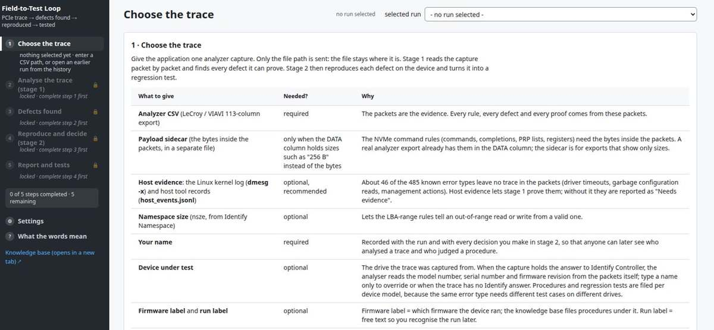
The first screen. The sidebar on the left shows the five steps. Under each step is a short status line ("locked · complete step 1 first"). The table explains every input.
4.1 The sidebar and the top bar (on every screen)
Steps 1 to 5
Buttons that open each step. A lock means the step before it is not finished yet. The line under each step shows its latest state ("complete · 14.7 s", "3 of 3 decided · 2 regression tests"). Code: show() and applyLocks() in main.js.
"0 of 6 steps completed · 6 remaining"
Counts the finished steps of the chosen run.
Settings, What the words mean
Open the settings page (12.4) and the word list page (12.5).
Knowledge base (opens in a new tab)
Opens /db (12.3).
Bottom of the sidebar: "AI reviewer Anthropic claude-haiku-5-5 · lab device simulated device"
Shows which AI model is linked up. It also shows where lab runs go: to the pretend drive inside the program, or to a real bench (setting stage2.bench).
"selected run" box, top right
Picks which run all the steps show. No run is picked when the page opens. So nobody works on someone else's run by mistake. A link that names a run (/?run=…) picks that run.
Green rounded label to its left ("stage 2 complete")
The state of the chosen run: analysing, stage 1 complete, stage 2 in progress, stage 2 complete, failed.
4.2 Every field
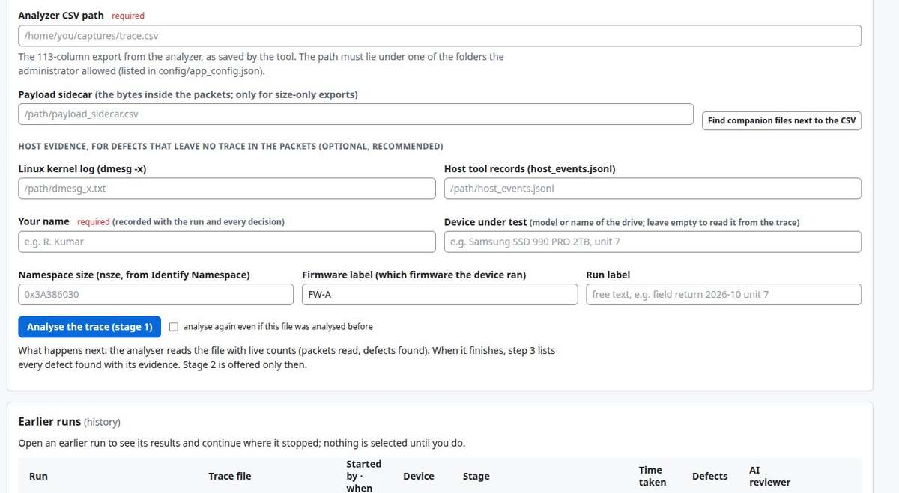
The input fields, the Analyse button, and the Earlier runs table.
Field
What to type
Sent to the server as
What the server does with it
Analyzer CSV path required
The full path of the trace file on the server's disk. It is the 113-column CSV (a text table) that the recording tool saved. For example /home/you/captures/trace.csv. Only the path is sent, never the file.
csv_path
safe_path checks that the file exists. It also checks that the file sits inside one of the allowed folders in config/app_config.json (paths.allowed_csv_roots). Any other path is refused with a message. This stops the screen from reading any file it likes.
Payload sidecar
Only needed if your trace file holds only packet sizes, not the bytes inside the packets. The sidecar is an extra file with those bytes.
payload
Passed to the analyser. Without the bytes, the NVMe rules cannot run. NVMe is the drive's command language; these rules check commands, answers and the drive's registers (its control slots). Then step 2 shows a yellow warning.
Analyzer error summary (Errors.csv)
The list of error kinds and their counts that the analyzer software makes itself (Reports › Error Summary, saved as a CSV file). You may leave it out.
errors
Turns on the "verify" step. It compares the analyzer's count of each of its 72 error kinds with what this analyser found, kind by kind, and step 2 shows the table. It also says which kinds this export cannot show by name: the analyzer writes some error packets without a packet number and without a name, unless the export was made with its "Errors" column.
Linux kernel log (dmesg -x), Host tool records (host_events.jsonl)
Evidence from the host (the computer): its system log and the records of its test tools. You may leave them out, but you should add them. About 46 error types leave no trace on the link.
dmesg, events
Turns on the "fuse" step. It places each host line on the same timeline as the packets.
Your name required
Who starts the run. Your browser remembers it for next time.
operator
Stored with the run. Stage 2 also puts it on every event as the person who decided, unless another name is typed.
Device under test
The drive's name. Leave it empty to read the name from the trace.
device
device_of picks the name in this order. First the typed name. Else the model number, taken from the drive's answer to the Identify Controller command in the trace. Else "PCI device vendor:device" (maker and product numbers) from the header every PCIe device has. Else "unknown device". The knowledge base files procedures and tests under each device model.
Namespace size (nsze)
From the drive's answer to Identify Namespace, for example 0x3A386030. A namespace is a part of the drive, and nsze is its size in blocks.
nsze
Turns on the rules that tell a block address past the end of the drive from a good one.
Firmware label
Which firmware (the program inside the drive) the drive ran. The default is FW-A.
firmware
The knowledge base stores procedures for each device and firmware. In the lab check, "known-bad firmware" is this label. "Fixed" is this label + "+fix".
Run label
Any text that helps you know the run again later.
label
Shown in the run lists only.
4.3 The buttons
Find companion files next to the CSV
Asks GET /api/runs/inputs (find_inputs) to search three folders. They are the CSV's own folder, <name>_outside_evidence/ and <name>_sidecars/. It looks for payload_sidecar.csv, dmesg_x.txt, host_events.jsonl and a manifest (a list file) with the namespace size. It fills in the fields it finds. Nothing is started.
Analyse the trace (stage 1)
First the browser checks your name and the CSV path. Then it sends POST /api/runs. The server works out a run key (a short code for this exact job). The key comes from the CSV path, the file's size and its last-changed time. It also uses the extra inputs and the AI reviewer settings. If a finished run has the same key, the server opens that run instead. The screen says "this file was already analysed – opened the existing run". Nothing is worked out again. If not, the server makes a run folder and starts the stage-1 job. The screen moves to step 2.
"analyse again even if this file was analysed before"
Sends force: true. This skips the reuse check.
Earlier runs table: Open
Picks that run. The browser only reads the run from the server; it changes nothing.
Earlier runs table: Delete
First you confirm. Then DELETE /api/runs/<run> removes the run folder, its jobs and its stage-2 state. It refuses while the run, or one of its lab jobs, is still working. The knowledge base is kept. Decisions, procedures and tests are learned knowledge, not run data.
The Earlier runs table has these columns. Run (id and label), Trace file, Started by · when and Device (name and where it came from). Then Stage, Time taken (stage 1 seconds) and Defects. Last, AI reviewer ("agrees on 2 · 0 fresh model calls · 3 verdicts reused from the cache").
Here is the browser side of the Analyse button.
app/static/js/run.js lines 29–40 · JavaScript in the browser
$("btn-start").onclick = async () => {
if (!$("operator").value.trim()) { $("run-msg").textContent = "Please type your name first: it is recorded with the run and with every decision."; $("operator").focus(); return; }
try { localStorage.setItem("operator", $("operator").value.trim()); } catch (e) { /* storage may be unavailable */ }
if (!$("csv_path").value.trim()) { $("run-msg").textContent = "the CSV path is required"; $("csv_path").focus(); return; }
try {
const r = await api("POST", "/api/runs", { csv_path: pathText($("csv_path").value), operator: $("operator").value.trim(), device: $("device").value.trim(), payload: pathText($("payload").value), dmesg: pathText($("dmesg").value), events: pathText($("events").value), errors: pathText($("errors").value), nsze: $("nsze").value, firmware: $("firmware").value, label: $("label").value, force: $("force").checked });
$("run-msg").textContent = r.reused ? "this file was already analysed - opened the existing run " + r.run_id : "analysis started: run " + r.run_id;
if (r.reused) toast(r.message, 7000);
S.run = r.run_id; await refreshRuns(); $("run-select").value = S.run; show("run", undefined, "analyse");
} catch (e) { $("run-msg").textContent = "error: " + e.message; }
};
$("btn-cancel").onclick = async () => { if (S.run && confirm("Stop the analysis of this trace? It stops after the step that is running now; the run is then marked failed. Its partial files stay in the run folder (Delete in Earlier runs removes them). You can analyse the file again later.")) { await api("POST", `/api/runs/${S.run}/cancel`); toast("stop requested"); } };
Here is the server side.
app/api/runs_api.py lines 42–67 · start_run()
csv_path, err = s.safe_path(body.get("csv_path"))
if err:
return jsonify({"error": err}), 400
extra = {}
for k in ("dmesg", "events", "payload", "errors"):
if body.get(k):
p, e = s.safe_path(body[k])
if e:
return jsonify({"error": "%s: %s" % (k, e)}), 400
extra[k] = p
nsze = body.get("nsze") or s.cfg["stage1"].get("nsze") or ""
key = s.run_key(csv_path, dict(extra, nsze=nsze), s.cfg["llm"])
if not body.get("force"):
prev = s.find_run(key)
if prev:
return jsonify({"run_id": prev["params"]["run_id"], "job": prev["id"], "reused": True,
"message": "this CSV was already processed with the same inputs and LLM settings; opened the existing run"})
run_id = time.strftime("run-%Y%m%d-%H%M%S-") + uuid.uuid4().hex[:4]
rd = os.path.join(s.root, "runs", run_id)
os.makedirs(rd, exist_ok=True)
params = {"run_id": run_id, "run_dir": rd, "csv_path": csv_path, "nsze": nsze, "key": key,
"firmware": body.get("firmware") or s.cfg["stage1"].get("firmware_label", "FW-A"), "llm": dict(s.cfg["llm"]),
"operator": (body.get("operator") or "").strip(), "device": (body.get("device") or "").strip(),
"cache_db": os.path.join(s.root, "db", "app.sqlite"), "label": body.get("label", ""), **extra}
jid = s.jobs.submit("stage1", params, run_stage1)
return jsonify({"run_id": run_id, "job": jid, "reused": False})
def safe_path(self, p, must_exist=True):
# a path pasted from Windows "Copy as path" carries quotes; one typed by hand may carry a stray space
p = (p or "").strip().strip('"').strip("'").strip()
if not p:
return None, "path required"
rp = pathlib.Path(os.path.expanduser(p)).resolve()
if must_exist and not rp.is_file():
return None, "not a file: %s" % rp
if not any(rp == r or rp.is_relative_to(r) for r in self.roots):
return None, "path outside the allowed roots (config paths.allowed_csv_roots): %s" % rp
return str(rp), None
def device_of(self, job):
"""The device a run belongs to. The analyser reads the identity from the trace itself when the capture holds it:
NVMe Identify Controller data (model number, serial number, firmware revision - NVMe Base Spec, Identify
Controller data structure bytes 04:71) and the PCIe configuration header (Vendor ID / Device ID). The operator
may also type a device name on the Choose-trace page. Name priority: the typed name, else the model number
from the trace, else the PCI ids, else "unknown device"."""
p = (job or {}).get("params", {})
rd = p.get("run_dir", "")
ident = ((self.load_json(os.path.join(rd, "run.json"), {}) or {}).get("topology") or {}).get("identity") or {}
pci = ("%s:%s" % (ident["pci_vendor_id"], ident.get("pci_device_id"))) if ident.get("pci_vendor_id") else None
typed = (p.get("device") or "").strip() or None
name = typed or ident.get("model_number") or (("PCI device %s" % pci) if pci else None)
source = ("typed by the operator" if typed else "read from the trace (NVMe Identify Controller)" if ident.get("model_number")
else "read from the trace (PCIe configuration header)" if pci else "not known: the trace holds no Identify Controller answer and no name was typed")
return {"name": name or "unknown device", "known": bool(name), "label": typed, "model_number": ident.get("model_number"),
"serial_number": ident.get("serial_number"), "firmware_revision": ident.get("firmware_revision"), "pci": pci, "source": source}
5. Steps 2 and 3 · Analyse the trace (stage 1) and the NVMe commands page
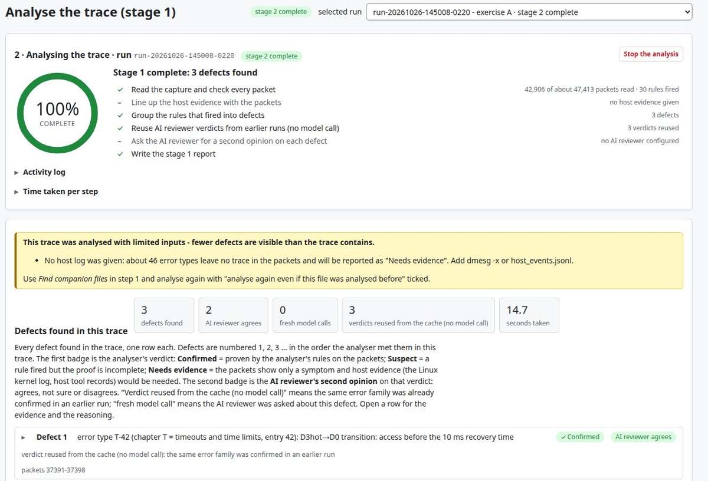
The progress ring, the seven steps with counts that update as they run, and the warning about limited inputs.
5.1 What you see
The ring (0–100 %)
Shows how far the stage-1 job has got. Each step owns a part of the ring. The analyse step moves with the number of packets read. While the job runs, the screen shows "about N min remaining". It guesses this from the rows read per second.
The step list
✓ done, ● running, ○ not yet, – skipped. The right column gives counts that update as the job runs. Examples: "42,906 of about 47,413 packets read · 30 rules fired", "3 defects", "3 verdicts reused". Others: "no AI reviewer configured", "no host evidence given". The program guesses the total packet count from the file size, before it reads.
Stop the analysis
Sends POST /api/runs/<run>/cancel. The job is marked as cancelled and stops before its next step. Half-done results are thrown away.
Activity log
Every line the analyser printed, with the time (from GET /api/jobs/<job>/events).
Time taken per step
How many seconds each step took (the job's timing "spans"), and the stage-1 total.
Yellow box "This trace was analysed with limited inputs"
get_run makes this box when inputs are missing: no packet bytes, no host log, no namespace size. It tells you what to add, and to use "analyse again".
Small labels: defects found, AI reviewer agrees, fresh model calls, verdicts reused, seconds taken
The run's totals.
Bottom bar "Stage 2 complete: 3 of 3 defects decided …" with Show as a table and Continue to stage 2
Open step 3 or step 5.
5.2 The eight steps, and what each one does in the program
The job function run_stage1 runs the analyser's own commands, one after another. It reads the progress they print, and times each one.
app/stage1_runner.py lines 138–163 · run_stage1()
an = ["analyze", "--csv", csv_path, "--out", run_dir]
if params.get("payload"):
an += ["--payload", params["payload"]]
if params.get("nsze"):
an += ["--nsze", str(params["nsze"])]
step("analyze", an, 10)
if params.get("dmesg") or params.get("events"):
f = ["fuse", "--run", run_dir]
if params.get("dmesg"):
f += ["--dmesg", params["dmesg"]]
if params.get("events"):
f += ["--events", params["events"]]
step("fuse", f, 25)
iso = ["isolate", "--run", run_dir, "--library", LIBRARY, "--csv", csv_path]
if params.get("payload"):
iso += ["--payload", params["payload"]]
step("isolate", iso, 40)
incs = json.load(open(os.path.join(run_dir, "incidents.json")))
summary["incidents"] = len(incs)
step("commands", ["commands", "--run", run_dir, "--model", cfg.get("model", "claude-haiku-5-5"), "--backend", backend], 72)
try:
cs = json.load(open(os.path.join(run_dir, "command_summary.json")))
summary["commands"] = {"n": cs.get("n_commands", 0), "kinds": cs.get("n_types", 0),
"with_errors": cs.get("n_with_errors", 0), "not_completed": cs.get("n_not_completed", 0)}
except Exception:
summary["commands"] = None
Read the capture and check every packet (analyze). The analyser goes through the CSV once, row by row. It never loads the whole file, so it works even on a 4 GB file. Each row goes to the code for its kind of packet. One kind is TLP (a packet that carries real work). Others are ACK (a "got it" reply) and other DLLPs (small housekeeping packets). Then come ordered sets (control signals on the cable), link events and markers. Fifteen trackers keep the state that the official rule book defines. They follow the link state and the ACK/NAK numbers (got it / send it again). They follow flow-control credits (how much room each side has left). They follow open requests by Requester ID + Tag (numbers that tie an answer to its request). They keep a copy of the standard setup registers every PCIe device has. They keep the BAR map (where the drive's registers sit in memory). They follow the drive's registers and the NVMe queues (NVMe is the drive's command language). They follow each command by queue + command id. They also follow interrupts (the drive's signals to the computer), power state, messages and speed counts. When a state goes wrong, a rule "fires". The analyser then records a finding with its packet number and a detail text. It always links packets by their id numbers, never by "the next row".
stage1/pcie_isolate/engine.py lines 535–629 · Engine.run()
def run(self):
t0 = time.time()
f = open(self.csv_path, newline="", encoding="utf-8-sig", errors="replace", buffering=1 << 22)
rd = csv.reader(f)
C = self.C = Cols(next(rd))
pad = C.pad
self.be_cols_absent = "FBE" in C.absent or "LBE" in C.absent
self.errors_col = "ERRORS" not in C.absent
if C.missing and self.progress:
print(" columns not in this export (treated as empty): %s" % ", ".join(C.missing), flush=True)
dirmap = self.calibrate_dirs(C)
iTLP, iDLLP, iOS, iEVT, iMARK, iPKT, iTS = C.TLP, C.DLLP, C.OS, C.EVT, C.MARKER, C.PKT, C.TS
iDIR, iACK, iCRC, iERR = C.DIR, C.ACKSEQ, C.CRC16, C.ERRORS
tie_n, tie_t = 0, -1
rows = 0
width = len(C.header)
for row in rd:
rows += 1
if pad:
row += pad
if len(row) < width:
# a short row (truncated line, export cut mid-row): pad so every column reads as empty
row += [""] * (width - len(row))
if dirmap:
row[iDIR] = dirmap.get(row[iDIR], row[iDIR])
# ---- real exports contain rows the decoder cannot place: note them, never stop on them
pkt_s = row[iPKT]
if not pkt_s.isdigit():
if not pkt_s:
self.on_undecoded(rows, row) # an error packet: the analyzer wrote no number and no type
else:
self.skip_row(rows, pkt_s, "packet number is not a whole number", row)
continue
pkt = int(pkt_s)
t = ts_ps_or_none(row[iTS])
if t is None:
if self.last_t is None:
self.skip_row(rows, pkt_s, "no time stamp", row)
continue
t = self.last_t
self.undecoded["no time stamp (previous row's time used)"] += 1
tl = row[iTLP]
try:
if row[iERR]:
self.on_errors_column(row[iERR], pkt, t, row[iDIR])
if tl:
self.vocab_add("TLP Type", tl)
self.on_tlp(row, pkt, t, tl)
else:
dl = row[iDLLP]
if dl == "ACK":
seq_s = row[iACK]
seq = _num(seq_s) if seq_s else None
if seq is not None:
self.on_ack(row[iDIR], seq, pkt, t, False)
else:
# an Ack whose sequence number the analyzer could not decode: it still proves the
# data link is alive, but it cannot be matched to the TLPs it acknowledges
self.tlps_since_dllp = 0
self.dllp_filter_open = False
self.last_ack_t[row[iDIR]] = t
self.skip_row(rows, pkt_s, "Ack without a sequence number", row, kept=True)
if _bad(row[iCRC]):
self.emit("DLL.CRC16_BAD", pkt, t, "%s Ack CRC 16 %s (DLLP discarded)" %
(row[iDIR], row[iCRC]), qual="ACK")
self.token(pkt, "D|ACK|bad")
elif dl:
self.vocab_add("DLLP Type", dl)
self.on_dllp(row, pkt, t, dl)
elif row[iOS]:
self.vocab_add("Ord.Set Type", row[iOS])
self.on_os(row, pkt, t, row[iOS])
elif row[iEVT]:
self.vocab_add("Link Event", row[iEVT])
self.on_event(row, pkt, t, row[iEVT])
else:
self.on_other(row, pkt, t)
if row[iMARK]:
self.on_marker(row[iMARK], pkt, t)
except (ValueError, IndexError, KeyError) as ex:
# one row with a cell the decoder does not understand must not stop a 5 GB analysis
self.skip_row(rows, pkt_s, "cell not understood (%s)" % str(ex)[:80], row, kept=True)
if t == tie_t:
tie_n += 1
if tie_n == 16:
self.emit("CI.TS_TIE", pkt - 15, t, "16+ consecutive rows share one Time Stamp "
"(analyzer timestamp precision / export rounding)")
else:
tie_n, tie_t = 0, t
if not rows & 15:
self.tix.append(t)
self.pix.append(pkt)
if self.first_t is None:
self.first_t = t
self.last_t, self.last_pkt = t, pkt
Example: the rule that finds error type T-42. The host writes D0 (fully on) into the power-management register. The analyser notes the time. Any memory read or write to the drive less than 10 ms later fires CFG.D0_EARLY.
stage1/pcie_isolate/engine.py lines 1767–1787 · Engine.mmio_gate()
def mmio_gate(self, pkt, t, what, key=None):
"""Checks every host MMIO access against the config shadow. key = (RequesterID, Tag) of a non-posted access,
so that the finding and the access's completion name the same transaction (PCIe 4.0 §2.2.6.2)."""
ks = (("tag",) + tuple(key),) if key else ()
if self.cfg_first_t is not None:
self.sample("config_to_driver", t - self.cfg_first_t[0], self.cfg_first_t[1])
self.cfg_first_t = None
if self.cmd_reg is not None and not self.cmd_reg & 0x2:
self.emit("CFG.MEM_DISABLED_MMIO", pkt, t, "%s with Memory Space Enable = 0" % what, keys=ks)
if self.dstate == 3:
self.emit("CFG.D3_ACCESS", pkt, t, "%s while the function is in D3hot" % what, keys=ks)
if self.d0_t and t - self.d0_t[0] < self.D0_WAIT_PS:
self.emit("CFG.D0_EARLY", pkt, t, "%s %s after D3hot->D0" % (what, fmt_dt(t - self.d0_t[0])),
keys=ks, rel=(self.d0_t[1],))
self.d0_t = None
elif self.d0_t and t - self.d0_t[0] >= self.D0_WAIT_PS:
self.d0_t = None
if self.flr_t and t - self.flr_t[0] < self.FLR_WAIT_PS:
self.emit("CFG.FLR_EARLY", pkt, t, "%s %s after FLR" % (what, fmt_dt(t - self.flr_t[0])),
keys=ks, rel=(self.flr_t[1],))
self.flr_t = None
The rule's line in the rule table gives its tier (what kind of check it is). It also gives its level (defect or context), the verdict it hands out, its layer and its families.
stage1/pcie_isolate/rules.py lines 111–111 · rules.py
Line up the host evidence with the packets (fuse). This step runs only when you gave a dmesg or host_events file. It places each host line on the same timeline as the packets. Then a defect can point to that line.
Group the rules that fired into defects (isolate). Findings that name the same transaction, command or sequence number, or that refer to each other's packet, form one defect; nothing is joined by distance. A context finding (a host action, a reset) is added only when a finding refers to it. For each defect the step works out several things. First, the first packet that went wrong. Second, an evidence graph. This map links findings with the same ids, and adds published cause→effect links. The starting point of the map is the root cause. Third, the catalogue match. The step scores all 485 error types against the findings and keeps the top three as possible answers. Fourth, who caused it, found by rules R0–R10 (section 2.4). Last, the NVMe command and host task involved, and the packet rows around the defect.
stage1/pcie_isolate/incidents.py lines 89–147 · cluster()
def cluster(findings):
"""Group findings by specification-defined relations only (SAME_KEY, REFERS, SAME_ROW), then fold
identifier-less findings of one rule and qualifier into one SERIES group. Context findings (host actions,
resets) are kept only when a defect finding refers to them; an unrelated context finding is not a defect."""
fs = sorted(findings, key=lambda f: (f[0], f[2]))
n = len(fs)
parent = list(range(n))
def find(i):
while parent[i] != i:
parent[i] = parent[parent[i]]
i = parent[i]
return i
def union(i, j):
ri, rj = find(i), find(j)
if ri != rj:
parent[max(ri, rj)] = min(ri, rj)
by_key = defaultdict(list)
by_pkt = defaultdict(list)
for i, f in enumerate(fs):
for k in f[5]:
if k and k[0] in LINK_KEYS:
by_key[tuple(k)].append(i)
by_pkt[f[0]].append(i)
for ids in by_key.values(): # SAME_KEY
for j in ids[1:]:
union(ids[0], j)
for ids in by_pkt.values(): # SAME_ROW
for j in ids[1:]:
union(ids[0], j)
for i, f in enumerate(fs): # REFERS
for p in f[6]:
if isinstance(p, int):
for j in by_pkt.get(p, ()):
union(i, j)
groups = defaultdict(list)
for i, f in enumerate(fs):
groups[find(i)].append(f)
out = []
series = {}
for g in groups.values():
defects = [f for f in g if RULES[f[2]]["level"] == DEFECT and RULES[f[2]]["tier"] != "S"]
if not defects:
continue # context or statistics alone is not a defect
if len(g) == 1 and not g[0][5] and not [p for p in g[0][6] if isinstance(p, int)]:
# no identifier, no reference: one of a series (rule, qualifier)
f = g[0]
series.setdefault((f[2], f[3]), []).append(f)
continue
lo = min(interval(f)[0] for f in g)
hi = max(interval(f)[1] for f in g)
out.append({"lo": lo, "hi": hi, "f": sorted(g, key=lambda f: f[0]), "kind": "linked"})
for (rule, qual), fl in series.items():
fl.sort(key=lambda f: f[0])
out.append({"lo": fl[0][0], "hi": fl[0][0], "f": fl, "kind": "series", "series_count": len(fl),
"series_pkts": [f[0] for f in fl]})
out.sort(key=lambda g: (g["lo"], g["hi"]))
return out
Summarise every NVMe command (commands). While reading, the analyser followed each command from its doorbell write to its completion entry and wrote one line per command (commands.jsonl). This step turns those lines into the NVMe commands page: the parameters each command carried (decoded as the NVMe specifications define the fields), the time of each step, a label with its basis, and the packet-level findings that carry the command's identity.
stage1/pcie_isolate/commands.py lines 634–963 · build()
def build(run_dir, max_examples=50):
src = os.path.join(run_dir, "commands.jsonl")
recs = []
if os.path.exists(src):
with open(src) as f:
for line in f:
line = line.strip()
if line:
recs.append(json.loads(line))
findings = _load_findings(run_dir)
by_pkt = collections.defaultdict(list)
by_cmd = collections.defaultdict(list)
for f in findings:
by_pkt[f[0]].append(f)
for k in f[5]:
if k and k[0] == "cmd" and len(k) == 4:
by_cmd[(k[1], k[2], k[3])].append(f)
defects = _defect_index(run_dir)
# ---- per command type
groups = collections.defaultdict(list)
for r in recs:
groups[(0 if r["sqid"] == 0 else 1, r["opc"])].append(r)
# submission intervals per queue (time between consecutive doorbells / fetches) and host gaps
per_queue = collections.defaultdict(list)
for r in recs:
t = r.get("t_db") if r.get("t_db") is not None else r.get("t_fetch")
if t is not None:
per_queue[r["sqid"]].append((t, r))
intervals = {"admin": [], "io": []}
host_gaps = {"admin": [], "io": []}
for q, lst in per_queue.items():
lst.sort(key=lambda x: x[0])
cls = "admin" if q == 0 else "io"
for (t0, r0), (t1, r1) in zip(lst, lst[1:]):
intervals[cls].append(t1 - t0)
if r0.get("t_cqe") is not None and t1 >= r0["t_cqe"]:
host_gaps[cls].append(t1 - r0["t_cqe"])
types = []
all_rows = []
for (is_io, opc), lst in sorted(groups.items(), key=lambda kv: (kv[0][0], -len(kv[1]))):
sqid0 = 1 if is_io else 0
name = opc_name(sqid0, opc)
lats = [total_latency(r) for r in lst]
done = [r for r in lst if r.get("end") == "cqe"]
st_total = stats([total_latency(r) for r in done])
p90 = st_total["p90"] if st_total else None
p99 = st_total["p99"] if st_total else None
step_stats = {}
for r in done:
for s in steps_of(r):
step_stats.setdefault(s["step"], {"owner": s["owner"], "plain": s["plain"], "vals": []})
step_stats[s["step"]]["vals"].append(s["ps"])
steps = [{"step": k, "owner": v["owner"], "plain": v["plain"], "stats": stats(v["vals"])}
for k, v in step_stats.items()]
status = collections.Counter(status_words(tuple(r["status"])) if r.get("status") else
("no completion: " + str(r.get("lost") or r.get("end"))) for r in lst)
over = sum(1 for r, l in zip(lst, lats) if r.get("end") == "cqe" and l is not None and
l > HOST_LIMIT["admin" if sqid0 == 0 else "io"])
# observed parameter ranges
obs = {}
if is_io and opc in (0x01, 0x02, 0x04, 0x05, 0x08, 0x0C, 0x7D):
sl = [r.get("slba") for r in lst if r.get("slba") is not None]
nl = [r.get("nlb") for r in lst if r.get("nlb") is not None]
lb = lst[0].get("lba_bytes") or 512
obs = {"LBA range": "%d to %d" % (min(sl), max(sl + [s + n for s, n in zip(sl, nl)])) if sl else "-",
"blocks per command": "%d to %d" % (min(nl), max(nl)) if nl else "-",
"bytes per command": "%d to %d" % (min(nl) * lb, max(nl) * lb) if nl else "-",
"FUA set": sum(1 for r in lst if _bits((r.get("dw") or [0] * 6)[2], 30, 30)),
"namespaces": sorted({r.get("nsid") for r in lst})[:8]}
elif is_io and opc == 0x09:
obs = {"ranges per command": "%d to %d" % (min(((r.get("dw") or [0])[0] & 0xFF) + 1 for r in lst),
max(((r.get("dw") or [0])[0] & 0xFF) + 1 for r in lst)),
"deallocate (AD) set": sum(1 for r in lst if _bits((r.get("dw") or [0, 0])[1], 2, 2)),
"namespaces": sorted({r.get("nsid") for r in lst})[:8]}
elif not is_io and opc in (0x09, 0x0A):
fids = collections.Counter(FID_NAMES.get((r.get("dw") or [0])[0] & 0xFF, "0x%02X" % ((r.get("dw") or [0])[0] & 0xFF)) for r in lst)
obs = {"features": dict(fids.most_common(12))}
elif not is_io and opc == 0x02:
lids = collections.Counter(LID_NAMES.get((r.get("dw") or [0])[0] & 0xFF, "0x%02X" % ((r.get("dw") or [0])[0] & 0xFF)) for r in lst)
obs = {"log pages": dict(lids.most_common(12))}
elif not is_io and opc == 0x06:
cns = collections.Counter(CNS_NAMES.get((r.get("dw") or [0])[0] & 0xFF, "0x%02X" % ((r.get("dw") or [0])[0] & 0xFF)) for r in lst)
obs = {"structures": dict(cns.most_common(12))}
elif not is_io and opc in (0x01, 0x05):
obs = {"queues": sorted({(r.get("dw") or [0])[0] & 0xFFFF for r in lst})[:16],
"queue sizes": sorted({((r.get("dw") or [0])[0] >> 16) + 1 for r in lst})[:8]}
# errors
err_counter = collections.Counter()
err_examples = {}
rows_with_err = []
for r in lst:
errs = errors_for(r, by_pkt, by_cmd, defects)
r["_errs"] = errs
for e in errs:
err_counter[e["rule"]] += 1
err_examples.setdefault(e["rule"], []).append({"pkt": e["pkt"], "cid": r["cid"], "sqid": r["sqid"],
"defect": e["defect"], "detail": e["detail"]})
if errs:
rows_with_err.append(r)
errors = [{"rule": k, "count": n, "text": RULES.get(k, {}).get("text", k), "layer": RULES.get(k, {}).get("layer"),
"examples": err_examples[k][:3]} for k, n in err_counter.most_common()]
# example rows: slowest and with errors
def row_of(r):
lat = total_latency(r)
return {"sqid": r["sqid"], "cid": r["cid"], "opc": r["opc"], "name": name, "inst": r.get("inst"),
"pkt_db": r.get("pkt_db"), "pkt_fetch": r.get("pkt_fetch"), "pkt_cqe": r.get("pkt_cqe"),
"end": r.get("end"), "lost": r.get("lost"), "qd": r.get("qd"), "xfer": r.get("xfer"),
"moved": r.get("moved"), "n_data": r.get("n_data"), "status": status_words(tuple(r["status"])) if r.get("status") else None,
"latency_ps": lat, "latency": fmt_ps(lat), "label": label_for(r, lat, p90, p99),
"steps": [{"step": s["step"], "owner": s["owner"], "ps": s["ps"], "text": fmt_ps(s["ps"])} for s in steps_of(r)],
"params": param_rows(r), "pieces": pieces_of(r), "errors": r.get("_errs", [])}
slowest = sorted((r for r in done if total_latency(r) is not None), key=lambda r: -total_latency(r))[:5]
ex_rows = {}
for r in rows_with_err[:max_examples] + slowest + [r for r in lst if r.get("end") != "cqe"][:max_examples]:
ex_rows[(r["sqid"], r["cid"], r.get("inst"))] = row_of(r)
for r in lst:
all_rows.append({"sqid": r["sqid"], "cid": r["cid"], "opc": r["opc"], "name": name, "inst": r.get("inst"),
"latency_ps": total_latency(r), "end": r.get("end"), "status": r.get("status"),
"n_errors": len(r.get("_errs", [])), "xfer": r.get("xfer"), "qd": r.get("qd")})
cls = "admin" if sqid0 == 0 else "io"
types.append({
"klass": "Admin command" if sqid0 == 0 else "I/O command", "opcode": "0x%02X" % opc, "name": name,
"count": len(lst), "completed": len(done), "not_completed": len(lst) - len(done),
"parameters": {"fields": param_fields(sqid0, opc), "observed": obs,
"source": (NVME_BASE if sqid0 == 0 else NVM_CS) + name},
"latency": {"total": st_total, "total_text": {k: fmt_ps(v) for k, v in (st_total or {}).items() if k != "n"},
"steps": steps, "over_host_limit": over, "host_limit_s": HOST_LIMIT[cls] // SEC,
"long_by_nature": LONG_BY_NATURE.get(opc) if sqid0 == 0 else None,
"p90_text": fmt_ps(p90), "p99_text": fmt_ps(p99),
"buckets_us": bucket_counts([total_latency(r) for r in done], LAT_BUCKETS, US),
"qd": qd_bucket_counts([r.get("qd") for r in lst]),
"sizes": size_bucket_counts([r.get("xfer") for r in lst]) if (is_io and opc in (0x01, 0x02, 0x05, 0x7D)) else None},
"status": dict(status.most_common()),
"errors": errors, "commands_with_errors": len(rows_with_err),
"examples": list(ex_rows.values())})
# ---- the error-first view: one row per command that failed, never completed, or carries a packet-level error;
# each row ties the command, its parameters, the time it took and the packets that went wrong
error_rows, error_kinds = [], collections.Counter()
for (is_io, opc), lst in groups.items():
sqid0 = 1 if is_io else 0
name = opc_name(sqid0, opc)
done = [r for r in lst if r.get("end") == "cqe"]
st_total = stats([total_latency(r) for r in done])
p90 = st_total["p90"] if st_total else None
p99 = st_total["p99"] if st_total else None
for r in lst:
failed = bool(r.get("status")) and (r["status"][0] or r["status"][1])
if not (r.get("_errs") or failed or r.get("end") != "cqe"):
continue
kinds = []
if r.get("end") != "cqe":
kinds.append("never completed: " + str(r.get("lost") or r.get("end")))
if failed:
kinds.append(status_words(tuple(r["status"])).split(" (")[0])
for e in r.get("_errs") or []:
if e["rule"] == "NVME.STATUS" and failed:
continue # the same fact as the status word above
kinds.append(e["text"])
for k in set(kinds):
error_kinds[k] += 1
lat = total_latency(r)
error_rows.append({"sqid": r["sqid"], "cid": r["cid"], "opc": r["opc"], "name": name, "inst": r.get("inst"),
"klass": "admin" if sqid0 == 0 else "io", "kinds": sorted(set(kinds)),
"params": [p for p in param_rows(r) if p[0] not in ("data pointer", "LR")][:8],
"latency_ps": lat, "latency": fmt_ps(lat), "label": label_for(r, lat, p90, p99),
"steps": [{"step": s_["step"], "owner": s_["owner"], "text": fmt_ps(s_["ps"])} for s_ in steps_of(r)],
"status": status_words(tuple(r["status"])) if r.get("status") else None,
"end": r.get("end"), "lost": r.get("lost"), "n_pieces": r.get("n_data"),
"errors": r.get("_errs") or [], "pieces": pieces_of(r)})
error_rows.sort(key=lambda x: x["inst"] or 0)
# ---- the management view: per kind of command, how often it was called, how often it went wrong, which
# parameters separate the failures, which packets sit behind them, the usual time against the limit, and
# who is responsible by the specification's own status definitions
management = []
for (is_io, opc), lst in sorted(groups.items(), key=lambda kv: (kv[0][0], -len(kv[1]))):
sqid0 = 1 if is_io else 0
name = opc_name(sqid0, opc)
cls = "admin" if sqid0 == 0 else "io"
bad = [r for r in lst if (r.get("status") and (r["status"][0] or r["status"][1])) or r.get("end") != "cqe" or r.get("_errs")]
if not bad:
continue
ok = [r for r in lst if r.get("end") == "cqe" and not (r["status"][0] or r["status"][1])]
lat_ok = [total_latency(r) for r in ok]
st_ok = stats(lat_ok)
lat_bad = [total_latency(r) for r in bad if r.get("end") == "cqe"]
failed = [r for r in lst if r.get("status") and (r["status"][0] or r["status"][1])]
lost = [r for r in lst if r.get("end") != "cqe"]
over = [r for r in lst if r.get("end") == "cqe" and total_latency(r) is not None and total_latency(r) > HOST_LIMIT[cls]]
p99_ok = st_ok["p99"] if st_ok else None
slow = [r for r in ok if p99_ok and total_latency(r) is not None and total_latency(r) >= p99_ok and len(ok) >= 20]
# statuses with who is responsible
st_counter = collections.Counter(tuple(r["status"]) for r in failed)
statuses = []
for stt, cnt in st_counter.most_common():
side, reason = who_by_status(stt)
statuses.append({"status": status_words(stt), "count": cnt, "side": side, "reason": reason})
# parameter contrasts: which attribute values carry the failures
def attrs(r):
dw = (r.get("dw") or [0] * 6) + [0] * 6
a = []
if is_io and opc in (0x01, 0x02, 0x04, 0x05, 0x08, 0x0C, 0x7D):
a.append(("FUA (Force Unit Access)", "set" if _bits(dw[2], 30, 30) else "not set"))
sz = next((lab for lab, lo, hi in SIZE_BUCKETS if (r.get("xfer") or 0) >= lo and (hi is None or (r.get("xfer") or 0) <= hi)), "?")
a.append(("transfer size", sz))
a.append(("namespace", "NSID %s" % r.get("nsid")))
dsm = dw[3] & 0xFF
if dsm:
a.append(("DSM access latency hint", ACCESS_LATENCY.get(_bits(dsm, 5, 4))))
if opc == 0x08:
a.append(("DEAC (deallocate)", "set" if _bits(dw[2], 25, 25) else "not set"))
elif is_io and opc == 0x09:
a.append(("deallocate (AD)", "set" if _bits(dw[1], 2, 2) else "not set"))
a.append(("ranges per command", str((dw[0] & 0xFF) + 1)))
elif not is_io and opc in (0x09, 0x0A):
a.append(("feature", FID_NAMES.get(dw[0] & 0xFF, "0x%02X" % (dw[0] & 0xFF))))
elif not is_io and opc == 0x02:
a.append(("log page", LID_NAMES.get(dw[0] & 0xFF, "0x%02X" % (dw[0] & 0xFF))))
elif not is_io and opc == 0x06:
a.append(("structure", CNS_NAMES.get(dw[0] & 0xFF, "0x%02X" % (dw[0] & 0xFF))))
elif not is_io and opc in (0x01, 0x05, 0x00, 0x04):
a.append(("queue", "QID %d" % (dw[0] & 0xFFFF)))
qd = r.get("qd")
if qd is not None:
a.append(("queue depth at submission", next((lab for lab, lo, hi in QD_BUCKETS if qd >= lo and (hi is None or qd <= hi)), "?")))
return a
tot = collections.Counter()
fail = collections.Counter()
badset = {(r["sqid"], r["cid"], r.get("inst")) for r in bad}
for r in lst:
for av in attrs(r):
tot[av] += 1
if (r["sqid"], r["cid"], r.get("inst")) in badset:
fail[av] += 1
overall = len(bad) / len(lst)
contrasts = []
for av, n_tot in tot.items():
n_f = fail.get(av, 0)
if n_f == 0 or n_tot == 0:
continue
rate = n_f / n_tot
# the complement: the same attribute with any other value
others_tot = sum(v for k, v in tot.items() if k[0] == av[0] and k != av)
others_f = sum(v for k, v in fail.items() if k[0] == av[0] and k != av)
contrasts.append({"attribute": av[0], "value": av[1], "failed": n_f, "total": n_tot,
"rate": rate, "share_of_failures": n_f / len(bad),
"others_failed": others_f, "others_total": others_tot,
"lift": (rate / overall) if overall else None})
contrasts.sort(key=lambda c: (-c["share_of_failures"], -(c["lift"] or 0)))
separating = [c for c in contrasts if c["share_of_failures"] >= 0.5 and c["others_total"] >= 10 and
(c["others_failed"] / c["others_total"]) < c["rate"] and (c["lift"] or 0) >= 1.5]
# LBA band and sizes of the failures
lba_note = None
if is_io and opc in (0x01, 0x02, 0x04, 0x05, 0x08, 0x0C, 0x7D):
sl = [r["slba"] for r in bad if r.get("slba") is not None]
if sl:
nl = [r.get("nlb") or 0 for r in bad]
lba_note = {"lba_min": min(sl), "lba_max": max(s_ + n_ for s_, n_ in zip(sl, nl)),
"blocks": sorted({r.get("nlb") for r in bad}),
"all_lba_min": min(r["slba"] for r in lst if r.get("slba") is not None),
"all_lba_max": max((r["slba"] or 0) + (r.get("nlb") or 0) for r in lst)}
# packets behind the failures
pk = collections.Counter()
pk_ex = {}
for r in bad:
for e in r.get("_errs") or []:
pk[e["rule"]] += 1
pk_ex.setdefault(e["rule"], []).append(e["pkt"])
packets = [{"rule": k, "text": RULES.get(k, {}).get("text", k), "layer": RULES.get(k, {}).get("layer"),
"count": n_, "example_pkts": sorted(pk_ex[k])[:4]} for k, n_ in pk.most_common()]
defects = sorted({e["defect"] for r in bad for e in (r.get("_errs") or []) if e.get("defect")})
sides = collections.Counter(st_["side"] for st_ in statuses for _ in range(st_["count"]) if st_["side"])
ci = wilson(len(bad), len(lst))
facts = {
"kind": name, "klass": "admin" if sqid0 == 0 else "I/O", "opcode": "0x%02X" % opc,
"called": len(lst), "went_wrong": len(bad), "rate": len(bad) / len(lst), "rate_ci": ci,
"failed_status": len(failed), "never_completed": len(lost), "packet_errors_on_successful": len([r for r in bad if r not in failed and r not in lost]),
"over_host_limit": len(over), "slowest_1pct_of_successful": len(slow),
"statuses": statuses, "responsible": dict(sides.most_common()),
"contrasts": contrasts[:8], "separating": separating[:3], "lba": lba_note,
"packets": packets, "defects": defects,
"timing": {"usual_successful": fmt_ps(st_ok["p50"]) if st_ok else None, "usual_successful_ps": st_ok["p50"] if st_ok else None,
"successful_n": len(ok), "failed_min": fmt_ps(min(lat_bad)) if lat_bad else None, "failed_max": fmt_ps(max(lat_bad)) if lat_bad else None,
"host_limit_s": HOST_LIMIT[cls] // SEC, "spec_note": ("the NVMe specification sets no completion time for %s" % name) if not (sqid0 == 0 and opc in LONG_BY_NATURE) else ("%s is long by nature: %s" % (name, LONG_BY_NATURE_NOTE))},
}
facts["lines"] = management_lines(facts)
management.append(facts)
management.sort(key=lambda m: (-m["went_wrong"], -m["rate"]))
# ---- controller-level events that are not commands (budgets from the specification)
reg = collections.Counter(f[2] for f in findings if f[2].startswith("REG.") or f[2] in ("PM.RESUME_SLOW",))
controller = [{"rule": k, "count": n, "text": RULES.get(k, {}).get("text", k), "spec": RULES.get(k, {}).get("spec", "")}
for k, n in reg.most_common()]
summary = {
"n_commands": len(recs), "n_types": len(types),
"n_admin": sum(1 for r in recs if r["sqid"] == 0), "n_io": sum(1 for r in recs if r["sqid"] != 0),
"n_not_completed": sum(1 for r in recs if r.get("end") != "cqe"),
"n_with_errors": sum(1 for r in recs if r.get("_errs")),
"types": types,
"error_rows": error_rows[:3000], "n_error_rows": len(error_rows),
"management": management,
"management_basis": {"rate": "went wrong = failed status, never completed, or a packet-level error under it; the interval is the Wilson 95 % interval of the rate",
"responsible": WHO_BASIS,
"contrast": "an attribute value 'separates' the failures when it carries at least half of them and its failure rate is above the rate of the other values of the same attribute; it is an association in this capture, not a proven cause",
"timing": "usual = median of the successful commands of the same kind in this capture; the limit is the host driver's; " + HOST_LIMIT_SOURCE},
"error_kinds": [{"kind": k, "count": n} for k, n in error_kinds.most_common()],
"intervals_ms": {k: bucket_counts(v, INTERVAL_BUCKETS, MS) for k, v in intervals.items()},
"host_gaps": {k: stats(v) for k, v in host_gaps.items()},
"host_gaps_text": {k: {kk: fmt_ps(vv) for kk, vv in (stats(v) or {}).items() if kk != "n"} for k, v in host_gaps.items()},
"controller_events": controller,
"basis": {
"parameters": "decoded from the submission entry as NVMe Base 2.0 chapter 5 (admin) and NVM Command Set 1.0 "
"section 3.2 (I/O) define the fields; LBA data size from Identify Namespace LBADS",
"latency": "measured from the capture timestamps: doorbell write, entry fetch, first and last data packet, "
"completion entry; step owners from the NVMe queue model (Base 2.0 section 3.3)",
"labels": "over the limit: " + HOST_LIMIT_SOURCE + "; slowest 1 % / 10 %: the command is at or above the "
"99th / 90th percentile of its own kind in this capture; typical: below the 90th percentile; "
"long by nature: " + LONG_BY_NATURE_NOTE,
"errors": "findings of the stage 1 rules that carry the command's identity (SQID, CID, submission packet) "
"or sit on one of the command's own packets (doorbell, fetch, entry, data packets, completion); "
"each names the defect it was grouped into",
"buckets": "bucket edges as in the driver team's Trace Vision tables, for comparison",
"no_payload": "when the DATA column holds only sizes, no command can be decoded and this page is empty"},
}
json.dump(summary, open(os.path.join(run_dir, "command_summary.json"), "w"), indent=1)
with open(os.path.join(run_dir, "command_rows.jsonl"), "w") as f:
for row in all_rows:
f.write(json.dumps(row, separators=(",", ":")) + "\n")
print("commands: %d commands, %d kinds, %d with errors, %d not completed -> %s" %
(summary["n_commands"], summary["n_types"], summary["n_with_errors"], summary["n_not_completed"],
os.path.join(run_dir, "command_summary.json")), flush=True)
return summary
Reuse AI reviewer verdicts from earlier runs (pattern cache, a store of earlier answers). For each defect the step builds a key from these things. The error type, the first rule, the family and the layer. The set of rules, and the order of packet kinds in its rows. The AI model, and the version of the prompt (the question sent to the AI). If that key was confirmed before, the step writes the stored verdict for this defect. It calls no model. A new model or a new prompt gives a new key. So old verdicts are never used for a new model.
app/pattern_cache.py lines 41–50 · pattern_key()
Ask the AI reviewer for a second opinion on each defect (review). This runs only for defects the cache did not answer, and only when a model is set up. The AI reviewer gets the evidence rows and the rule text. It must answer agrees, not sure or disagrees. It must also say which rules it agrees with and which packets it points to. It says who it thinks caused the defect, and gives other explanations. If it points to packets that are not in the evidence, the program flags them. It never changes the analyser's verdict.
Write the stage 1 report (report). It writes isolation.json and isolation_report.md. They hold one record per defect: status, where, why and evidence. They also say what outside evidence is needed, and give the fix text from the catalogue.
(Optional) Assess the capture as a whole (capture_check). One model call says if this capture can show what we are looking for at all. It is only advice; it never makes the run fail.
Why the AI reviewer is only a second opinion
The rules come from the official rule books, and anyone can check them. Nobody can check an AI answer that way. So the verdict comes from the rules. The AI reviewer's job is to catch a rule that fired for the wrong reason. The screen shows every disagreement ("disputed: inspect by hand"). The program never quietly acts on it.
5.3 The defect rows under the ring
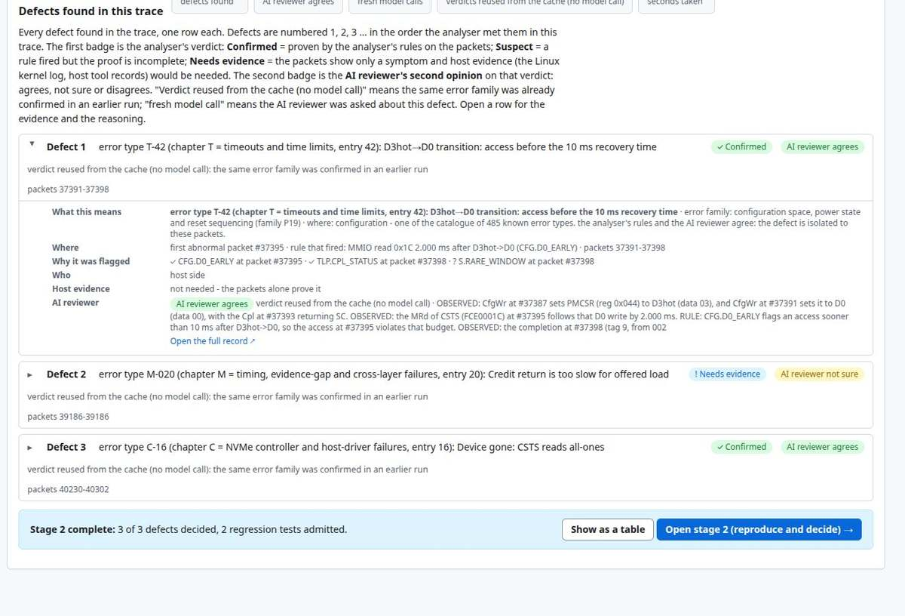
One row per defect. An open row shows "What this means", "Where", "Why it was flagged" and "Who". It also shows "Host evidence" and the AI reviewer's summary.
Each row shows Defect N and the error type written out. Next comes the verdict badge (✓ Confirmed? Suspect! Needs evidence). Then the AI reviewer badge, whether the verdict came from the cache, and the packet range. When you open the row, you see more. It shows the error family and the layer. It shows the first packet that went wrong (on the screen: "first abnormal packet"). It shows the rule that fired there, with its detail ("MMIO read 0x1C 2.000 ms after D3hot→D0"). Here MMIO means reading the drive's registers as if they were memory. D3hot→D0 means waking up from deep sleep. It shows why the defect was flagged: each rule with ✓ and its role. It shows who caused it, and which R-rule decided that. It says whether host evidence was needed. It gives the AI reviewer's verdict and summary. Last, it links to the full record (section 6.2).
5.4 Step 3 · NVMe commands
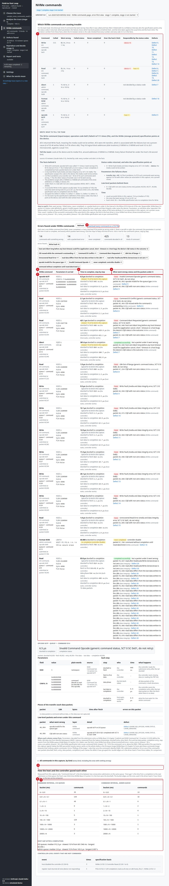
Step 3. The chips name every kind of error found; each row ties one failed command to the parameters it carried, the time it took step by step, and the packets that went wrong under it; the opened row shows the command piece by piece.
The first block of the third step is for the team lead: one line per kind of command that went wrong, with how often it was called and failed (and the 95 % interval of that rate), who the specification points at by the status codes returned (NVMe Base 2.0 section 4.2 assigns each code to the host or the device), which parameter values the failures share (an association in this capture, never a cause), the packets behind them, and the usual time against the failed time and the host's limit. A short narrative sits on top; when the AI reviewer wrote it, the code checked that every number and side in it is in the facts and that it asserts no cause of its own, else the fact-built sentences are shown.
Under it, the step leads with the errors found under NVMe commands: one row per command that failed, never completed, or had a low-level PCIe packet go wrong under it. The four columns of a row belong together and are read left to right. A strip of chips above the table names each kind of error found and filters the rows. A folded table under it lists every command by kind, with the same four columns as statistics.
Column
What it holds
Where it comes from
NVMe command
admin or I/O, the name and opcode, how many were seen, how many never completed, the completion statuses named as the specification names them
the submission entry (opcode, command id, queue) and the completion entry (status); NVMe Base 2.0 sections 4.1 and 4.2
Parameters the command carries
the fields the specification defines for that opcode and the values seen: namespace, starting LBA, number of blocks, bytes, Force Unit Access, the DSM hints, trim ranges, feature names, log names, queue sizes …
command dwords 10 to 15, decoded as NVMe Base 2.0 chapter 5 (admin) and NVM Command Set 1.0 section 3.2 (I/O) define them; the source is printed on every row
Latency, measured, with its label
median, the start of the slowest 10 % and 1 %, the longest; each step: doorbell to fetch, fetch to first data, data phase, last data to completion, doorbell to completion; how many were over the host's limit
the capture's own timestamps. The NVMe specification sets no per-command limit, so "over the host's limit" uses the Linux driver's 30 s (I/O) and 60 s (admin); "slowest 1 % / 10 %" is a rank among the same kind in this capture; "long by nature" marks Format, Sanitize, Self-test and Firmware commands
Low-level PCIe packets and errors under it
every finding that belongs to the command, with its packet number and the defect it was grouped into
a finding belongs to a command when it carries the command's identity (queue, command id, submission packet) or sits on one of the command's own packets; nothing is attached by closeness in time
Click an error row, or a command in the folded table, for its parameters, each step, each piece of its transfer (one data packet with the LBA it starts at, its bytes, its time after the fetch and the errors on that packet) and its errors. "Download every command as a CSV file" gives one row per command with every step time. The lower card shows the command intervals, the host gap after a completion and the controller-level events that are not commands, with the bucket edges of the driver team's Trace Vision tables so the two can be compared.
def label_for(rec, lat, p90, p99):
cls = "admin" if rec["sqid"] == 0 else "io"
if rec.get("end") != "cqe":
return "no completion (%s)" % (rec.get("lost") or rec.get("end"))
if lat is None:
return "not measurable (no doorbell or fetch time in the capture)"
if lat > HOST_LIMIT[cls]:
return "over the host's limit (%d s)" % (HOST_LIMIT[cls] // SEC)
if rec["sqid"] == 0 and rec["opc"] in LONG_BY_NATURE:
return "long by nature"
if p99 is not None and lat >= p99 and p99 > 0:
return "slowest 1 % of its kind in this capture"
if p90 is not None and lat >= p90 and p90 > 0:
return "slowest 10 % of its kind in this capture"
return "typical for its kind in this capture"
def errors_for(rec, by_pkt, by_cmd, defects):
"""Findings that belong to this command: the ones carrying its identity key, and the ones on its own packets."""
inst = rec.get("inst")
seen, out = set(), []
cands = list(by_cmd.get((rec["sqid"], rec["cid"], inst), []))
pk = [rec.get(k) for k in ("pkt_db", "pkt_fetch", "pkt_sqe", "pkt_cqe", "end_pkt")]
pk += [x[0] for x in (rec.get("pkts") or [])]
for p in pk:
if p is not None:
cands += by_pkt.get(p, [])
for f in cands:
key = (f[0], f[2])
if key in seen:
continue
seen.add(key)
rd = RULES.get(f[2], {})
if rd.get("level") != "DEFECT" or rd.get("tier") == "S":
continue # context rows (queue created, reset) and statistics are not errors
d = defects.get(f[0])
out.append({"pkt": f[0], "rule": f[2], "text": RULES.get(f[2], {}).get("text", f[2]),
"layer": RULES.get(f[2], {}).get("layer"), "detail": f[4][:200],
"defect": d[0] if d else None, "defect_rules": d[1] if d else None})
out.sort(key=lambda e: e["pkt"])
return out
def who_by_status(status):
"""(side, plain reason) for a failed status, by the specification's definition of the code."""
if not status:
return None, None
sct, sc, _ = status
if sct == 0 and sc == 0:
return None, None
table = {0: WHO_GENERIC, 1: WHO_SPECIFIC, 2: WHO_MEDIA}.get(sct)
if sct == 3:
return "platform", "a path or fabric problem"
if table and sc in table:
return table[sc]
return "undetermined", "a status code the page has no plain words for"
def check(answer, facts):
"""True when every number in the answer appears in the facts (compared as values, so 08 = 8 and 5 = 5.0),
no side is named that the facts never mention, no cause is asserted, and the text is short."""
text = " ".join(str(answer.get(k, "")) for k in ("headline", "what_happens", "tell_the_team"))
allowed = {_num(x) for x in numbers_in(facts)} - {None}
for n in NUM_RX.findall(text):
v = _num(n)
if v is None or v not in allowed:
return False, "number %s is not in the facts" % n
facts_text = json.dumps(facts).lower()
for side in ("host", "device", "link", "platform"):
if re.search(r"\b%s\b" % side, text, re.I) and side not in facts_text:
return False, "names a side the facts do not: %s" % side
if len(text.split()) > 200:
return False, "too long"
# the facts only ever establish associations and the specification's assignment of a status code; an answer
# that asserts a cause of its own is not grounded
for phrase in ("caused by", "the cause is", "root cause", "because the firmware", "bug in", "is the cause",
"due to a bug", "faulty", "defective"):
if phrase in text.lower():
return False, "asserts a cause the facts do not establish (%r)" % phrase
return True, "ok"
6. Step 5 · Defects found, and the defect page
6.1 The defects table
Step 4 shows the same defects as a table. Its first columns are Defect, Error type, Verdict and Where (layer). Next comes Who (host side, device side, platform, link, test setup). Then come Packets (range) and AI reviewer. Once stage 2 has started, there is one more column: Stage 2 state. The Filter box keeps only the rows that hold the text you type. That text can be a defect number, an error type, a rule or a verdict word. The filter works in the browser and sends nothing. Continue to stage 2 opens step 5. After stage 2 has started, a click on a row opens that defect in step 5. Data: GET /api/runs/<run>/incidents → Services.incidents_of. That function reads incidents.json, isolation.json and llm_reviews.jsonl of the run.
6.2 The defect page: the full record of one defect
The link "Open the full record ↗" opens this page (address /defect?run=<run>&inc=<defect>). You can only read it, not change it. It loads everything with one request, GET /api/runs/<run>/defect/<defect> (defect_record in stage2_api.py). It has eight sections. Here they are in the order a newcomer reads them:
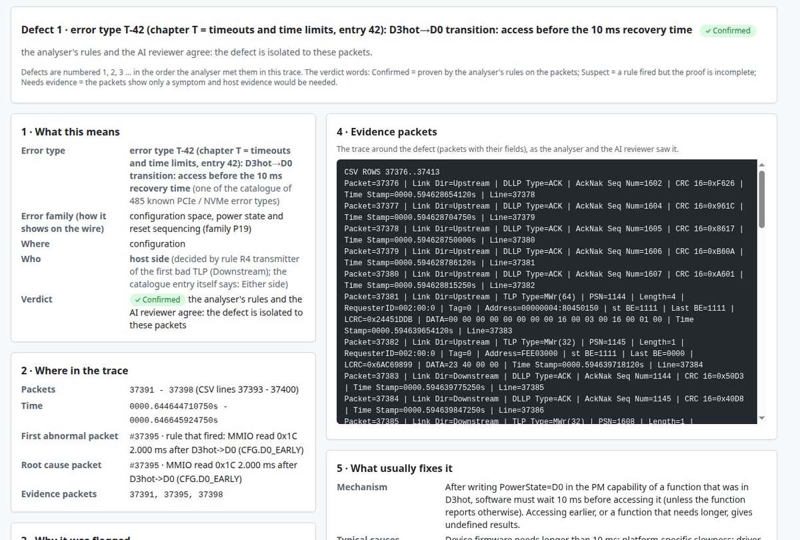
Sections 1 to 5 of the defect page.
Header and status badge
The defect and the error type written out. Then, in words, how well the defect is pinned down. For example: "the analyser's rules and the AI reviewer agree: the defect is isolated to these packets".
1 · What this means
The error type, and the error family (how it shows on the wire). Where it is (layer), and who is to blame. "Who" also names the R-rule that decided it and gives the catalogue's own hint. Last comes the verdict.
2 · Where in the trace
The packet range and the CSV line numbers (CSV: the trace saved as a text table). Use them to find the packets in the analyzer software. Then the time span, and the first wrong packet with its rule. Then the root-cause packet (where the fault really started) and the evidence packets.
3 · Why it was flagged
Each rule that fired, marked ✓ or ?. Its role: root cause, knock-on effect or separate finding. The AI reviewer's view of that rule. The detail text, the packet and the CSV line. "packets that carry it" opens the rows. Then come the proof checks. Is the capture context given (how and where the trace was recorded)? Does every claim point to a packet on the screen? Are knock-on effects kept apart? Is the first wrong packet named? Are other explanations labelled? Are the root cause and the knock-on effects cited? Is a rule named? Then comes the host evidence: is it needed, and which line proves it? Last is the AI reviewer's full second opinion. It gives its verdict and its source (fresh or cache). It gives the error type it picked and who it blames. It lists the rules it agrees and disagrees with, and the packets it cites. Then come its summary, the other explanations it thought about, and what it would still need.
4 · Evidence packets
The raw rows around the defect, field by field. They are exactly what the analyser and the AI reviewer saw.
5 · What usually fixes it
From the catalogue entry: how the fault happens, its usual causes and how it shows up. Then where the official rule book covers it, what usually fixes it, and how to prove the fix.
6 · Related error types
The error types the analyser scored, with their match scores. The other choices it kept in mind. And the error types that the packets alone cannot tell apart.
7 · Stage 2 for this defect
Seen before, the saved procedure, the AI reviewer's proposal, and the decision with its result. Then the link "open in stage 2 (reproduce and decide) →". It carries the run, so the main page opens on this defect.
8 · Earlier decisions on this error type
Every decision on this error type, from any run (section 8.6). Each shows when, who, the decision, the note and the lab outcome.
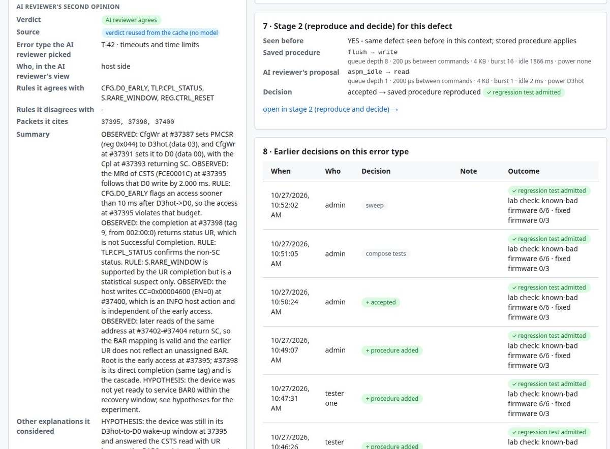
Sections 7 and 8: the stage-2 summary and the decision history.
7. Step 5 · Reproduce and decide (stage 2): the main screen
7.1 Start stage 2
The first time you open step 5 for a run, it shows a short explanation and the button Start stage 2. Stage 2 never starts by itself. It asks the AI reviewer once for each defect, and that costs time and money. The button sends POST /api/runs/<run>/stage2/start. The server then writes the marker file runs/<run>/stage2/STARTED. It also starts a "prepare" job that does the lookup for each defect in turn. So when you open a defect, its lookup is ready. The bar shows "preparing: Defect 2 (2 of 3)".
Stage2V3.present does the lookup of one defect ("present"). It works in this order. It records that the error type was seen (event incident_seen). It builds a search question from the defect. It searches the knowledge base in five ways (section 11). It decides "seen before". It records which candidates (the records it offers) were shown (event impression). This record is needed later, to judge the ranking fairly. It collects the evidence rows. Last, it builds the card with the AI reviewer's proposal (build_card in stage2/presenter.py). The result is kept in the defect's state file. So it is not worked out again until you decide something.
def present(self, inc, firmware=None, device=None):
"""device: {"name", "model_number", "serial_number", "firmware_revision", "pci", "source"} or None. The context
of a procedure is the device model + firmware (the pair the Linux NVMe driver keys its quirks on); a procedure
saved on another device or firmware is shown as "seen on another device or firmware" and is re-validated here."""
t0 = time.time()
self.counters["incidents"] += 1
fw = firmware or inc.firmware
dev_name = (device or {}).get("name") or ""
ctx_hash = context_hash(fw, dev_name) # unchanged hash when no device is known (backwards compatible)
sig, family = inc.card, inc.pattern or "?"
self.db.apply_event("incident_seen", {"sig": sig, "pattern": family, "feats": inc.tokens}, "detector")
q = query_from_incident(inc, ctx_hash)
shown, all_c = self.index.query(q)
seen, best, score = self.index.seen_before(q, shown)
self.counters[seen] += 1
self.db.apply_event("impression", {"sig": sig, "incident": inc.id, "policy": "hybrid_v3",
"shown": [{"doc_id": c["doc_id"], "pos": i + 1, "score": c["score"],
"explore": bool(c.get("explore"))} for i, c in enumerate(shown)]}, "presenter")
allowed = set(inc.evidence_packets) | {int(x) for blk in inc.rows for r in blk["rows"]
for x in [r.split("|")[0].replace("Packet=", "").strip()] if x.isdigit()}
ev_text = evidence_text(inc, max_rows=self.max_rows)
t_llm = time.time()
card = build_card(inc, q, shown, seen, best, self.graph, ev_text, allowed, self.rule_defs.get(sig, ""),
self.db.lessons(sig), llm=self.llm if self.use_llm else None, llm_rerank=self.llm_rerank,
counters=self.counters)
llm_s = time.time() - t_llm
if card.get("llm"):
self.counters["llm_assessed"] += 1
self.counters["llm_agrees"] += int(card["llm"]["agrees_with_matcher"])
return {"sig": sig, "family": family, "fw": fw, "device": device, "ctx_hash": ctx_hash, "q": q, "shown": shown, "seen": seen,
"best": best, "score": score, "allowed": allowed, "ev_text": ev_text, "card": card,
"present_s": round(time.time() - t0, 1), "llm_s": round(llm_s, 1)}
Inside build_card, the program asks the AI reviewer for a "digest" (a short summary). The digest has a headline and how the fault happens, in the AI reviewer's own words. It lists the packets that matter. It says whether it agrees with the lookup. It suggests a procedure (commands, timing, power state). It lists the differences from the saved procedure, and the risks. Then its answer is checked by code. The code removes any packet it cites that is not in the evidence, and reports it. It removes commands the bench cannot send. It reports timing values outside the lab ranges. These problems show in red as "problems in the proposal found by the analyser's checks".
stage2/presenter.py lines 170–202 · build_card()
# ---------------- LLM digest (extract only what the admin needs), verified by code
prompt = _digest_prompt(card, evidence_text, rule_def)
out, cached = llm.generate_json(prompt, DIGEST_SCHEMA, allow_tools=True) # the baseline (recommended_sequence) may use web search when enabled
counters["llm_calls"] = counters.get("llm_calls", 0) + (0 if cached else 1)
if not isinstance(out, dict) or "_error" in out:
card["llm_problems"].append("digest failed: %s" % (out or {}).get("_error"))
counters["llm_invalid"] = counters.get("llm_invalid", 0) + 1
return card
problems = []
pk = [int(p) for p in out.get("key_packets", []) if str(p).lstrip("-").isdigit()]
bad = [p for p in pk if allowed_packets and p not in allowed_packets]
if bad:
problems.append("cited packets not in evidence: %s" % bad[:5])
counters["citation_violations"] = counters.get("citation_violations", 0) + 1
rs = out.get("recommended_sequence") or {}
cmds = [str(c).lower().strip() for c in rs.get("commands", [])]
unk = [c for c in cmds if c not in ALLOWED_OPS]
if unk:
problems.append("unknown ops %s" % unk)
t = rs.get("timing") or {}
for k, (lo, hi) in TIMING_KEYS.items():
v = t.get(k)
if isinstance(v, int) and not lo <= v <= hi:
problems.append("timing %s out of range" % k)
card["llm"] = {"headline": str(out.get("headline", ""))[:300], "seen_before_assessment": out.get("seen_before_assessment"),
"agrees_with_matcher": _agrees(out.get("seen_before_assessment"), seen),
"key_packets": [p for p in pk if p not in bad], "mechanism": str(out.get("mechanism", ""))[:600],
"recommended_sequence": {"commands": [c for c in cmds if c in ALLOWED_OPS], "timing": t,
"power_state": rs.get("power_state", "none")},
"differences_vs_stored": [str(x)[:200] for x in out.get("differences_vs_stored", [])][:6],
"risks": [str(x)[:200] for x in out.get("risks", [])][:6],
"model": getattr(llm, "name", "?"), "cached": cached}
card["llm_problems"] = problems
7.2 The top of the screen
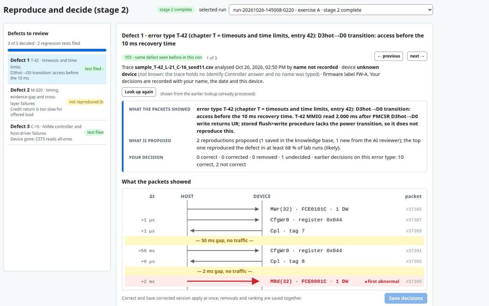
The queue (the list of defects) is on the left. The defect is on the right, with the bottom line and the packet picture.
Defects to review (left)
Every defect of the run. A line such as "3 of 3 decided · 2 regression tests filed", and a bar. Each item shows the defect, the error type, a title and a pill (a small coloured label). The pill says not looked up yet, saved procedure (one exists) or new (nothing stored). After a decision it says test filed ✓ or the outcome (for example "not reproduced"). Click an item to open it. Keys j / k = next / previous.
Title line
For example: "Defect 1 · error type T-42 (chapter T = timeouts and time limits, entry 42): D3hot→D0 transition: access before the 10 ms recovery time".
Green / yellow / blue pill
Seen before: "YES - same defect seen before in this context", "related", or "NO". Section 11.3 gives the exact rule.
"1 of 3", ← previous, next →
Where you are in the queue.
Grey line "Trace … analysed … by … · device … · firmware label …"
The run's extra details (Services.run_meta). They are the trace file, the start time and the operator (the person who ran it). Then the device name and where it came from. Then the serial number and the firmware version, if the trace holds them. The line ends: "Your decisions are recorded with your name, the date and this device."
Look up again
Really does the lookup again, and asks the AI reviewer for a new proposal (POST …/present?force=1). It does not reuse the stored lookup. This helps after other people have decided on the same error type. The note "shown from the earlier lookup (already processed)" means you are seeing the stored lookup.
7.3 The bottom line (three rows in a box)
What the packets showed
The error type written out. Then the AI reviewer's headline, or the detail of the first wrong packet.
What is proposed
How many procedures are offered. How many come from the knowledge base, and how many from the AI reviewer. How often the top one made the defect happen again.
Your decision
A live count, such as "0 correct · 0 corrected · 0 removed · 1 undecided". Then all earlier decisions on this error type ("10 correct, 2 not correct").
7.4 What the packets showed (the picture)
A drawing of the packets going back and forth. HOST is on the left, DEVICE on the right, and time runs down the page. Each arrow is one packet. Left to right = host to device (Downstream). Right to left = device to host (Upstream). The left column Δt is the time since the row before ("+2 ms"). A pause of 1 ms or more is drawn as a yellow band "— 2 ms gap, no traffic —". The first wrong packet is shaded red, with "◂ first abnormal". Evidence packets are blue. Link-layer acknowledgements (small "got it" replies) are grey. The right column is the packet number. At first, the drawing shows the 12 key packets around the first wrong one. "Show the full exchange (38 packets)" draws them all. Here is what you read in the T-42 example. The host writes the power register (CfgWr0 0x044) twice, 50 ms apart. Then, 2 ms after the second write (which sets D0, full power), it reads the drive register at FCE0001C. That read is the first wrong packet: the official rule book says to wait 10 ms. Code: flowGraph() in decision.js. It only draws; it sends nothing.
7.5 Proposed reproductions: the cards
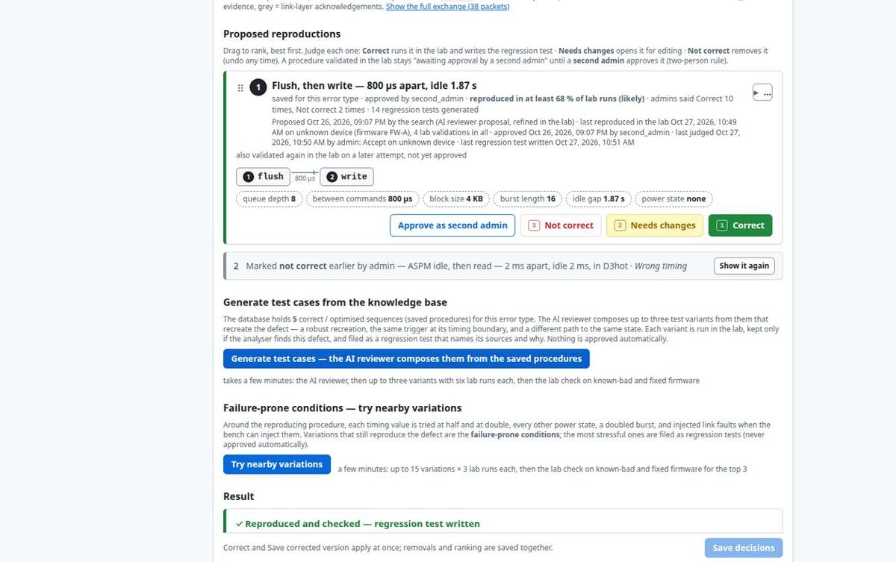
One card for each proposed procedure, best first, with the three verdict buttons.
The list comes from GET …/solutions (solutions in stage2_api.py). It has four groups. First come the procedures approved for this error type. Next come the ones that passed in the lab but are not approved yet. Then come approved procedures of other error types of the same family, at most 5. The AI reviewer's fresh proposal always comes last. Inside each group, the order is set first by how often it made the defect happen again. Then comes the admin rating, then the number of tests. Procedures that are the same (same commands, timing and power state) are folded into one card. That card gets a note, such as "also validated again in the lab on a later attempt, not yet approved".
What each part of a card means
⋮⋮ and the number
The drag handle and the rank. Drag it to change the order. Or put the keyboard focus on the handle and use the arrow keys.
Title "Flush, then write — 800 µs apart, idle 1.87 s"
The procedure in words: the commands in order, the time between them, and the idle gap. It also gives the power state, unless it is none.
Grey line under the title
Where it comes from. It may say "saved for this error type". It may say "Validated in the lab, awaiting approval by a second admin". Or it may say "Proposed now by the AI reviewer from these packets; not run yet". Then who approved it, and reproduced in at least 68 % of lab runs (likely). Then how often admins said Correct / Not correct, and how many regression tests it produced.
Second grey line (dates)
Its history from the event log (Stage2Service.solution_summary). When it was proposed, by whom and how ("by the search (AI reviewer proposal, refined in the lab)"). On which device, and for which defect of which run. When the lab last made the defect happen with it, on which device and firmware. How many times it passed in the lab. When it was approved, and by whom. When it was last judged, by whom, and with what decision. On how many devices it was seen. When the last regression test was written.
The chips ① flush → ② write
The commands in order. The arrow between two chips shows the time between them.
Dashed chips
The five timing values and the power state: queue depth, between commands, block size, burst length, idle gap, power state.
Yellow callout "An admin rejected it once with the note …"
The last decision on it was negative (an admin said no).
The buttons on a card
Button
What happens on the screen
What is sent and written
① Correct (key 1)
The card's buttons are switched off. "working… 22 s — searching on the simulated device, then the lab check …" appears. Then the Result section shows (7.8).
First, any unsaved removals and ranking are saved. Then the action accept is sent, with the card as the target. It writes the event admin_action and gives credit +1 (events verdict and, for a saved procedure, proc_credit with r = 1). Then the lab job of section 9 runs. The AI reviewer's proposal is not stored yet. For it, the cause is accepted and the search starts from the proposal.
② Needs changes (key 2)
Opens the editor inside the card. "Stored" (you can only read it) is above "Your version". Click a command chip to remove it. Choose a command and press "+ add" to add it at the end. You can change any timing value or the power state. Changed values get a green outline and are counted ("1 change"). Discard my edits closes it. Save corrected version refuses when nothing changed.
Sends the action add_procedure with your version. The program cleans it first. It removes commands the bench cannot send, and pulls values back inside the lab ranges. It stores it as "proposed", with you as the author (event solution_propose, producer "admin:<your name>"). Then it is run in the lab first: 6 runs. If it makes the defect happen in at least 3 of 6, it is kept as yours (status validated in the lab). It goes on to the lab check and a test only in one case. Its safe lower estimate (a careful low guess) must be at least 50 %. With 6 runs, that means 6 of 6 (see 15.4). If it works in fewer than 3, it is recorded as a failed check and a lesson is written. Then the search starts from your version. The old procedure gets no credit.
③ Not correct (key 3)
The card shrinks to a grey "Removed" line with Undo. It shows three reason chips: Wrong timing, Wrong command order, and Does not match the packets. It also shows a box for your own words. For an approved procedure it also shows "also retire it from the knowledge base (needs a second admin)". Nothing is sent yet.
It is sent when you press Save decisions (or Correct on another card). The action reject goes with your reason. That writes the event proc_credit r = 0 on that procedure only. The AI proposal is not stored. So for it, a lesson "NOT CORRECT: the AI reviewer's new proposal (…) — reason" is written instead. The next proposal must read it. If "retire" is ticked, the screen asks for the second admin's name. That person must not be you. With a name, it also sends deprecate. With no name, nothing is retired, but the rejection is still recorded.
Approve as second admin
Shown on procedures "awaiting approval by a second admin". It asks for the second admin's name.
Sends the action promote with approver = that name → event solution_approve. The database accepts it only in one case. The procedure must have passed in the lab, and the approver must not be its producer (who made it). Then the procedure approved before for the same cause becomes "replaced by a newer version".
… menu
Move to top / up / down / to bottom. Why is this proposed? tells where it comes from and what Correct will do. All details opens section 8.
Moving changes the order only on the screen, until Save decisions.
"Marked not correct earlier by … · Show it again"
The screen folds away an AI proposal that an admin already rejected.
Nothing is sent.
Footer: Save decisions
Shows "1 removal and a new ranking not yet saved". It is switched off when there is nothing to save.
Sends every removal (reject, and deprecate when retire was ticked and a second admin was named). You may have moved two or more saved procedures. Then it also sends rerank with your order (event proc_rank, section 10.3). "Correct" and "Save corrected version" act at once.
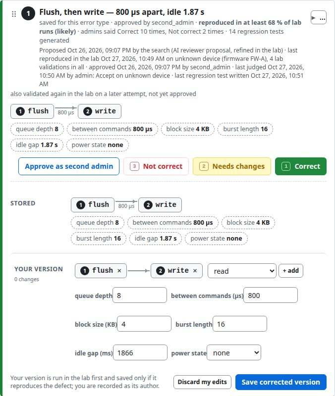
"Needs changes": the stored procedure above, your version below.
This browser code turns the three buttons into actions:
app/static/js/decision.js lines 317–328 · JavaScript in the browser
function verdict(card, sol, v) {
if (v === "approve") {
const who = prompt("Name of the second admin who approves this procedure (must differ from the requester):", "");
if (!who || !who.trim()) return;
card.querySelectorAll("button").forEach(b => b.disabled = true);
act("promote", sol, { approver: who.trim() }); return;
}
if (v === "wrong") { pend.removed.set(sol.id, { note: "", retire: false }); draw(); toast("removed — undo on the card, or Save decisions to record it", 5000); return; }
if (v === "correct") {
card.querySelectorAll("button").forEach(b => b.disabled = true); live.correct++; summary();
commitPending().then(() => act("accept", sol, {})); return;
}
app/static/js/review.js lines 187–207 · JavaScript in the browser
act: async (kind, sol, x) => {
const q = { quiet: !!x.quiet };
if (kind === "rerank") { const ids = x.order.filter(i => i.startsWith("sol::")); if (ids.length < 2) return; R.ranking = ids; return doAction("rerank", null, null, null, ids, q); }
if (kind === "promote") { $("a-approver").value = x.approver || ""; return doAction("promote", null, null, null, [sol.id]); }
if (kind === "sweep") { $("r-busy").hidden = false; $("r-busy").textContent = "trying nearby variations of the reproducing procedure (timing, power states, bursts, injected link faults where the bench supports them) to find other failure-prone conditions; the failure-prone ones are filed as regression tests…";
return doAction("sweep", null, null, null, []); }
if (kind === "restart") { const t = (sol && sol.id.startsWith("sol::")) ? sol.id : sols.cause_target; $("r-busy").hidden = false; $("r-busy").textContent = "failed attempt recorded (−1); the search restarts with a different random seed…";
return doAction("restart_failed", null, (x && x.note) || "no reproduction within the limits", null, t ? [t] : []); }
if (kind === "compose") { $("r-busy").hidden = false; $("r-busy").textContent = "the AI reviewer is composing test variants from the saved procedures; each is run in the lab and the ones that reproduce the defect are filed…";
return doAction("compose_tests", null, null, null, []); }
const target = targetOf(sol);
if (kind === "accept") { $("r-busy").hidden = false; $("r-busy").textContent = "accepted: running it in the lab, checking it on known-bad and fixed firmware, writing the regression test…";
return target ? doAction("accept", null, null, null, [target]) : doAction("add_cause", null, null, { text: sols.llm_headline || "cause from stage-1 evidence" }, []); }
if (kind === "procedure") { $("r-busy").hidden = false; $("r-busy").textContent = "validating your version: it is run first in the lab, checked on known-bad and fixed firmware, then saved…";
return doAction("add_procedure", x.scenario, null, null, target && target.startsWith("cause::") ? [target] : []); }
if (kind === "reject") {
if (!sol.id.startsWith("sol::")) return doAction("lesson", null, `NOT CORRECT: the AI reviewer's new proposal (${decision.titleOf(sol)}) — ${x.note || "no reason given"}`, null, sols.cause_target ? [sols.cause_target] : [], q);
await doAction("reject", null, x.note || "not correct", null, [sol.id], q);
if (x.retire && sol.id.startsWith("sol::")) {
const who = prompt("Retiring a procedure needs a second admin. Name of the second admin (must differ from you):", "");
if (who && who.trim()) { $("a-approver").value = who.trim(); await doAction("deprecate", null, x.note || "retired by admin", null, [sol.id], q); }
On the server, act first checks the order of the steps: stage 1 must be finished and stage 2 started. Then it hands over to Stage2Service.act. That function stamps the extra details on the decision. Then it does one of two things. It applies the decision at once. Or, for the seven lab actions, it starts a job in the background:
app/api/stage2_api.py lines 290–299 · act()
@bp.post("/api/runs/<run_id>/incidents/<inc_id>/act")
def act(run_id, inc_id):
s = svc()
j, err = _gate(s, run_id)
if err:
return err
action = request.get_json(force=True) or {}
out, jid = s.s2.act(run_id, s.run_dir_of(run_id), inc_id, action, s.firmware_of(j), meta=s.run_meta(j))
code = 400 if (isinstance(out, dict) and out.get("error")) else 200
return jsonify({"result": out, "job": jid}), code
def act(self, run_id, run_dir, inc_id, action, firmware, meta=None):
if action.get("action") not in ACTIONS:
return {"error": "unknown action %s" % action.get("action")}, None
key = (run_id, inc_id)
self._ctx(run_id, run_dir, inc_id, firmware, meta)
action.setdefault("sig", self.ctx[key]["sig"])
action.setdefault("requester", (meta or {}).get("operator") or "admin")
emeta = self._event_meta(meta, inc_id, operator=action.get("requester"))
action["incident"], action["run"] = inc_id, run_id # recorded in the admin_action event
st_ = self.state(run_dir, inc_id) # Negative Ack restart: the n-th attempt uses another random stream
action.setdefault("attempt", sum(1 for r in st_.get("results", []) if r.get("status") in ("budget_exhausted", "triage_timeout", "admin_procedure_failed", "not_reproduced")))
inc = self.load(run_id, run_dir, firmware)[inc_id]
if action["action"] in SEARCH_ACTIONS:
jid = self.jobs.submit("stage2", {"run_id": run_id, "run_dir": run_dir, "incident": inc_id, "action": action, "meta": emeta},
lambda jid, params, mgr: self._execute_job(jid, params, mgr, inc, firmware))
return {"job": jid, "queued": True}, jid
with self.lock:
self.db.event_meta = emeta
try:
out = self.s2.execute(inc, self.ctx[key], action)
self.db.commit() # every decision is durable when the answer reaches the screen
finally:
self.db.event_meta = None
self._record(run_dir, inc_id, out)
return out, None
7.6 Generate test cases from the knowledge base
Text on the screen: "The database holds 5 correct / optimised sequences (saved procedures) for this error type. The AI reviewer composes up to three test variants from them that recreate the defect — a robust recreation, the same trigger at its timing boundary, and a different path to the same state. Each variant is run in the lab, kept only if the analyser finds this defect, and filed as a regression test that names its sources and why. Nothing is approved automatically."
Why it matters: one way of making the defect happen gives one test. But a defect usually has more than one way in. Some tests only play back the exact sequence seen in real use. Such a test can pass a fix that covers only that one path. Composing (building new tests from parts that worked) turns the knowledge already earned into a small family of tests. That knowledge is the procedures that worked. It costs no extra search.
What happens (action compose_tests, Stage2V3._compose): the program collects the saved procedures of this error type, and of its family, as sources. The AI reviewer gets them, with the evidence and the lessons. It must send back up to three variants. Each variant has a name, a reason, the packets it expects, and the sources it used. Code cleans each variant. Each one runs 6 times. If none makes the defect happen, the search starts from the best one. Each variant that works goes through the lab check. It is then filed as a test. The test's list of contents (its manifest) names its sources, the model that composed it, and why. Filed variants are "awaiting approval by a second admin". The button is switched off when nothing is saved for this error type. The result lists each variant with its lab numbers and test script.
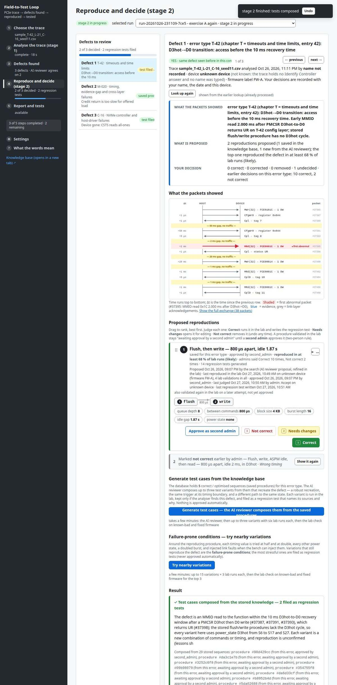
Result of "Generate test cases": each composed variant, its lab numbers and its test script.
Text on the screen: "Around the reproducing procedure, each timing value is tried at half and at double, every other power state, a doubled burst, and injected link faults when the bench can inject them. Variations that still reproduce the defect are the failure-prone conditions; the most stressful ones are filed as regression tests (never approved automatically)."
Why it matters: the project statement asks for "proactive vulnerability analysis" of the "surrounding failure-prone areas". That means looking ahead for weak spots near the fault. A firmware fix may only move the edge a little. Then it would pass the first test but fail a close neighbour. These variations map how wide the failing area is.
What happens (action sweep, Stage2V3._sweep and stage2/sweep.py): the program starts from the best saved procedure. It builds up to 15 variations, and each one changes one thing. It tries each of the five timing values at ×0.5 and ×2, inside the lab ranges. It adds an idle gap of 500 ms if there was none. It tries each other power state. It repeats the last command. With a hardware jammer (a box that disturbs the link on purpose), it adds three link faults. Each variation runs 3 times. If the defect shows in at least 2 of 3 runs, the variation is failure-prone. They are put in order by how many runs showed the defect. Ties go to the one that pushes the value furthest (stress_of). That is how many times bigger the changed value is. A power-state change or a jammer fault counts as 2. A longer list of commands counts as 1.5. The top 3 go through the lab check and are filed. The result table has the columns Variation, Reproduced (lab runs), Failure-prone, How far it was pushed, and Regression test filed.
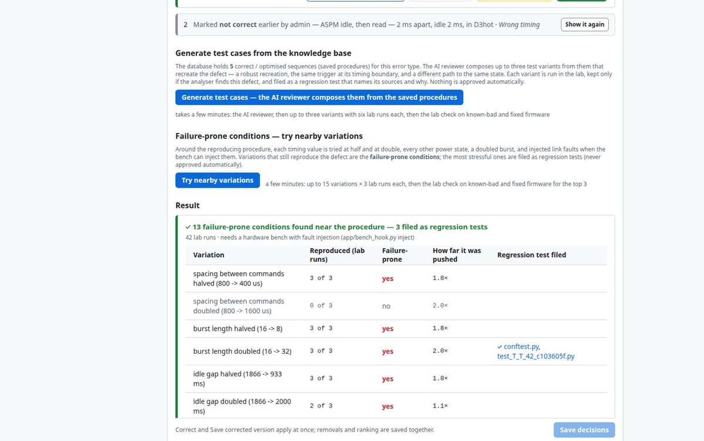
"13 failure-prone conditions found near the procedure — 3 filed as regression tests".stage2/sweep.py lines 10–38 · neighbourhood()
def neighbourhood(base):
"""Variants around `base`: each timing parameter x0.5 and x2 (clamped to the lab ranges), every other power state,
the last command doubled (burst), and a long idle when the base has none. Each variant = one named change.
`variation` is the short key used for matching (unchanged); `name` is the plain label the operator reads."""
out = []
t = base["timing"]
for k, (lo, hi) in TIMING_RANGES.items():
cur = int(t.get(k, lo))
word, unit = PARAM_WORDS.get(k, (k, ""))
for f, lbl, verb in ((0.5, "x0.5", "halved"), (2.0, "x2", "doubled")):
nv = int(min(hi, max(lo, round(cur * f))))
if nv != cur:
nt = dict(t)
nt[k] = nv
out.append({"name": "%s %s (%d -> %d%s)" % (word, verb, cur, nv, unit), "variation": "%s %s" % (k, lbl),
"scenario": {"commands": [dict(c) for c in base["commands"]], "timing": nt, "power_state": base.get("power_state", "none")}})
if not t.get("idle_gap_ms"):
nt = dict(t)
nt["idle_gap_ms"] = 500
out.append({"name": "idle gap added (0 -> 500 ms)", "variation": "idle 500 ms", "scenario": {"commands": [dict(c) for c in base["commands"]], "timing": nt, "power_state": base.get("power_state", "none")}})
for p in POWER_STATES:
if p != base.get("power_state", "none"):
out.append({"name": "power state %s before the sequence" % POWER_WORDS.get(p, p), "variation": "power %s" % p,
"scenario": {"commands": [dict(c) for c in base["commands"]], "timing": dict(t), "power_state": p}})
if base["commands"]:
cmds = [dict(c) for c in base["commands"]] + [dict(base["commands"][-1])]
out.append({"name": "last command repeated (longer burst)", "variation": "burst +1 cmd",
"scenario": {"commands": cmds, "timing": dict(t), "power_state": base.get("power_state", "none")}})
return out
stage2/sweep.py lines 41–57 · stress_of()
def stress_of(base, variant):
"""How far the variant pushes beyond the base (larger = more stressful): ratio of the changed timing value, 2 for a
power-state change, 1.5 for a longer command list, 2 for a jammer fault."""
if variant.get("jammer"):
return 2.0
bt, vt = base["timing"], variant["scenario"]["timing"]
for k in bt:
if vt.get(k) != bt.get(k):
if not bt.get(k):
return 2.0
r = vt[k] / float(bt[k])
return r if r >= 1 else 1.0 / max(r, 1e-6) * 0.9
if variant["scenario"].get("power_state") != base.get("power_state"):
return 2.0
if len(variant["scenario"]["commands"]) != len(base["commands"]):
return 1.5
return 1.0
7.8 The Result section
After a lab job ends, the Result section shows these rows (code renderResult in decision.js):
Headline
✓ "Reproduced and checked — regression test written", or ! "Reproduced, but the lab check … did not pass it, so no test was filed", or ✕ "Not reproduced within the limits".
"Your version reproduced …" / "Your version did not reproduce … the lab searched from it"
Shown only after Needs changes.
Procedure title and chips
The procedure that was used in the end (after the search and the shortening).
"6 lab runs · reproduced in at least 61 % of runs (likely) · the analyser found the same defect in 6 of 6 lab runs on known-bad firmware and in 0 of 3 on fixed firmware · 28 s"
How many lab runs the search used. The safe lower estimate. The lab check. The total time in seconds.
How the search went
The procedures tried. The different shapes kept as stepping stones. The fresh proposals asked from the AI reviewer when the search was stuck. And which kinds of change brought the trace closer to the failure signature (the packet pattern of the fault). For example: "change the spacing between commands (4)".
Most stressful conditions
"the defect still appears with queue depth ×4, spacing ×2, … (30 lab runs) → filed as a second regression test guarding this margin". It comes with the chips of that procedure and its test script.
Score per lab run
"1.00 · 1.00 · 1.00 · … → 6 in a row above 0.9: optimal (rule met)". Each lab run's score is the checks passed, divided by 3. The three checks are: same error type, same first rule, Confirmed.
Record the failed attempt (−1) and restart the search
Shown only when nothing made the defect happen. It sends the action restart_failed. The failure counts against the procedure (and the cause), and a lesson is written. The next attempt uses a different random seed (a new starting number for the random choices).
Test script links
They open the files that were made.
8. Step 5 · "All details": every one of the 26 decisions
The main screen covers the everyday decisions. Everything else is behind All details (the AI reviewer's explanation, candidates, every admin action, history, editor) at the bottom. It has three tabs: Candidates & actions, Stage 1 evidence, Result.
8.1 Saved procedure next to the AI reviewer's proposal
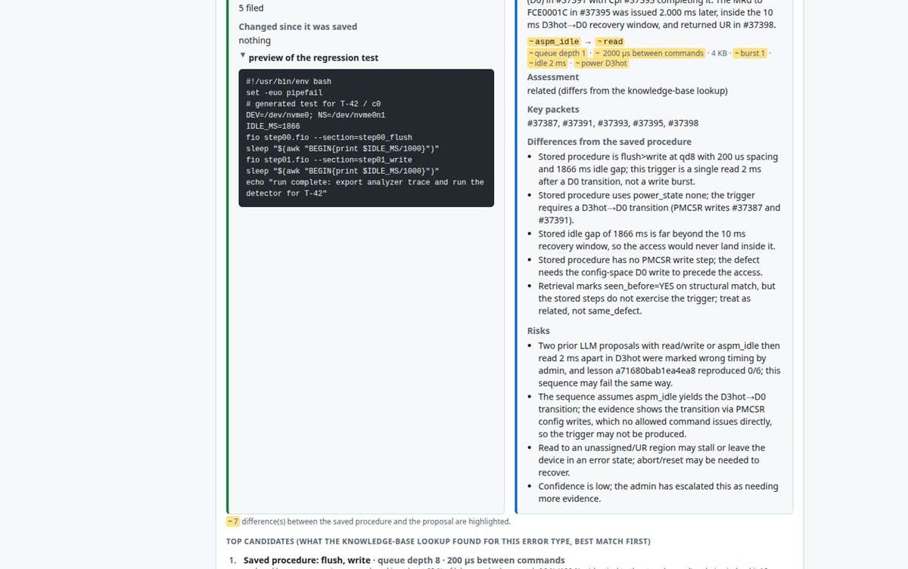
Left (green): what the knowledge base holds. Right (blue): what the AI reviewer proposes now. Yellow marks the values that differ.
Yellow box "Earlier negative decision on this error type"
The latest negative decision on this error type, with who, when and the note. It warns you that the saved procedure may be the one that was rejected.
Left: Saved procedure (from the knowledge base)
Its status, such as "approved by second_admin" or "replaced by a newer version". Then "reproduced in at least 68 % of lab runs (likely)". Then "admin feedback rating 0.73 from 9 decisions (1 = always judged correct)" (section 10.1). Then the procedure, and "Regression tests: 5 filed". Then "Changed since it was saved: nothing". This lists the fields of this defect that differ from the defect the procedure was saved for. Last, "preview of the regression test": the shell commands a bench would run.
Right: Proposed now by the AI reviewer
The model, and whether this is a fresh call. The headline, how the fault happens, and the proposed procedure. Assessment, for example "related (differs from the knowledge-base lookup)". This is the AI reviewer's own view of "seen before", next to the lookup's view. Then Key packets, Differences from the saved procedure and Risks. These are lists in the AI reviewer's own words.
"7 difference(s) between the saved procedure and the proposal are highlighted"
The count of commands, timing values and power state that differ.
8.2 Top candidates
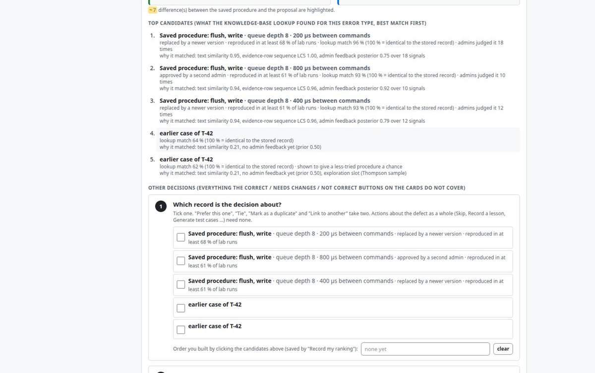
The five candidates of the lookup, then step 1 of "Other decisions".
These are the five best records of the knowledge-base lookup (section 11), best first. Each line first shows what it is. For example: "Saved procedure: flush, write · queue depth 8 · 200 µs between commands". Or "earlier case of T-42": an earlier defect of this error type that an admin judged. Then come its status and "reproduced in at least 61 % of lab runs". Then lookup match 96 % (100 % = identical to the stored record) and "admins judged it 18 times". Last comes "why it matched", with up to three reasons. text similarity is how many three-letter pieces the two texts share (the trigram measure, 1 = same text). evidence-row sequence LCS is the share of the list of packet kinds that comes in the same order (1 = same). admin feedback posterior 0.75 over 18 signals is the rating of section 10.1. The fifth line may say "shown to give a less-tried procedure a chance". That is the place kept for trying new things (11.2). Click the candidates in your order to build a ranking for "Record my ranking".
8.3 Other decisions: three steps
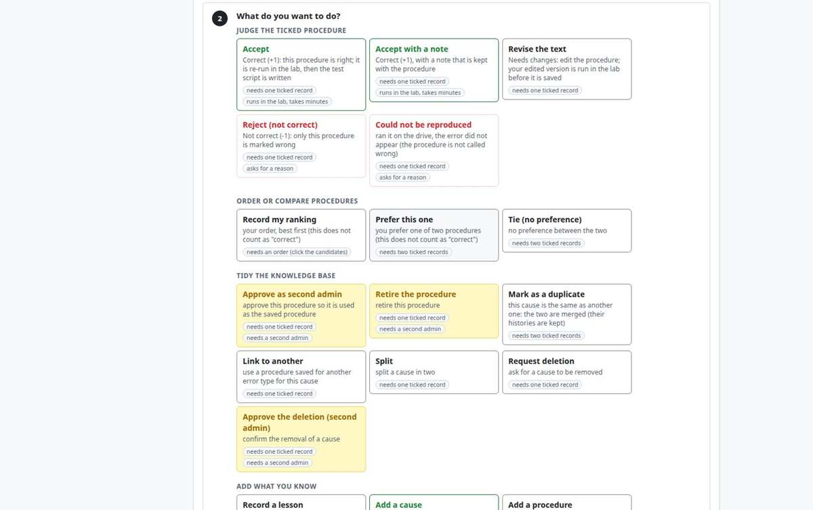
Step 2: each decision is a tile that says what it does and what it needs.
Which record is the decision about? Tick one record. Tick two for Prefer, Tie and Mark as a duplicate. Decisions about the defect as a whole need none (Skip, Record a lesson, Generate test cases …).
What do you want to do? Click a tile. Small tags on the tile say what it needs. A tag can say "needs one ticked record" or "needs two ticked records". It can say "needs an order (click the candidates)" or "asks for a reason". It can say "needs a second admin" or "asks which decision". The tag "runs in the lab, takes minutes" warns you that it takes time. Green tiles add credit. Red tiles take it away. Yellow tiles need two people. The tile Add a procedure does not go to step 4. It opens the editor of section 8.5.
Confirm. This step shows the decision, what it means and what happens next. It shows only the fields that this decision needs. These can be the reason, a note and your name (filled in for you). They can also be the second admin's name, the event number to undo, or the text of your change. Record this decision stays switched off until everything needed is filled in ("Before recording: say why"). The second admin must be a different person from you. The second admin's name is sent only with Approve as second admin, Retire the procedure, and Approve the deletion. After that one decision, the name box is emptied. So a name counts for one decision only.
app/static/js/review.js lines 28–33 · JavaScript in the browser
const NEED = { one: ["accept", "accept_with_note", "revise", "reject", "not_reproducible", "promote", "deprecate", "delete_request", "delete_approve", "split", "link", "restart_failed"],
two: ["prefer", "tie", "duplicate_of"], ranking: ["rerank"], reason: ["reject", "not_reproducible", "wrong_signature"],
approver: ["promote", "deprecate", "delete_approve"], event: ["undo"], content: ["revise", "add_cause", "split"],
minutes: ["accept", "accept_with_note", "add_cause", "add_procedure", "compose_tests", "sweep", "restart_failed"] };
const TAGS = [["one", "needs one ticked record"], ["two", "needs two ticked records"], ["ranking", "needs an order (click the candidates)"], ["reason", "asks for a reason"], ["approver", "needs a second admin"], ["event", "asks which decision"], ["minutes", "runs in the lab, takes minutes"]];
const tagsOf = (a) => TAGS.filter(([k]) => NEED[k].includes(a)).map(([, t]) => t);
app/static/js/review.js lines 255–266 · JavaScript in the browser
function missing(name) {
const t = ticked(), out = [];
if (NEED.one.includes(name) && t.length < 1) out.push("tick the record this is about (step 1)");
if (NEED.two.includes(name) && t.length < 2) out.push("tick the two records to compare (step 1)");
if (NEED.ranking.includes(name) && R.ranking.length < 2) out.push("click at least two candidates above, in your order");
if (NEED.reason.includes(name) && !$("a-reason").value.trim()) out.push("say why");
if (NEED.approver.includes(name) && !$("a-approver").value.trim()) out.push("name the second admin");
if (NEED.approver.includes(name) && $("a-approver").value.trim() && $("a-approver").value.trim() === $("a-requester").value.trim()) out.push("the second admin must be a different person from you");
if (NEED.event.includes(name) && !$("a-event").value) out.push("give the number of the decision to undo");
return out;
}
function refreshStep3() { if (!R.pending) return; const m = missing(R.pending); $("a-check").textContent = m.length ? "Before recording: " + m.join("; ") : ""; $("a-go").disabled = m.length > 0; }
8.4 The 26 decisions, and exactly what each one writes
Every decision first writes one admin_action event. It holds the decision, the targets, your note and the second admin. It also holds the list of candidates that were shown, and the extra details. Then apply in stage2/admin_actions.py writes the basic events below. "a" and "b" are the success and failure counters of section 10.1. "cause" is the error type's stored explanation. "procedure" is the stored recipe.
Tile on the screen
Internal name
Needs
Events written (after admin_action)
Numbers that change
Lab job?
Judge the ticked procedure
Accept (= Correct on a card)
accept
1 record
cause: verdict correct + lab true · procedure: proc_credit r = 1 and verdict correct
cause a + 1, n + 1, ta + 1. Procedure link and node a + 1. The earlier counts of every cause of this error type shrink by 2 %, so older decisions slowly count for less.
yes
Accept with a note
accept_with_note
1 record, note
the same as Accept, plus lesson "ADMIN NOTE on accept: …"
the same as Accept
yes
Revise the text
revise
1 record, text
cause: node_edit (new version) · procedure: proc_edge_edit
No credit. The old counts shrink toward neutral (×0.7), because the content changed.
no: nothing runs in the lab. To change the steps and run them, use Needs changes or the editor.
Reject (not correct) (= Not correct on a card)
reject
1 record, reason
cause: verdict not · procedure: proc_credit r = 0
b + 1 on the rejected item only. Nothing else is blamed.
no
Could not be reproduced
not_reproducible
1 record, reason
cause: verdict lab false · procedure: proc_credit r = 0 + lesson "NOT REPRODUCIBLE by admin in FW-A: …"
cause: only the lab counter tb + 1 (the cause is not called wrong). Procedure link b + 1.
no
Order or compare procedures
Record my ranking
rerank
an order of 2 or more
ranking (causes), proc_rank (procedures), or both
The ranking scores "pl" move (Plackett–Luce: a way to score from your order). a and b never change ("this does not count as correct").
no
Prefer this one
prefer
2 records, the one you prefer first
the same as Record my ranking, with two items
pl only
no
Tie (no preference)
tie
2 records
none
none
no
Tidy the knowledge base
Approve as second admin
promote
1 procedure, second admin
solution_approve
Status → approved. This works only if it passed in the lab, and the second admin is not the one who made it. The earlier approved one → replaced. Node a + 1.
no
Retire the procedure
deprecate
1 procedure, second admin
solution_deprecate
Status → retired, only if the second admin is not the person who asked. Node b + 1.
no
Mark as a duplicate
duplicate_of
2 causes: the one to drop, then the one to keep
merge
The counts of the dropped cause are added to the kept one. Its procedures move over to the kept one. Both histories stay.
no
Link to another
link
1 procedure of another error type
solution_propose (a copy under this cause)
A new procedure, status proposed. It is run when someone accepts it.
no
Split
split
1 cause, text of both parts
node_create + node_edit
a new cause next to the old one
no
Request deletion
delete_request
1 cause
delete_request
Nothing yet: it waits for a second admin.
no
Approve the deletion (second admin)
delete_approve
1 cause, and a waiting request from someone else
soft_delete
The cause is hidden (status deleted). It is refused if you made the request yourself.
no
Add what you know
Record a lesson
lesson
note
lesson "ADMIN NOTE: …"
None. The next question to the AI reviewer about this error type includes it.
no
Add a cause
add_cause
text
node_create + verdict (new cause chosen, ticked one rejected)
new cause a + 1; the ticked cause, if any, b + 1
yes (search)
Add a procedure (= Save corrected version, or the editor)
add_procedure
your procedure (the tile opens the editor)
solution_propose (producer "admin:<you>")
A new procedure, proposed. Its status follows the lab result.
yes (yours runs first)
Needs more evidence
escalate
note
lesson "ESCALATED: needs more evidence …"
none
no
Dispute the stage-1 finding
wrong_signature
reason
lesson "SIGNATURE DISPUTED …" + signature_dispute
None on causes. A record for the analysis team.
no
Run more in the lab
Generate test cases
compose_tests
saved procedures exist
later, for each variant: solution_propose, solution_validate, script_gate
New procedures awaiting approval. No credit.
yes
Try nearby variations
sweep
a procedure that makes the defect happen
later: the same, for each filed variation
the same as above
yes
Restart the search after a failed attempt
restart_failed
1 record (after a failed search)
cause: verdict not + verdict lab false · procedure: proc_credit r = 0 · lesson "FAILED TRIAL …"
cause b + 1 and tb + 1; procedure b + 1
yes, with the next random seed
Put it aside
Skip
skip
—
none
None. Not deciding sends no signal.
no
Defer (keep in the queue)
defer
—
none
none
no
Undo a decision
undo
the event number (shown after # in the decision history)
undo
The event is marked undone. Every table is rebuilt without it.
no
The program checks the two-person rule before it writes anything:
stage2/admin_actions.py lines 80–95 · apply()
name = action.get("action")
sig = action.get("sig")
who = action.get("requester", "admin")
appr = action.get("approver")
targets = action.get("targets") or []
note = (action.get("note") or "")[:400]
ev, fx = [], []
log = lambda k, p, a=who: ev.append(db.apply_event(k, p, a))
if name not in ALL:
return {"events": [], "effects": [], "error": "unknown action %s" % name}
if name in TWO_PERSON and (not appr or appr == who):
return {"events": [], "effects": [], "error": "%s needs a second admin (approver != requester)" % name}
# impression record (for counterfactual evaluation of the ranker; position + policy are logged by the presenter)
log("admin_action", {"action": name, "sig": sig, "targets": targets, "ranking": action.get("ranking"),
"note": note, "approver": appr, "evidence_refs": action.get("evidence_refs", []),
"shown": shown_ids or [], "incident": action.get("incident"), "run": action.get("run")})
Here are the parts of the code for Accept and Reject. They show how a decision turns into events:
stage2/admin_actions.py lines 135–180 · apply()
# ---------------- verdicts on candidates
if name in ("accept", "accept_with_note"):
for t in targets:
p = parse_target(t)
if p[0] == "cause":
log("verdict", {"sig": p[1], "verdict": "correct", "chosen": p[2], "tokens": tokens or [], "firmware": firmware,
"lab_result": True})
fx.append("marked correct (+1)")
elif p[0] == "solution":
sol = _solution(db, p[1])
if sol:
e_id = graph.edge_id("REPRODUCED_BY", db.nid(sol["sig"], sol["cause"]), "scn::" + p[1])
log("proc_credit", {"edge_id": e_id, "node_id": "scn::" + p[1], "r": 1.0})
log("verdict", {"sig": sol["sig"], "verdict": "correct", "chosen": sol["cause"], "tokens": tokens or [],
"firmware": firmware, "lab_result": True})
fx.append("marked correct (+1)")
if name == "accept_with_note" and note:
log("lesson", {"sig": sig, "cause": p[2] if p[0] == "cause" else None, "vhash": p[1] if p[0] == "solution" else None,
"text": "ADMIN NOTE on accept: " + note, "producer": who})
return {"events": ev, "effects": fx, "error": None}
if name == "revise":
for t in targets:
p = parse_target(t)
if p[0] == "cause":
log("node_edit", {"sig": p[1], "node_id": p[2], "content": action.get("content", {})})
fx.append("revised: the stored text was changed; nothing was run in the lab; the earlier counts were reduced")
elif p[0] == "solution":
sol = _solution(db, p[1])
if sol:
e_id = graph.edge_id("REPRODUCED_BY", db.nid(sol["sig"], sol["cause"]), "scn::" + p[1])
log("proc_edge_edit", {"edge_id": e_id, "props": {"admin_revision": action.get("content", {}), "note": note}})
fx.append("revised: the stored text was changed; nothing was run in the lab; the earlier counts were reduced")
return {"events": ev, "effects": fx, "error": None}
if name == "reject":
for t in targets:
p = parse_target(t)
if p[0] == "cause":
log("verdict", {"sig": p[1], "verdict": "not", "rejected": p[2], "tokens": tokens or [], "firmware": firmware})
fx.append("marked not correct (-1)")
elif p[0] == "solution":
sol = _solution(db, p[1])
if sol:
e_id = graph.edge_id("REPRODUCED_BY", db.nid(sol["sig"], sol["cause"]), "scn::" + p[1])
log("proc_credit", {"edge_id": e_id, "node_id": "scn::" + p[1], "r": 0.0})
fx.append("marked not correct (-1)")
return {"events": ev, "effects": fx, "error": None}
Keyboard: a = accept the ticked record, r = reject it, j / k = next / previous defect.
8.5 Edit the procedure yourself
The editor at the bottom of the tab does the same as "Needs changes" on a card, with more room. The tile Add a procedure opens it too. Original (read-only) is on the left, and Your version on the right. "Steps (click to remove)" lists your steps. "Add step" offers the 12 commands the bench can send. They are read, write, flush, trim and write zeroes. Then controller reset, power cycle and ASPM idle (a quiet time that lets the link save power). Then Identify, Get Log Page, Set Features and Abort. Next come the five timing values and their allowed ranges. Queue depth is 1–256, and µs between commands is 1–5000. Block size is 4–1024 KB, burst length 1–128, and idle gap 0–2000 ms. Last is the power state (none, L1, L1.2, D3hot, APST). "start from the saved procedure" and "start from the AI reviewer's proposal" fill it in. "Preview as it will be saved" shows the result and the number of changes. The editor refuses values outside the ranges. Propose my procedure and run it on the device sends add_procedure.
These options are everything the bench can do, not fixed recipes
The twelve commands are every command the lab bench can send. The five timing values and the power state are the knobs it can set. You may put them together in any order, up to twelve steps. The search of section 9 changes exactly the same things. Some commands could destroy the drive: format, sanitize, firmware download or commit, and namespace delete. They are not in the list, and the search refuses them.
8.6 Earlier decisions on this error type
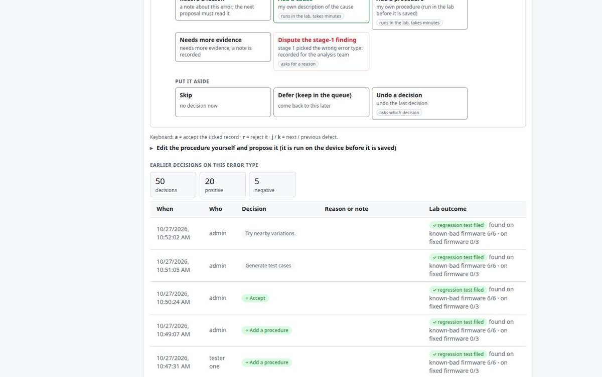
The decision history of the error type, newest first.
Chips at the top show the total number of decisions, the positive ones and the negative ones. The table has the columns When, Who, Decision, Reason or note and Lab outcome. When shows the date and time, then "#" and the event number. You need that number for Undo. In Decision, + green = positive, − red = negative, grey = neutral. Lab outcome looks like "✓ regression test filed found on known-bad firmware 6/6 · on fixed firmware 0/3". Positive = Accept, Accept with a note, Approve, Add a procedure, Add a cause. Negative = Reject, Could not be reproduced, Dispute, Retire, deletion, and a lesson that starts with "NOT CORRECT". Everything else is neutral. The lab outcome is the next lab-check event after that decision, for the same error type. Undone decisions are left out.
def feedback_history(self, sig, limit=50):
"""The admin's earlier decisions on this card: who, when, what, note, and what came of it (from the event log).
An admin_action event is followed, for the same card, by the execution's script_gate event when a search ran."""
rows = self.db.con.execute("SELECT id,ts,kind,actor,payload FROM event WHERE undone=0 AND kind IN ('admin_action','script_gate') "
"AND payload LIKE ? ORDER BY id", ('%"sig": "' + sig + '"%',)).fetchall()
out, pending = [], None
for eid, ts, kind, actor, payload in rows:
pl = json.loads(payload)
if pl.get("sig") != sig:
continue
if kind == "admin_action":
pending = {"event_id": eid, "when": ts, "actor": actor, "action": pl.get("action"), "targets": pl.get("targets"),
"note": pl.get("note"), "approver": pl.get("approver"), "incident": pl.get("incident"), "run": pl.get("run"),
"polarity": "positive" if pl.get("action") in ("accept", "accept_with_note", "promote", "add_procedure", "add_cause") else
"negative" if pl.get("action") in ("reject", "not_reproducible", "wrong_signature", "deprecate", "delete_request", "delete_approve")
or (pl.get("action") == "lesson" and str(pl.get("note") or "").upper().startswith("NOT CORRECT")) else "neutral",
"outcome": None}
out.append(pending)
elif kind == "script_gate" and pending is not None and pending["outcome"] is None:
g = pl.get("gate") or {}
pending["outcome"] = {"admitted": bool(pl.get("admitted")), "vhash": pl.get("vhash"),
"known_bad": "%s/%s" % (g.get("known_bad_hits"), g.get("known_bad_n")) if g else None,
"fixed": "%s/%s" % (g.get("fixed_hits"), g.get("fixed_n")) if g else None}
return list(reversed(out))[:limit]
About the history in the test database
An automatic practice run filled the test database on this laptop (tests/exercise_loop.py and tests/ui_smoke.py). So the history repeats the same decisions every few minutes. They are all made by "admin", with notes such as "exercise: bench silent". A real (production) database starts empty and holds only real decisions.
8.7 The other two tabs
Stage 1 evidence: the stage-1 facts of the defect in one table, and the evidence packet rows. The table holds the error type, the family / layer / who, where in the trace, and why it was flagged. It also holds how the fault happens and the AI reviewer's second opinion. Then come the failure signature, the suggested fix, and the link to the full record. Result: the result of the last decision, as a table. It shows the decision and its effects, how it ran, and the outcome. Then the search, the lab check, how the search went, and the most stressful conditions. Then the procedure and the regression tests. Last comes the time, split into lookup, search and lab check.
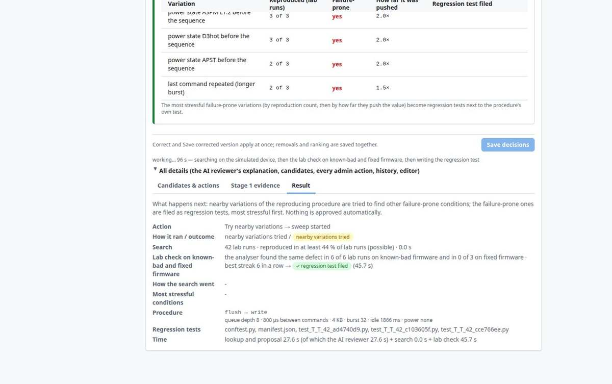
The Result tab after "Try nearby variations".
9. What happens in the lab when you press Correct
Seven decisions send work to the lab. Four of them are Accept, Accept with a note, Add a cause, and Add a procedure (also "Save corrected version"). The other three are Generate test cases, Try nearby variations and Restart the search. This section follows Correct from the click to the test file.
9.1 The start: your decision, then the choice of way
def execute(self, inc, ctx, action, second_admin="second_admin"):
t0 = time.time()
sig, family, fw, ctx_hash = ctx["sig"], ctx["family"], ctx["fw"], ctx["ctx_hash"]
shown, seen, card = ctx["shown"], ctx["seen"], ctx["card"]
res = apply_action(self.db, self.graph, action, [c["doc_id"] for c in shown], inc.tokens, fw)
self.counters["actions"][action["action"]] = self.counters["actions"].get(action["action"], 0) + 1
out = {"incident": inc.id, "sig": sig, "pattern": family, "firmware": fw, "device": ctx.get("device"), "seen": seen, "seen_score": round(ctx["score"], 3),
"seen_label": card["seen_before"].get("label"), "recommended": (card["recommended"] or {}).get("vhash"),
"action": action["action"], "action_targets": action.get("targets"), "action_effects": res["effects"],
"action_error": res["error"], "action_events": res.get("events", []),
"llm": {k: card["llm"].get(k) for k in ("seen_before_assessment", "agrees_with_matcher", "key_packets", "cached")}
if card.get("llm") else None, "llm_problems": card["llm_problems"], "present_s": ctx["present_s"],
"llm_present_s": ctx["llm_s"], "search_s": 0.0, "verify_s": 0.0,
"mode": None, "trials": 0, "status": "no_search", "repro_lower95": None, "closed_loop": None, "vhash": None,
"optimal": False, "triage_timeout": False}
out["rules"] = rules_summary()
if res["error"] or action["action"] not in SEARCH_ACTIONS:
return self._emit(out, t0)
seed_off = int(action.get("attempt") or 0) # restart_failed: the n-th attempt searches on another random stream
out["attempt"] = seed_off
if inc.layer == "workload": # ADK / PCMark artifact: no packets to replay on the synthetic bench
if action["action"] in ("sweep", "compose_tests"):
out.update(mode="workload", status="not_applicable_workload", trials=0, admitted=False, test_files=[],
note="sweep and composition need lab runs of the workload: available once the hardware bench runs it")
return self._emit(out, t0)
return self._workload(out, inc, ctx, action, fw, ctx_hash, t0)
# ---------------- which cause, which stored procedure
tgt = (action.get("targets") or [None])[0]
stored, cause = None, None
if tgt and tgt.startswith("sol::"):
stored = next((c["payload"] for c in shown if c["doc_id"] == tgt), None)
if stored is None: # a newer version, or a same-family procedure of another card: the ledger has it
stored = ledger_solution(self.db, tgt[5:])
cause = stored["cause"] if stored else None
elif tgt and tgt.startswith("cause::"):
cause = tgt.split("::")[2]
cause = cause or res.get("node_id") or (self.db.causes(sig) or ["c0"])[0]
if cause not in self.db.causes(sig):
self.db.apply_event("node_create", {"sig": sig, "node_id": cause, "content": {"variant": 0}}, action.get("requester", "admin"))
if action["action"] == "add_procedure" and res.get("vhash"): # the admin's own (edited) procedure: run it first
stored = next((x for x in self.db.solutions(sig) if x["vhash"] == res["vhash"]), None)
if stored:
cause = stored["cause"]
# regression guard (execute the stored procedure first) whenever the admin accepted a procedure of the SAME card -
# "match" or "different manifestation / other context"; a related card's procedure only seeds the search
mode = "reuse" if (stored and stored.get("sig") == sig) else ("adapt" if stored else "generate")
# ---------------- bench (closed loop) and device model
expected, decoy = self._expected(sig, family, inc)
bench = self.bench_factory(sig, family, expected, False, None, self.opt_seed)
bench_fixed = self.bench_factory(sig, family, expected, True, decoy, self.opt_seed)
model = SyntheticDeviceOracle(sig, 0, seed=self.opt_seed, family=family)
oracle = bench if self.search_on == "bench" else model
t_search = time.time()
deadline = t_search + self.time_budget_s if self.time_budget_s else None
9.2 Way 1: reuse the saved procedure (the regression guard)
Say you accepted a procedure saved for this same error type. The lab first runs it 6 times. If the defect still shows in at least 3 of the 6 runs, the lab reuses it. Then there is no search and no call to the AI reviewer. The lab check comes next. This is the biggest time saving the knowledge base brings. The second time a defect is seen, making it happen again takes seconds. Sometimes the saved procedure no longer works, for example on a new device or new firmware. Then a lesson records that, and the search starts from that procedure.
if mode == "reuse":
k = sum(int(oracle.run(stored["scenario"])["reproduced"]) for _ in range(6))
if k >= 3:
self.counters["stored_still_reproduces"] += 1
self.counters["zero_trial_repro"] += 1
self.counters["reuse"] += 1
out.update(mode="reuse", status="reused_validated", trials=6, repro_k=k, repro_n=6, best=strip(stored["scenario"]))
out["stress"] = self._stress(oracle, out["best"], deadline)
out["search_s"] = round(time.time() - t_search, 1)
return self._finish(out, inc, cause, stored, bench, bench_fixed, fw, ctx_hash, action, second_admin, t0,
reused=True, deadline=deadline)
self.counters["stored_regressed"] += 1
self.db.apply_event("lesson", {"sig": sig, "cause": cause, "vhash": stored["vhash"], "producer": "bench",
"text": "the saved procedure no longer shows the error on %s" % ((("device %s, " % out["device"]["name"]) if (out.get("device") or {}).get("name") else "") + "firmware " + fw)}, "bench")
mode = "adapt"
9.3 Way 2: the search (the "reinforcement-learning agent" of the project statement)
The seed (the starting point). The program asks the AI reviewer for a procedure. With the question, it sends the evidence and the rule text. It also sends the saved procedure, if there is one. It adds up to a few approved procedures of the same family as examples. Last, it adds the lessons for this error type. Then the program cleans the answer. It removes unknown commands and pulls timing values back inside their limits. It checks the packets that the answer points to. Right after that, the lab also tries the saved procedure, two examples and the family's known trigger shape.
# ---------------- proposal (LLM or stand-in) + search under trial AND wall-clock budgets
exemplars = exemplars_for(self.db, sig, family)
prop, problems = self._propose(ctx["ev_text"], sig, family, mode, stored, exemplars, ctx["allowed"])
seed = {"commands": prop["commands"], "timing": prop["timing"], "power_state": prop["power_state"]}
ranges = {k: v for k, v in (prop.get("parameter_ranges") or {}).items() if isinstance(v, (list, tuple)) and len(v) == 2}
extra = ([stored["scenario"]] if stored else []) + [c["scenario"] for c in exemplars[:2]]
if card.get("llm") and card["llm"]["recommended_sequence"]["commands"]:
rs = card["llm"]["recommended_sequence"]
ok, _, cleaned = check_output({"commands": rs["commands"], "timing": rs["timing"], "power_state": rs["power_state"],
"evidence_packets": [], "cause": ""}, ctx["allowed"])
if cleaned:
extra.append(strip(cleaned))
extra.append(family_template_scenario(family)) # the card family's known trigger shape, always a seed
remaining = max(1.0, deadline - time.time()) if deadline else None
opt = self._optimizer(oracle, seed, self.opt_budget, self.opt_seed + 10 * seed_off, ranges, extra, remaining)
r = opt.search()
self.counters["trials_total"] += r["trials"]
if not r["repro_k"] and r["status"] != "triage_timeout" and (not deadline or time.time() < deadline - 30):
# nothing reproduced from the LLM seed: one retry seeded by the family template (other random stream)
remaining = max(1.0, deadline - time.time()) if deadline else None
opt2 = self._optimizer(oracle, family_template_scenario(family), self.opt_budget, self.opt_seed + 10 * seed_off + 1,
ranges, [seed] + extra[:-1], remaining)
r2 = opt2.search()
self.counters["trials_total"] += r2["trials"]
trials_both = r["trials"] + r2["trials"]
problems = list(problems) + ["nothing reproduced from the model's proposal; a second search started from the known trigger shape of this error type"]
if r2["repro_k"] or r2["best_reward"] >= r["best_reward"]:
r, opt = r2, opt2
r["trials"] = trials_both
The search loop (Optimizer.search in stage2/optimizer.py). Each try makes one change to the current procedure. There are 14 kinds of change. It can add, remove, replace or repeat a command, or swap two commands. It can change the queue depth, block size, spacing, burst, idle gap or power state. It can combine two procedures. It can take a small step on one timing value. Or it can jump one timing value to a standard point. Thompson sampling picks which kind of change to use. It is a lucky draw where each kind's own tally of successes sets its odds. So the kinds of change that helped before get picked more often. The lab runs the new procedure and gives it a reward (points). The reward has two parts that are added together. First, a ladder shows how far the defect got. On it, 0 = nothing and 1 = the family's pattern appeared. 2 = almost all conditions met, and 3–4 = the defect happened again. Second, a value from 0 to 1 shows how close each condition came. The search keeps a change that is at least as good as before. After 25 tries with no gain, the search jumps back to a promising earlier procedure. It keeps these in an archive, one for each different shape (the Go-Explore idea). Say the AI reviewer is set up and the search is stuck. Then the program may ask it for a fresh proposal, up to 3 times. When a procedure makes the defect happen, 8 more runs confirm it. Let k be the number of those 8 runs that showed the defect. The procedure counts as reproduced when the Wilson lower bound of k of 8 is at least 0.5. That needs 7 of 8 (section 10.5 explains the bound). Limits: 300 tries and the 10-minute triage limit. Learning from rewards like this is what "reinforcement learning" means.
def search(self):
self.t_start = time.time()
self.cell_n = {}
self.patience = 25
if not is_safe(self.seed_sc):
raise ValueError("seed scenario contains a denied operation")
r0, res0 = self.evaluate(self.seed_sc, "seed")
best_r, best_sc, best_res = r0, self.seed_sc, res0
self.current, self.current_r, self.stagnation = self.seed_sc, r0, 0
for sc in self.extra_seeds: # knowledge-based extra seeds (exemplars)
if len(self.trials) >= self.budget or not is_safe(sc):
continue
r, res = self.evaluate(sc, "exemplar")
if r > best_r:
best_r, best_sc, best_res = r, sc, res
self.current, self.current_r, self.stagnation = sc, r, 0
if res["reproduced"] and len(self.trials) + self.confirm_n <= self.budget:
k = 1 + sum(int(self.evaluate(sc, "confirm")[1]["reproduced"]) for _ in range(self.confirm_n - 1))
if wilson_lower(k, self.confirm_n) >= self.confirm_min_lower:
return self.finish(sc, k, self.confirm_n, "confirmed")
while len(self.trials) < self.budget and not self._timed_out():
if self.propose_fn and self.stagnation >= self.patience and self.proposals_used < 3:
prop = self.propose_fn(best_sc, len(self.trials)) # LLM proposal on plateau only
self.proposals_used += 1
if prop and is_safe(prop):
r, res = self.evaluate(prop, "llm_proposal")
if r > self.current_r:
self.current, self.current_r, self.stagnation = prop, r, 0
if r > best_r:
best_r, best_sc, best_res = r, prop, res
continue
parent = self.pick_parent()
op = self.pick_operator()
other = self.archive[self.rng.choice(list(self.archive))][1] if op == "crossover" else None
child = mutate(parent, op, self.rng, other, self.ranges)
if not is_safe(child):
continue
r, res = self.evaluate(child, op)
improved = r > self.current_r + 1e-9
self.op_ab[op][0 if improved else 1] += 1.0 # operator credit vs the parent
if r >= self.current_r - 1e-9: # accept equal-or-better (walk plateaus)
self.current, self.current_r = child, r
self.stagnation = 0 if improved else self.stagnation + 1
if r > best_r:
best_r, best_sc, best_res = r, child, res
if res["reproduced"] and len(self.trials) + self.confirm_n <= self.budget:
k = 1
for _ in range(self.confirm_n - 1): # successive confirmation
rr, rres = self.evaluate(child, "confirm")
k += int(rres["reproduced"])
lower = wilson_lower(k, self.confirm_n)
if lower >= self.confirm_min_lower:
return self.finish(child, k, self.confirm_n, "confirmed")
# best effort: confirm the best scenario found
k = n = 0
if best_res["reproduced"]:
for _ in range(min(self.confirm_n, max(1, self.budget - len(self.trials)))):
n += 1
k += int(self.evaluate(best_sc, "confirm")[1]["reproduced"])
return self.finish(best_sc, k, n, "triage_timeout" if self._timed_out() else "budget_exhausted")
stage2/optimizer.py lines 61–107 · mutate()
def mutate(sc, op, rng, other=None, ranges=None):
s = {"commands": [dict(c) for c in sc["commands"]], "timing": dict(sc["timing"]), "power_state": sc["power_state"]}
cmds, t = s["commands"], s["timing"]
if op == "insert_cmd":
cmds.insert(rng.randint(0, len(cmds)), {"op": rng.choice(OPS)})
elif op == "delete_cmd" and len(cmds) > 1:
cmds.pop(rng.randrange(len(cmds)))
elif op == "swap_cmds" and len(cmds) > 1:
i, j = rng.sample(range(len(cmds)), 2)
cmds[i], cmds[j] = cmds[j], cmds[i]
elif op == "replace_cmd":
cmds[rng.randrange(len(cmds))] = {"op": rng.choice(OPS)}
elif op == "dup_cmd":
i = rng.randrange(len(cmds))
cmds.insert(i, dict(cmds[i]))
elif op.startswith("mut_") and op != "mut_power":
key = {"mut_qd": "qd", "mut_bs": "bs_kb", "mut_inter_cmd": "inter_cmd_us", "mut_burst": "burst_len",
"mut_idle": "idle_gap_ms"}[op]
lo, hi = TIMING_KEYS[key]
if ranges and key in ranges and rng.random() < 0.7: # LLM-proposed range (SLLMBO-style prior)
rlo, rhi = ranges[key]
lo, hi = max(lo, int(rlo)), min(hi, int(rhi)) if int(rhi) > int(rlo) else (lo, hi)
if rng.random() < 0.5:
t[key] = int(min(hi, max(lo, t[key] * rng.choice([0.25, 0.5, 2, 4]))))
else:
t[key] = int(lo + (hi - lo) * rng.random() ** 2)
elif op == "mut_power":
s["power_state"] = rng.choice(POWER)
elif op == "nudge_timing": # small local step on one timing value
key = rng.choice(list(TIMING_KEYS))
lo, hi = TIMING_KEYS[key]
t[key] = int(min(hi, max(lo, round(t[key] * rng.choice([0.7, 0.85, 1.2, 1.5])))))
elif op == "step_timing": # move one value to a canonical grid point
key = rng.choice(list(TIMING_KEYS))
grid = {"inter_cmd_us": [1, 2, 5, 10, 20, 50, 100, 200, 500, 1000, 2000, 5000],
"burst_len": [1, 4, 16, 64, 128], "idle_gap_ms": [0, 100, 200, 500, 1000, 2000],
"qd": [1, 4, 8, 16, 32, 64, 128, 256], "bs_kb": [4, 64, 256, 1024]}[key]
t[key] = rng.choice(grid)
elif op == "crossover" and other:
cut = rng.randint(0, len(cmds))
cmds[:] = cmds[:cut] + [dict(c) for c in other["commands"][cut:]] or cmds
for k in t:
if rng.random() < 0.5:
t[k] = other["timing"][k]
if len(cmds) > 12:
del cmds[12:]
return s
9.4 Shorten it, then push it to its limits
Shorten (minimize, the ddmin idea: cut away one part at a time). The program removes each command in turn. It also sets each timing value back to its default. It keeps a change when the defect still appears in 2 of 3 runs. The result is the shortest, plainest procedure that still sets off the defect. An engineer can understand it most easily, and a test can run it most easily.
def minimize(self, sc):
cmds = list(sc["commands"])
changed = True
while changed and len(cmds) > 1:
changed = False
for i in range(len(cmds)):
trial = {"commands": cmds[:i] + cmds[i + 1:], "timing": sc["timing"], "power_state": sc["power_state"]}
if self.still_fails(trial):
cmds = trial["commands"]
changed = True
break
out = {"commands": cmds, "timing": dict(sc["timing"]), "power_state": sc["power_state"]}
for key, (lo, hi) in TIMING_KEYS.items(): # relax each timing value toward its default
default = {"inter_cmd_us": 50, "burst_len": 16, "idle_gap_ms": 0, "qd": 8, "bs_kb": 4}[key]
cur = out["timing"][key]
if cur != default:
t2 = dict(out["timing"])
t2[key] = default
if self.still_fails({"commands": cmds, "timing": t2, "power_state": out["power_state"]}):
out["timing"] = t2
if out["power_state"] != "none":
t = dict(out)
t["power_state"] = "none"
if self.still_fails(t):
out = t
return out
Most stressful conditions (stress_ascent). This step was added on 27 October 2026. It meets these words of the statement: "the most stressful trigger conditions are converted into executable test scripts". It starts from the confirmed, shortened procedure. It pushes each timing value one step toward what a drive is least likely to survive. Commands come twice as close together. The step doubles queue depth, burst length, block size and idle gap. It keeps a step only when the defect still appears in 2 of 3 runs. The loop repeats until nothing can be pushed further, or until 30 lab runs are used. The hardest version that still sets off the defect goes through the same lab check. It is then filed as a second test. The first test guards the point where the defect was seen. The second test guards the space around that point. So a fix must hold even under the harshest timing at which the drive was seen to fail. This step runs after a search and after a reused saved procedure. It also runs after your own version made the defect happen again.
def stress_ascent(self, sc, max_trials=30, deadline=None):
"""From a confirmed (and minimised) procedure, push each timing value one step in its stressful direction -
commands closer together, deeper queue, longer burst, bigger blocks, longer idle gap - and keep the step only
when the defect still reproduces (2 of 3 runs). Repeats until no value can be pushed further or the trial /
time budget is used up. Returns the most stressful procedure that still triggers the defect, how far each value
was pushed (ratio to the confirmed procedure) and the trials spent. This is the "most stressful trigger
conditions" of the project statement; the regression test built from it guards the margin, not just the point."""
cur = {"commands": [dict(c) for c in sc["commands"]], "timing": dict(sc["timing"]), "power_state": sc.get("power_state", "none")}
pushed, steps, trials, progress = {}, [], 0, True
while progress and trials + 3 <= max_trials and not (deadline and time.time() > deadline):
progress = False
for key, f in STRESS_DIRECTION.items():
if trials + 3 > max_trials or (deadline and time.time() > deadline):
break
lo, hi = TIMING_KEYS[key]
v = int(cur["timing"].get(key, lo))
if v == 0:
continue # a value of 0 (no idle gap) has no stressful direction here
nv = int(min(hi, max(lo, round(v * f))))
if nv == v:
continue
t2 = dict(cur["timing"])
t2[key] = nv
trial = {"commands": cur["commands"], "timing": t2, "power_state": cur["power_state"]}
trials += 3
kept = self.still_fails(trial)
steps.append({"value": key, "from": v, "to": nv, "kept": kept})
if kept:
cur = trial
pushed[key] = round(pushed.get(key, 1.0) * (f if f > 1 else 1.0 / f), 2)
progress = True
stress = 1.0
for ratio in pushed.values():
stress *= ratio
return {"scenario": cur, "pushed": pushed, "stress": round(stress, 2), "steps": steps, "trials": trials}
9.5 The lab check and the score
The lab runs the procedure 6 times on the known-bad firmware (the firmware that has the fault). Then it runs it 3 times on the fixed firmware. After every run, the same stage-1 analyser reads the new trace. So the test checks exactly what the field capture (the recording from the real drive) showed. Passed = the defect was found at least once on known-bad and never on fixed. Only then does the program file a test. Each known-bad run also gets a score. The score uses three yes/no checks on the analyser's finding. Did it find and pin down the same error type? Is the first rule the same as in the field? Is the verdict Confirmed? Score = checks passed / 3. Optimal (the best result) = score above 0.9 in 3 runs in a row. These three numbers are the rules of the project's diagram of how the parts fit together. That diagram says: a test score above 0.9 three times in a row is "optimal". It also says more than 10 minutes of first-level triage is a "fail".
def verify_closed_loop(bench, bench_fixed, scenario, n_bad=6, n_fixed=3, optimal_consecutive=OPTIMAL_CONSECUTIVE, field_rule=None):
"""Execute the contract now (what the rendered pytest will do later) and report the numbers.
Each known-bad run gets a score = checks passed out of 3 (loop_rules.score_checks: same error type isolated,
same first rule, verdict CONFIRMED) and the three checks as words. 'optimal' = all 3 checks passed
(score > SCORE_THRESHOLD) in `optimal_consecutive` consecutive runs - the diagram's "test score > 0.9 three
times consecutively"."""
hits, scores, checks, run, best_run = [], [], [], 0, 0
expected = getattr(bench, "expected", set()) or {getattr(bench, "sig", None)}
for _ in range(n_bad):
res = bench.run(scenario)
h = bool(res["isolated"])
hits.append(h)
scores.append(signature_score(res["isolated"], expected, field_rule))
_, c = best_finding(res["isolated"], expected, field_rule)
checks.append(c or score_checks(None, expected, field_rule))
run = run + 1 if h else 0
best_run = max(best_run, run)
bad = sum(hits)
fixed = sum(bool(bench_fixed.run(scenario)["isolated_top1"]) for _ in range(n_fixed))
streak = consecutive_above(scores, SCORE_THRESHOLD)
return {"known_bad_hits": bad, "known_bad_n": n_bad, "wilson_lower95": round(wilson_lower(bad, n_bad), 3),
"max_consecutive_hits": best_run, "scores": scores, "checks": checks, "score_threshold": SCORE_THRESHOLD,
"max_consecutive_score_hits": streak, "optimal_rule": "all 3 checks passed in %d consecutive lab runs" % optimal_consecutive,
"optimal": streak >= optimal_consecutive, "fixed_hits": fixed, "fixed_n": n_fixed, "passed": bad >= 1 and fixed == 0}
stage2/loop_rules.py lines 28–35 · score_checks()
def score_checks(finding, expected_cards, field_rule=None):
"""The three checks for one detector finding, as plain booleans.
A finding whose card is not expected, or whose verdict is neither CONFIRMED nor SUSPECT, fails all three."""
f = finding or {}
matched = f.get("card_id") in (expected_cards or ()) and f.get("verdict") in ("CONFIRMED", "SUSPECT")
return {"same_error_type": bool(matched),
"same_rule": bool(matched and (not field_rule or f.get("rule") == field_rule)),
"confirmed": bool(matched and f.get("verdict") == "CONFIRMED")}
stage2/loop_rules.py lines 21–23 · loop_rules.py
SCORE_THRESHOLD = 0.9 # "test score > 0.9"
OPTIMAL_CONSECUTIVE = 3 # "[3 times consecutively] is considered as optimal params"
FIRST_LEVEL_TRIAGE_S = 600 # "> 10 mins (first level triage) is fail"
9.6 The lab on this laptop is a pretend one; a real bench plugs in at one place
With no real drive on a bench, lab runs go to a simulated drive. It is a pretend drive made by the program (SyntheticDeviceOracle in stage2/oracle.py with GeneratorBench in testgen.py). For each error type, the pretend drive hides a secret trigger. The trigger has an ordered list of commands and a smallest queue depth. It has a range for the spacing, and a smallest block size and idle gap. It may also need a power state. And there is a 15 % chance that a run does not show the defect, even when everything is right. Real defects do not always happen either. If a procedure meets the hidden trigger, the bench writes a made-up trace with 113 columns that holds the defect. Then the real stage-1 analyser reads it. The fixed firmware never shows the defect. Instead, it writes a nearby error type as a trap. So a test cannot pass just by finding nothing. The search never sees the hidden trigger, only the rewards.
def run(self, scenario):
self.calls += 1
ops = [c["op"] for c in scenario["commands"]]
t = scenario["timing"]
got = self._ordered_subseq(ops, self.motif)
req = []
req.append(got / len(self.motif))
req.append(min(1.0, t["qd"] / self.qd_min))
lo, hi = self.t_win
x = t["inter_cmd_us"]
req.append(1.0 if lo <= x <= hi else max(0.0, 1 - abs(x - (lo if x < lo else hi)) / max(hi, 1)))
req.append(min(1.0, t["bs_kb"] / self.bs_min))
req.append(1.0 if self.idle_min == 0 else min(1.0, t["idle_gap_ms"] / self.idle_min))
req.append(1.0 if (self.power is None or scenario["power_state"] == self.power) else 0.0)
met = sum(1 for v in req if v >= 0.999)
closeness = sum(req) / len(req)
# stage ladder
if met == len(req):
stage = 4 if scenario.get("variant_match", True) else 3
if self.rng.random() < self.flaky:
stage, closeness = 2, 0.9
elif met >= len(req) - 1 and got == len(self.motif):
stage = 2
elif got >= 1 and self.family_motif in ops:
stage = 1
else:
stage = 0
cost = 2.0 + 0.001 * sum(t["burst_len"] for _ in ops) + (30.0 if "power_cycle" in ops else 0.0)
return {"stage": stage, "closeness": round(closeness, 4), "reproduced": stage >= 3, "cost_s": cost,
"requirements_met": met, "requirements": len(req)}
To use a real drive, write the code for run() and detect(). A starting file and a guide help you: deploy/bench_hook_template.py and deploy/BENCH_INTEGRATION.md. Then set Bench to "hook" in Settings and restart the application. The program picks the bench only when it starts. In short, write run(scenario) in app/bench_hook.py. It sends the commands with fio, nvme-cli or SPDK (tools that send commands to a drive). It saves the capture tool's recording to a file. It returns the file's path with the analyser's findings. Everything else stays the same. The program refuses commands that could destroy the drive before they reach the hook.
9.7 The regression test files
When the lab check passes, test_manifest describes the test. Then emit_closed_loop_test writes the folder suite/T-<error type>-<device>-<procedure id>/. The device is part of the name for a reason. The same error type on another drive model needs its own test. The manifest (the test's label file) lists what must be true before the test runs. One of these checks stops the test on a different drive model. How many times does the test run on known-bad firmware? Say the defect shows in a share p of runs (the measured rate). The test repeats enough times to be 95 % sure of seeing it at least once: n = ln(0.05) / ln(1 − p), between 3 and 20. Here ln is the "ln" key on a science calculator, and n is rounded up. For example, with p = 0.5 the maths gives 4.3, so n = 5.
stage2/testgen.py lines 214–238 · test_manifest()
def test_manifest(incident_id, sig, pattern, scenario, expected_cards, firmware_known_bad, firmware_fixed,
repro_lower95, context_hash, source_vhash, ambiguity_note="", composition=None, signature=None, device=None):
# Repeats on known-bad firmware so that a defect which reproduces with probability p is seen at least once with
# 95 % confidence: P(no hit in n runs) = (1 - p)^n <= 0.05 => n >= ln(0.05) / ln(1 - p) (independent Bernoulli
# trials; the same algebra as the "rule of three", Hanley & Lippman-Hand, JAMA 1983). p is the Wilson 95 % lower
# bound measured at generation (a conservative p => more repeats). Engineering clamps, not from any standard:
# p in [0.05, 0.95] keeps n finite, n in [3, 20] bounds bench time (p = 0.5 -> 5 runs; p = 0.2 -> 14; p = 0.14 -> 20).
p_lo = min(0.95, max(0.05, repro_lower95))
n_bad = max(3, min(20, int(math.ceil(math.log(0.05) / math.log(1 - p_lo)))))
man = _manifest(incident_id, sig, pattern, scenario, expected_cards, firmware_known_bad, firmware_fixed, repro_lower95,
context_hash, source_vhash, ambiguity_note, n_bad)
if composition:
man["composition"] = composition # provenance: which stored sequences, which model, why (LLM-composed tests)
if signature:
man["signature"] = signature # the field failure signature the test guards (checklist H4 / H9)
man["signature_id"] = signature.get("signature_id")
man["optimal_rule"] = {"score_threshold": SCORE_THRESHOLD, "consecutive": OPTIMAL_CONSECUTIVE}
if device and device.get("name"):
# a regression test belongs to one device model + firmware: the id carries the device so that the same error
# on another drive gets its own test, and the bench refuses to run it on a different model (preconditions)
man["device"] = {k: device.get(k) for k in ("name", "model_number", "serial_number", "firmware_revision", "pci", "source")
if device.get(k)}
man["preconditions"]["device_model"] = device["name"]
man["test_id"] = "T-%s-%s-%s" % (sig.replace("/", "_"), device_slug(device["name"]), source_vhash[:8])
return man
def emit_closed_loop_test(suite_dir, manifest):
d = os.path.join(suite_dir, manifest["test_id"])
os.makedirs(d, exist_ok=True)
files = {"manifest.json": json.dumps(manifest, indent=1),
# unique basename per test id: several procedures of one card (versions, adaptations) must collect together
"test_%s.py" % manifest["test_id"].replace("-", "_").replace("/", "_"): render_closed_loop_pytest(manifest),
"conftest.py": CONFTEST}
for name, text in files.items():
with open(os.path.join(d, name), "w") as f:
f.write(text)
return d, sorted(files)
Run a test like any Python test: cd suite/T-T-42-074e18b2 && python3 -m pytest -q. The test needs the bench fixtures (ready-made helpers) from conftest.py.
9.8 Time limit
Every lab job for a defect has a time limit. It is the first-level triage limit of 600 seconds (10 minutes, set in Settings). First-level triage is the first quick round of sorting out a defect. When the time is up, the search stops. The screen shows "first-level triage limit (10 min) exceeded" in red. The attempt then counts as failed.
10. How the database learns from your decisions (the numbers)
The project statement asks the program to learn from the admin's feedback. It must do this without training a model. Here, learning simply means counting. Each stored record has counters, like tally marks. Every decision adds to them. The counters decide what is shown first. All the rules sit in two small functions, so you can check them by hand.
10.1 Success and failure counters (a, b) and the rating
Every cause has two counters, a and b. They sit on the link "error type → cause" (table edge). Every procedure has them too. They sit on the link "cause → procedure" and on the procedure itself (tables pedge and pnode). Think of a as tally marks for "right" and b as tally marks for "wrong". Both start at 1. A third counter, n, counts how many times admins judged the record. A good decision adds 1 to a. A bad decision adds 1 to b. The rating on the screens is the share of "right" marks:
rating = a ÷ (a + b)
So a record nobody has judged has rating 1 ÷ 2 = 0.5. That means "we know nothing yet". 8 Correct and 2 Not correct give 9 ÷ 12 = 0.75. Why start at 1 and 1, not 0 and 0? So that one early "Correct" cannot make a record look perfect. Maths books call this the mean of a "Beta" spread of values. You do not need that name to use it.
The cause also keeps a second pair of counters, ta and tb. ta counts how often the lab made the defect happen with it. tb counts how often the lab did not. The Knowledge base page shows this pair as "lab reliability". "Could not be reproduced" changes only this pair. Why? A procedure that did not work on one bench does not prove that the cause is wrong.
stage2/kgdb.py lines 312–320 · KGDB._credit()
def _credit(self, sig, cid, r):
e = self._edge(sig, self.nid(sig, cid))
e["a"] += r
e["b"] += 1 - r
e["n"] += 1
tot = e["a"] + e["b"]
if tot > self.p["cap"]:
e["a"] *= self.p["cap"] / tot
e["b"] *= self.p["cap"] / tot
def _credit(self, table, id_, r):
row = self.con.execute("SELECT a,b,n FROM %s WHERE id=?" % table, (id_,)).fetchone()
if row is None:
return
a, b, n = row[0] + r, row[1] + (1 - r), row[2] + 1
cap = self.db.p["cap"]
if a + b > cap:
a, b = a * cap / (a + b), b * cap / (a + b)
self.con.execute("UPDATE %s SET a=?, b=?, n=? WHERE id=?" % table, (a, b, n, id_))
Check it against the real database
Take error type T-42. On the link T-42 → cause c0, the knowledge base holds: a = 9.67, b = 1.0, n = 38, ta = 38, tb = 12. Rating = 9.67 ÷ 10.67 = 0.91. Lab reliability = 38 ÷ 50 = 0.76. The Knowledge base page shows exactly "admin feedback rating 0.91 from 38 decisions … lab reliability 0.76". a is not a whole number because of the slow fading in 10.2.
10.2 Four rules that keep the counters honest
Fading, 2 % per decision
Each new verdict on an error type first makes the old marks of all its causes fade a little. Only the extra counts above the start value of 1 fade: a = 1 + (a − 1) × 0.98, and the same for b. New decisions count more than old ones. So the order can change when the firmware changes.
Upper limit (cap) of 50
When a + b goes over 50, both shrink by the same share until they add up to 50. So no record can pile up so many marks that new evidence cannot move it.
Shrink after an edit ×0.7
When someone edits the text of a cause or a procedure, the old extra counts are multiplied by 0.7. The old text earned them, so they count for less now.
Firmware change ×0.5
The event firmware_change halves all extra counts everywhere. Old evidence is worth half on new firmware.
stage2/kgdb.py lines 47–47 · kgdb.py
# cut can lose at most the last commit, never corrupt the file). The in-memory test databases stay fast.
stage2/kgdb.py lines 213–236 · KGDB._project()
elif kind == "verdict":
sig = pl["sig"]
for cid in self.causes(sig): # per-event decay on the signature's edges
e = self._edge(sig, self.nid(sig, cid))
e["a"] = 1.0 + (e["a"] - 1.0) * (1 - p["gamma"])
e["b"] = 1.0 + (e["b"] - 1.0) * (1 - p["gamma"])
v = pl["verdict"]
if v in ("correct", "partial") and pl.get("chosen"):
self._credit(sig, pl["chosen"], 1.0)
elif v == "not":
if pl.get("rejected"): # localized blame: only the node the admin rejected
self._credit(sig, pl["rejected"], 0.0)
if pl.get("chosen"):
self._credit(sig, pl["chosen"], 1.0)
if pl.get("lab_result") is not None and pl.get("chosen"): # verdict "lab": ONLY this block applies
e = self._edge(sig, self.nid(sig, pl["chosen"]))
e["ta" if pl["lab_result"] else "tb"] += 1.0
for cid in self.causes(sig):
self._flush_edge(sig, self.nid(sig, cid))
if pl.get("tokens"):
tgt = pl.get("chosen") or (sig if v != "not" else None)
if tgt:
self.con.execute("INSERT INTO case_memory(sig,tokens,event_id) VALUES(?,?,?)",
(sig, json.dumps(sorted(pl["tokens"])), eid))
10.3 "Record my ranking": orders, not successes
An order ("this one first, that one second") is not the same as "this one is correct". So a ranking never changes a or b. Instead, it moves a separate score, pl. The Plackett–Luce rule does this; it is a standard way to turn an order into scores. From the current scores, the program works out each item's chance of being put first. The item you put first rises by 0.3 × (1 − its chance of being first) ÷ number of items. Every item below it falls by 0.3 × its own chance ÷ number of items. The same step then repeats for second place, and so on down the list. The score enters the lookup as a gentle push (section 11.2).
elif kind == "proc_rank": # admin ordering of procedures -> Plackett-Luce rating only
import math
ids = [i for i in pl["ranking"] if self.con.execute("SELECT 1 FROM pnode WHERE id=?", (i,)).fetchone()]
sk = [self.con.execute("SELECT pl FROM pnode WHERE id=?", (i,)).fetchone()[0] for i in ids]
eta = 0.3
for i in range(len(ids)):
denom = sum(math.exp(x) for x in sk[i:])
for m in range(i, len(ids)):
pr = math.exp(sk[m]) / denom
sk[m] += eta * ((1 - pr) if m == i else -pr) / max(1, len(ids))
for i, v in zip(ids, sk):
self.con.execute("UPDATE pnode SET pl=?, updated_event=? WHERE id=?", (v, eid, i))
10.4 What a procedure's status means, and who may change it
Status (screen words)
Set by
Rule in the database
proposed
the AI reviewer, the search, an admin's own version, composition (Generate test cases), sweep (Try nearby variations), link
solution_propose: a new procedure can only come in as "proposed".
validated in the lab, awaiting approval by a second admin
the lab only
solution_validate with a safe lower estimate (section 10.5) above 0.
failed validation
the lab only
solution_validate with an estimate of 0: the lab could not make the defect happen. If someone proposes the same procedure again, it goes back to "proposed".
approved by a second admin
a second admin (Approve as second admin)
solution_approve: only from "validated", and only if the approver did not make the procedure. The procedure approved before for the same cause then becomes:
replaced by a newer version
happens by itself on approval
status superseded (replaced). It stays in the history.
retired
Retire the procedure (needs two people)
solution_deprecate: only when the person who approves is not the person who asked.
stage2/kgdb.py lines 274–296 · KGDB._project()
elif kind == "solution_propose": # LLM / optimizer may only append 'proposed'
self.con.execute("INSERT OR IGNORE INTO solution(vhash,sig,cause,scenario,context_hash,producer,status,"
"repro_lower95,created_event,supersedes) VALUES(?,?,?,?,?,?,?,?,?,?)",
(pl["vhash"], pl["sig"], pl["cause"], json.dumps(pl["scenario"], sort_keys=True),
pl.get("context_hash", ""), pl.get("producer", "llm"), "proposed",
pl.get("repro_lower95"), eid, pl.get("supersedes")))
# re-proposing a procedure that failed validation earlier puts it back to 'proposed' (it is validated again)
self.con.execute("UPDATE solution SET status='proposed', producer=?, created_event=? WHERE vhash=? AND status='failed-validation'",
(pl.get("producer", "llm"), eid, pl["vhash"]))
elif kind == "solution_validate": # the bench/execution is the arbiter
self.con.execute("UPDATE solution SET status=CASE WHEN ?>0 THEN 'validated-by-execution' ELSE 'failed-validation' END,"
" repro_lower95=? WHERE vhash=? AND status IN ('proposed','validated-by-execution')",
(pl["repro_lower95"], pl["repro_lower95"], pl["vhash"]))
elif kind == "solution_approve": # four-eyes: approver bound to the immutable hash
r = self.con.execute("SELECT status, producer FROM solution WHERE vhash=?", (pl["vhash"],)).fetchone()
if r and r[0] == "validated-by-execution" and pl.get("approved_by") != r[1]:
self.con.execute("UPDATE solution SET status='admin-approved', approved_by=? WHERE vhash=?",
(pl["approved_by"], pl["vhash"]))
self.con.execute("UPDATE solution SET status='superseded' WHERE sig=? AND cause=? AND vhash<>? "
"AND status='admin-approved'", (pl["sig"], pl["cause"], pl["vhash"]))
elif kind == "solution_deprecate":
if pl.get("approved_by") and pl["approved_by"] != pl.get("requested_by"):
self.con.execute("UPDATE solution SET status='deprecated' WHERE vhash=?", (pl["vhash"],))
10.5 "Reproduced in at least 68 % of lab runs": the safe lower estimate
Say a procedure made the defect happen in 6 of 6 runs. That does not prove it works 100 % of the time. Six runs are only a few. The Wilson lower bound gives a safe lower estimate. We can be 95 % sure the true rate is not below it. 6 of 6 → 61 %, 7 of 8 → 53 %, 8 of 8 → 68 %. Screens turn it into words: at least 80 % = very likely, 50 % = likely, 25 % = possible, otherwise unlikely. A procedure counts as making the defect happen when this estimate is at least 50 %.
stage2/optimizer.py lines 36–43 · wilson_lower()
def wilson_lower(k, n, z=1.96):
if n == 0:
return 0.0
p = k / n
d = 1 + z * z / n
c = p + z * z / (2 * n)
r = z * math.sqrt(p * (1 - p) / n + z * z / (4 * n * n))
return max(0.0, (c - r) / d)
11. How the knowledge base is searched for a new defect
When the program looks up a defect (section 7.1), it first turns the defect into a question to the database. The question holds the error type, family, first rule, layer, who caused it and the verdict. It also holds the device-and-firmware mark: a short code made from the firmware and the device name. Then come the analyser's tokens (short labels it writes) and a text. Last comes the order of packet kinds in the evidence rows. Each stored record is kept as a document with the same fields. The stored records are procedures, causes, earlier judged cases, error types and lessons. The search is HybridIndex.query in stage2/retrieval_v3.py.
11.1 Five ways of comparing, then one merged list
Way
What it compares
Weight
Structured match (field by field)
Are the fields exactly equal? The same error type gives 1.0. The same device-and-firmware mark gives 0.25. Up to 0.25 more comes from first rule / layer / who / verdict: a quarter of it for each one that agrees.
1.0
BM25 text score (a classic search-engine score)
The analyser's tokens ("card:T-42", "rule:CFG.D0_EARLY", packet kinds …). Rare tokens that both share count more.
1.0
Trigram similarity
The free text, cut into 3-letter pieces. Small spelling differences do not hurt it much. Shown as "text similarity".
0.7
Evidence-row sequence
The order of packet kinds around the defect. LCS measures it: the longest list of packet kinds both share in the same order. Earlier positions count more. Shown as "evidence-row sequence LCS".
0.7
Meaning (optional)
Sentence embeddings: lists of numbers that stand for the meaning of a text. Used only when an embedding model is connected; off by default.
0.7
Each way makes its own ranked list. The program merges the lists by rank (the glossary calls this RRF). Each list gives a record weight ÷ (60 + its rank). A record gets this from every list it appears in, and the program adds them up. Then it scales the sum so that a record that is first in every list gets 1.0. So a record near the top of many lists ends up on top. That number is the "lookup match" (shown as a percentage).
11.2 Your decisions change the order
Next, the merged score is multiplied by two factors from the counters of section 10:
final = lookup match × √(0.5 + 0.5 × rating) × e0.5 × tanh(pl)
A record with rating 1 keeps its full score. A record with rating 0 keeps 71 % of it. The ranking score pl can raise the score by up to 65 %. It can also lower it by up to 39 %. The square root (√) and tanh keep both factors gentle on purpose. Here tanh is a maths function that never goes above 1 or below −1. So a record that admins often judge correct moves up. But it cannot shut out a better match. The screen shows five records. When more than five match, it shows the best 4. The 5th place is a try-something-new slot. It goes to one of the less-judged records: fewer than 5 decisions and a match of at least 0.4. Thompson sampling draws that record at random. The screen marks it "shown to give a less-tried procedure a chance". Without this slot, a procedure nobody has looked at could never earn credit.
fused, parts = {}, {}
for name, sc in channels.items():
if not sc:
continue
for rank, (did, val) in enumerate(sorted(sc.items(), key=lambda x: -x[1])):
if self.docs[did].kind not in kinds:
continue
fused[did] = fused.get(did, 0.0) + self.w[name] / (RRF_K + rank + 1)
parts.setdefault(did, {})[name] = round(val, 3)
top = sum(self.w[n] for n in channels if channels[n]) / (RRF_K + 1) or 1.0
cands = []
for did, f in fused.items():
d = self.docs[did]
post, n, pl, a, b = self._posterior(d)
# tempered feedback (beta = 0.5 in the research note): strong priors cannot lock the ranking (rich-get-richer)
final = (f / top) * math.sqrt(0.5 + 0.5 * post) * math.exp(0.5 * math.tanh(pl))
cands.append({"doc_id": did, "kind": d.kind, "sig": d.sig, "cause": d.cause, "vhash": d.vhash,
"fused": round(f / top, 4), "posterior": round(post, 3), "n": n, "score": round(final, 4),
"channels": parts.get(did, {}), "fields": d.fields, "payload": d.payload,
"why": self._why(d, q, parts.get(did, {}), a, b, n)})
cands.sort(key=lambda c: -c["score"])
shown = cands[:k - 1] if (explore and len(cands) > k) else cands[:k]
if explore and len(cands) > k:
rest = [c for c in cands[k - 1:] if c["fused"] >= 0.4 and c["n"] < 5] or cands[k - 1:]
pick = max(rest, key=lambda c: self.rng.betavariate(1 + c["posterior"] * max(1, c["n"]),
1 + (1 - c["posterior"]) * max(1, c["n"])) * c["fused"])
pick = dict(pick, why=pick["why"] + ["shown to give a less-tried procedure a chance"], explore=True)
shown = shown + [pick]
11.3 "Seen before: YES / related / NO"
The answer comes from the best procedure in the list. YES needs four things at once. The error type is the same. The device-and-firmware mark is the same. The lookup match is at least 0.70. And the fields agree on at least 2 of 4 (rule, layer, who, verdict). related = same error type, or same family, or a very similar packet order. NO = none of these, or nothing stored.
def seen_before(self, q, shown):
"""match / ambiguous / new from the best solution candidate (+ the matcher's row/field logic)."""
sols = [c for c in shown if c["kind"] == "solution"]
if not sols:
return "new", None, 0.0
best = sols[0]
f = best["fields"]
same_card = f.get("card") == q.get("card")
same_ctx = f.get("context_hash") and f.get("context_hash") == q.get("context_hash")
# match = same card, same context, strong fusion AND the manifestation agrees (>= 2 of the 4 structured
# fields rule/layer/origin/verdict; struct = 1.0 card + 0.25 ctx + 0.25 * agreeing/4 -> >= 1.375)
if same_card and same_ctx and best["fused"] >= T_HI and best["channels"].get("struct", 0.0) >= 1.375:
return "match", best, best["fused"]
rows = best["channels"].get("rows", 0.0)
struct = best["channels"].get("struct", 0.0) # >= 0.4 means most structured fields (rule/layer/origin/
same_family = bool(q.get("family")) and f.get("family") == q.get("family") # verdict/context) agree
if same_card or same_family or (rows >= 0.5 and struct >= 0.4 and best["fused"] >= T_LO):
return "ambiguous", best, best["fused"]
return "new", best, best["fused"]
12. Step 6 · Report and tests, the Knowledge base page, Settings, Help
12.1 Report and tests
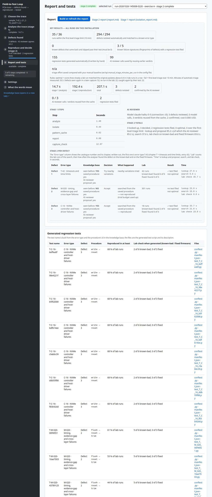
Key results for all runs and the times of this run. A table for each defect, and the tests the program made.
The button Build or refresh the report sends GET /api/runs/<run>/report and GET /api/kpi. The first one calls report.build_report. It reads how long each job of the run took. It also reads the stage-2 state files. The two links open two reports. The stage-2 report is report.md. The stage-1 report is isolation_report.md.
Key results — all runs on this installation
Runs that finished inside the first-level triage limit (the 10-minute limit for each defect). Defects the program found and pinned down by itself, and matched to a known error type. Also known defects that came back and slipped past their test (must be 0). Known failure signatures (the pattern that marks a failure) that have a regression test. Regression tests the program made by itself, and how many people wrote by hand. AI reviewer calls saved by reusing earlier verdicts (answers). Triage time saved, compared with your time by hand. This last one shows only when kpi.manual_triage_minutes_per_run is set in the config file. Without your current hours, the program cannot measure the saving. Below the list: the rules, and how often known faults came back. That means seen again, run again in the lab, or caught again by their test.
Chips of the run (small boxes with numbers)
Seconds for stage 1, for stage 2 and in total. Defects found. Defects the AI reviewer confirmed. AI reviewer calls, and verdicts reused. Regression tests filed.
Stage 1 steps
Seconds for each step.
AI reviewer
Model, how it is reached, defects reviewed, model calls, verdicts reused, defects confirmed, and the cost in US dollars.
Stage 2 totals
Defects looked up, decided, tests filed, optimal, and over the triage limit. Seconds spent on the lookup (and how many of those by the AI reviewer). Seconds spent on the search and on the lab check.
Stage 2 per defect
One row for each defect, with these columns. Defect · Error type. Knowledge base (seen before, saved procedure, AI reviewer proposal). Decision. What happened (how it ran → outcome). Lab (lab runs, found on known-bad, found on fixed). Result (test filed, optimal). Time (lookup, search, lab check).
Generated regression tests
Every folder under suite/, read through GET /api/suite. For each test: its name, error type, defect and procedure steps. Also "reproduced in at least …", the lab check when the test was made, and links to the files.
12.2 How the key results are worked out
app/api/misc_api.py lines 60–87 · kpi()
runs = []
for j in s.jobs.list("stage1", 500):
if j["status"] != "done":
continue
rid = j["params"].get("run_id")
spans = {sp["name"]: sp["seconds"] for sp in j.get("spans", [])}
s1 = round(sum(v for k, v in spans.items() if k.startswith("stage1.")), 1)
incs = s.incidents_of(rid)
with_card = [i for i in incs if i["card"]]
summ = s.load_json(os.path.join(j["params"].get("run_dir", ""), "stage1_summary.json")) or {}
st = (j.get("progress") or {}).get("stats") or {}
runs.append({"run_id": rid, "label": j["params"].get("label"), "kind": j["params"].get("kind", "pcie_csv"),
"rows_read": st.get("rows_read"), "triage_seconds": s1, "within_triage_budget": s1 <= FIRST_LEVEL_TRIAGE_S,
"incidents": len(incs), "isolated_with_card": len(with_card), "confirmed": sum(1 for i in incs if i["status_word"] == "Confirmed"),
"needs_evidence": sum(1 for i in incs if i["status_word"] == "Needs evidence"),
"llm_called": summ.get("llm_called"), "llm_cached": summ.get("llm_cached"),
"stage2": {"decided": sum(1 for i in with_card if i["stage2"]["decided"]), "admitted": sum(1 for i in with_card if i["stage2"]["admitted"]),
"optimal": sum(1 for i in with_card if i["stage2"].get("optimal")),
"recurrences": sum(1 for i in with_card if i["stage2"].get("seen") == "match"),
# leakage is judged where the stored test was actually re-run: a recurrence on which the admin said
# Correct (regression guard + closed loop) and the test was NOT re-admitted
"recurrences_tested": sum(1 for i in with_card if i["stage2"].get("seen") == "match" and i["stage2"].get("action") in ("accept", "accept_with_note")),
"recurrences_readmitted": sum(1 for i in with_card if i["stage2"].get("seen") == "match" and i["stage2"].get("action") in ("accept", "accept_with_note") and i["stage2"]["admitted"])}})
with s.s2.lock:
g = s.s2.s2.graph
tests = g.nodes("test")
admitted_sigs = sorted({t["sig"] for t in tests if (t.get("props") or {}).get("admitted")})
known = sorted({x["sig"] for x in g.nodes("signature")})
12.3 The Knowledge base page (/db)
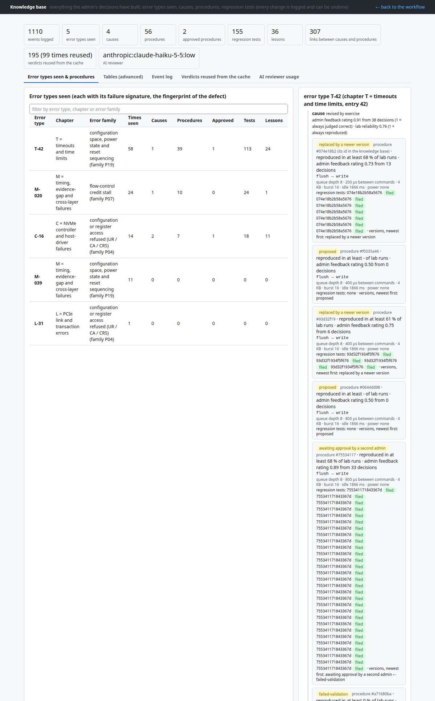
Counts at the top. On the left, the error types seen. On the right, the tree of one error type.
Chips
Events logged, error types seen, causes, procedures, approved procedures, regression tests and lessons. Also the links between causes and procedures, and the verdicts reused from the cache (a store of earlier answers). Also the AI reviewer in use. All of these come from GET /api/db/overview.
Error types seen & procedures
One row for each error type: chapter, family, times seen, causes, procedures, approved, tests and lessons. Click a row to see the tree of that error type (GET /api/db/signature/<type>). The tree shows each cause with its rating and its lab reliability (how often its lab runs worked). Under each cause is every procedure. Each procedure shows its status, rating, steps and timing. It also shows its safe lower estimate of how often it brings the error back. Then come its regression tests and its chain of versions. For example: "versions, newest first: awaiting approval by a second admin ← failed-validation".
Tables (advanced)
Any table of the database, as stored, filtered by error type (GET /api/db/table/<name>). The table name is shown in brackets.
Event log
The latest events. Each one shows its event number, time, kind, who and contents. To undo one, type its number in Undo event number and press Undo. The page asks you to confirm first. Then POST /api/db/undo marks the event as undone and rebuilds every table (section 3.5). A message says that the event was undone. The counts and the event list then refresh. Undone events stay in the list, with a mark.
Verdicts reused from the cache
The stage-1 verdict cache (the store of earlier AI answers). It shows the key fields, and the run and defect each answer came from. It also shows the hits (how many times each answer was used again).
AI reviewer usage
Raw counters: model calls, tokens (the bits of text the model reads and writes) and cost. Also stage 2's counters: looked up, reused, searched, confirmed, lab checks passed …
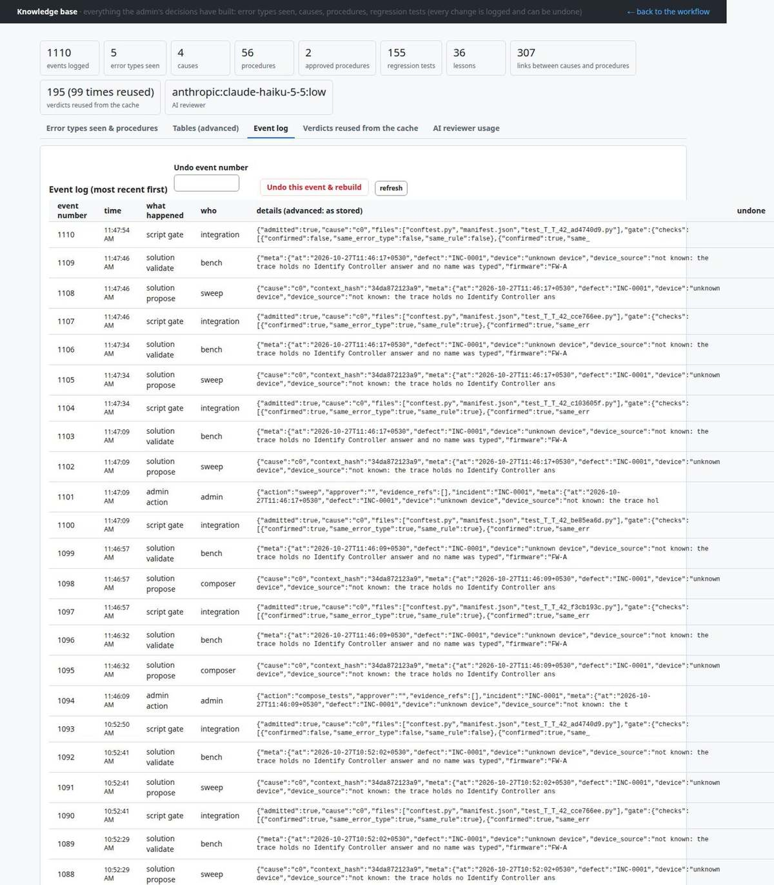
The event log: every change, never edited, and each one can be undone.
12.4 Settings
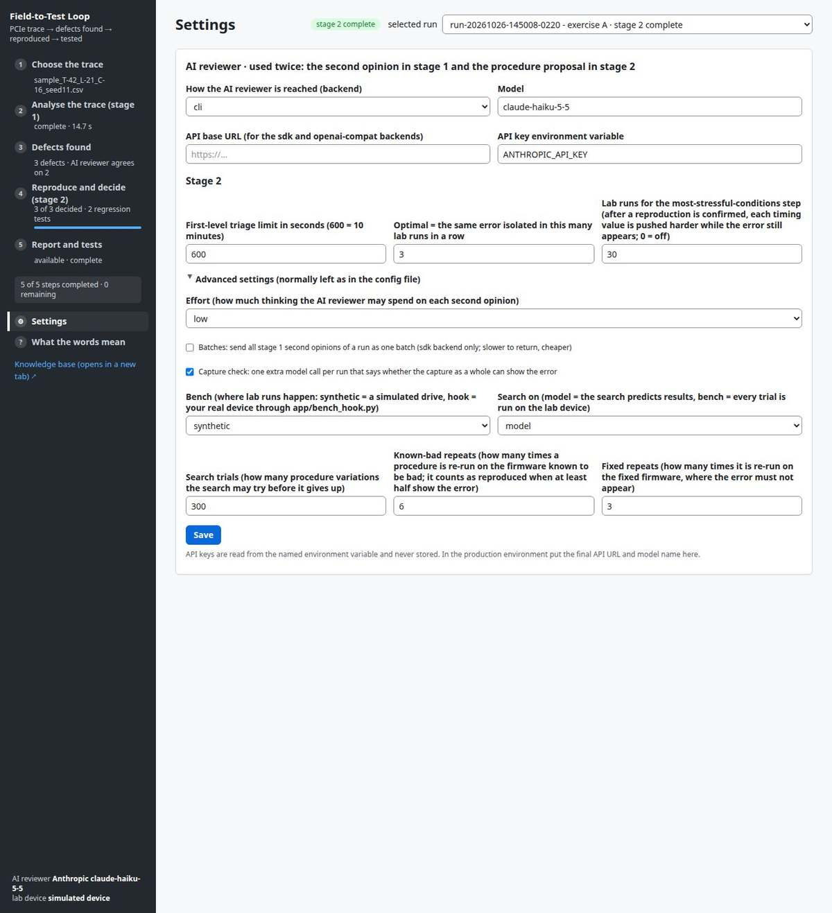
Settings, with the advanced part opened.
Save sends PUT /api/config. It writes the values to config/app_config.json. The AI reviewer connection and the stage-2 limits change at once, with no restart (Stage2Service.reload_llm). After Save, a message names the AI reviewer now in use, in plain words. If you changed Bench, the message also says that this change needs a restart of the program. Three settings work only after a restart: Bench, the allowed trace folders, and the server address and port. API keys (the secret passwords for the AI service) are never stored. The field holds only the name of an environment variable. That is a named value set on the computer, and it holds the key.
On a shared server, the config file can turn on server.lock_endpoint. Then Save refuses to change five settings. They are llm.base_url, llm.api_key_env, llm.backend, llm.tools and paths.allowed_csv_roots. These say where the key is sent and which folders the program may read. To change them, stop the service, edit the config file, and start it again. You can still change the model, Effort and the stage-2 limits on this page.
Field
Config key
What it does
How the AI reviewer is reached
llm.backend
cli = the claude command-line login on this computer (no key needed). sdk = the Anthropic API (the online AI service), or a company gateway (a company's own door to it). It needs a base URL and a key variable. openai-compat = any chat-completions endpoint (any AI service that talks in that common way). auto = sdk if a key is set, otherwise cli. standin = no model, and the answers are always the same (for tests).
Model
llm.model
The model name, for example claude-haiku-5-5.
API base URL, API key environment variable
llm.base_url, llm.api_key_env
Used only by sdk and openai-compat.
First-level triage limit in seconds
stage2.time_budget_s (600)
Section 9.8.
Optimal = the same error isolated in this many lab runs in a row
stage2.optimal_consecutive (3)
Section 9.5.
Lab runs for the most-stressful-conditions step
stage2.stress_trials (30, 0 = off)
Section 9.4.
Effort
llm.effort
How much thinking the AI reviewer may spend on stage 2's proposals (low / medium / high). Stage 1's second opinions always use low.
Batches
llm.batch
Send all stage-1 second opinions of a run as one batch (sdk only). It is cheaper, but slower to return.
Capture check
llm.capture_check
The extra seventh step of stage 1, which you can turn off. It is one more model call per run. It says whether the capture as a whole can show the error.
Bench
stage2.bench
Where lab runs happen. synthetic = the simulated drive. hook = your real drive through app/bench_hook.py.
Search on
stage2.search_on
model = the search runs on the fast model of the device, which predicts results, and the bench checks the answer. bench = every search trial runs on the bench.
Search trials
stage2.opt_budget (300)
The most procedures the search may try before it gives up.
Known-bad repeats, Fixed repeats
stage2.n_bad (6), stage2.n_fixed (3)
Known-bad repeats: how many times the lab check runs a procedure on the firmware known to be bad. Fixed repeats: how many times it runs it on the fixed firmware. The check passes when the error shows at least once on the bad firmware and never on the fixed one. Section 9.5.
You can switch the search method itself in the config file (stage2.optimizer). "bandit" is the default: the Thompson-sampling search of 9.3. "ppo" is the other choice. PPO is a learning method that slowly learns which choices pay off. It uses the same 14 kinds of change (stage2/ppo_optimizer.py).
12.5 What the words mean
The "?" page in the sidebar repeats the word list of section 2 inside the program. It explains every word on the screens and the ten chapter letters. It also shows how "proposed", "validated" and "approved" differ.
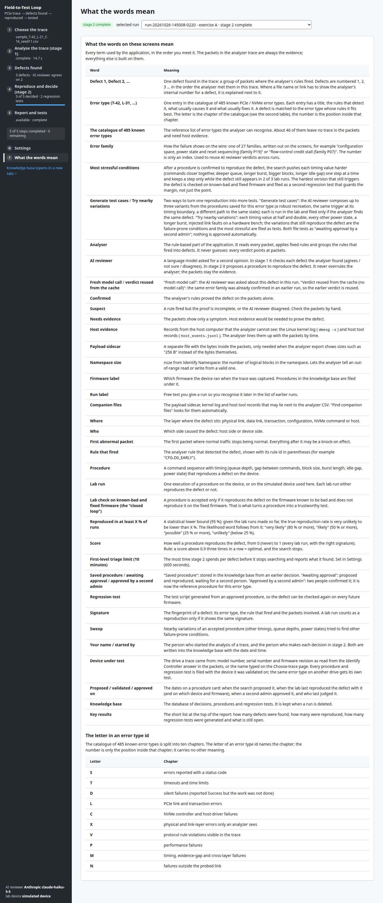
The word list page inside the program.
13. One defect from packets to test, with the real numbers
Run run-20261026-145008-0220, trace sample_T-42_L-21_C-16_seed11.csv, Defect 1. A program made this trace, and it planted three error types in it. You can check every number below on the screens and in the files named.
The packets. At packet #37387 the host writes D3hot (deep sleep) into the power-management register. This is a CfgWr0 (a write to the settings space of the device) to 0x044. At #37391 it writes D0 (fully awake) the same way. The device answers that write with SC (success) at #37393. At #37395, 2.000 ms after the D0 write, the host reads the drive register at 0xFCE0001C. This is an MRd (a memory read). Offset 0x1C is CSTS, the controller status register. At #37398 the device answers UR (Unsupported Request: it refuses the read).
Stage 1. The analyser keeps track of settings writes, so it noted the time of the D0 write. The read came only 2 ms later, so the rule CFG.D0_EARLY fired. Its message was "MMIO read 0x1C 2.000 ms after D3hot→D0". MMIO means reading the drive's registers through memory addresses. The verdict was Confirmed, in the layer called "configuration" (the settings space), family P19. TLP.CPL_STATUS fired on the UR at #37398, as a knock-on effect. S.RARE_WINDOW fired on the group of rare packets, as a separate finding. The three findings formed one defect, packets 37391–37398. The first wrong packet was #37395. The best match in the catalogue was T-42 (score 0.66). The next choices were L-31 (0.37) and L-36 (0.22). Rule R4 blames the side that sent the first bad packet. That packet went Downstream (from the host to the drive), so R4 blamed the host side. The AI reviewer's verdict came from the cache: the same pattern was confirmed in an earlier run. File: runs/run-20261026-145008-0220/incidents.json.
Lookup. Seen before: "YES - same defect seen before in this context; stored procedure applies". The best saved procedure: flush, then write, queue depth 8, 200 µs between commands, idle 1866 ms, no power state. The AI reviewer proposed something else. Its plan was an ASPM idle (the link's power-saving rest), then a read 2000 µs later, in D3hot. It wrote that the saved procedure "never triggers the power transition".
Decision. An admin pressed Correct on the saved procedure. This made three events: admin_action (accept), proc_credit r = 1, and verdict correct.
Lab. Mode: reuse. The lab ran the saved procedure 6 times, and the error came back all 6 times. The safe lower estimate was 61 %, so no search was needed. Lab check: the error showed in 6 of 6 runs on known-bad firmware and in 0 of 3 on fixed firmware. So the check passed. All three checks passed in every run, so the result is optimal. It took 27.5 seconds in all. File: runs/run-20261026-145008-0220/stage2/INC-0001.json.
Test. The program made the folder suite/T-T-42-074e18b2/. It holds test_T_T_42_074e18b2.py, manifest.json and conftest.py. The manifest says: known-bad 6 of 6, fixed 0 of 3, optimal true, reproduced in at least 61 %. The event script_gate says admitted = true (the test was let in).
More tests. "Generate test cases" built new versions of the test. It used 18 lab runs and filed two more tests. "Try nearby variations" tried 14 variations. 13 of them were likely to fail. The 3 most stressful ones were filed as tests.
What this example proves and what it does not
It proves that the whole loop works from start to end. That means finding, lookup, decision, lab, check, test and learning. It does not prove that "flush, then write" causes T-42 on a real drive. On this laptop the lab is the simulated drive of 9.6. That drive picks a hidden trigger for each error type from the error type's name. The pick looks random, but it is fixed. It does not follow the physics of the defect. The AI reviewer objected. It said the real cause is the D3hot→D0 change followed by an early access. The saved procedure does not contain that. That objection is right about the physics. On a real bench, the search would win points only from procedures that really cause the early access. An admin who knows the physics should press Needs changes and add the D3hot change. This is why every procedure needs a human decision, and a second admin, before it is approved.
14. Why it was built this way
The project statement asks for five things. First, find and pin down a defect from traces. These are PCIe traces (records of the link between computer and drive) and link-layer traces. Second, a tuner that learns by trial and reward, starting from the AI model's plan. It tunes the order and timing of commands. It wins points when the failure's pattern shows up again. Third, turn the most stressful trigger conditions into test scripts that can run in the test set. Fourth, a knowledge base that makes the fault quicker to bring back next time. Fifth, no training of the AI model. Each choice below answers one of those points, or a problem found while building it.
Choice
Why
Rules from the official rule books decide; the AI model only gives a second opinion
A manager must be able to check every verdict. A rule names a packet and a clause (a numbered rule) in the rule book. A model answer cannot be checked the same way. It can also change from one call to the next. So the AI reviewer may disagree, and the screen says so. But it never decides.
A catalogue of 485 known error types
Engineers think in known failure types with known fixes. Each defect is matched to one entry. The entry brings how the fault happens, its usual causes, its rule-book reference and its fix (section 6.2, part 5).
One pass through the file, matching by identity
Real captures are gigabytes in size. Reading row by row keeps memory use flat. The analyser follows requests by Requester ID + Tag, and commands by queue + command id. It never just takes "the next row". So the evidence stays right when traffic from many requests is mixed together.
Reuse a finished run; reuse AI verdicts by pattern
The same capture or pattern must not cost time or model money twice. The cache key includes the model and the prompt version. So when the model changes, old cache entries stop matching by themselves.
Stage 2 starts only on a button
It calls the AI reviewer for every defect. The admin decides when that is worth it.
Saved procedure next to a fresh proposal
The knowledge base can be out of date (new device, new firmware). The fresh proposal can be wrong. The screen shows both and marks the differences. Then the admin can see which one fits the packets.
Every change is an event; tables are worked out from events
Nothing is lost. For every change you can see who made it, when, in which run, and on which device and firmware. Any decision can be undone exactly, by playing back all the other events. This is also what makes the history and the lines of extra details possible.
Counting (a, b) instead of training
The statement forbids training the AI model. Counters are also easy to see through. A manager can work out a rating again by hand (10.1). Old counts fade, counts have a cap, and counts are halved when the firmware changes. This keeps the counts from freezing the ranking.
Blame only what was rejected; "Could not be reproduced" is not "wrong"
The admin did not touch some items. Punishing them would teach the system things the admin never said. A failed lab run often means a problem with the bench. So it is counted on its own (ta, tb).
A ranking is not a success
Putting A above B says nothing about whether A is correct. Counting it as a success would push ratings up too high. So it moves only the separate pl score.
A slot for trying new things
Without it, a procedure never shown could never be judged. And the first one ever approved would stay first forever.
Your own version is run before it is saved as working
An admin can be wrong too. The lab, not the person, decides whether a procedure makes the defect happen again. The person decides whether it is the right one.
Re-run the saved procedure first (regression guard)
If it still works, no search is needed. This is where the knowledge base saves the most time. If it no longer works on this device or firmware, that fact is worth recording too.
A search over commands and timing with Thompson sampling, Go-Explore and confirmation
The statement asks for an RL agent (a program that learns by trial and reward). The agent tunes the order and timing of commands. Thompson sampling learns, while it runs, which kinds of change pay off. It needs no training first. The Go-Explore archive (a store of good places to start again from) keeps the search from getting stuck. Some faults do not always happen. Confirming with 8 runs and a safe lower estimate means one lucky run cannot fool the search. PPO is there as another choice.
Shorten, then push to the limit
A short procedure is easier to understand and to run. The statement asks that the most stressful trigger conditions become tests. The stress climb finds them. The second test guards the edge (how far the timing can go), not just one point.
Lab check on known-bad and fixed firmware, with the same analyser
Some tests fail on the bad firmware but also fail on the fixed one. Such a test is useless. The lab trace is checked with the same stage-1 analyser. So the test checks what the capture from the field showed. The fixed bench also gets a decoy (a nearby, different error put in on purpose). So "found nothing" is a real result, not just an empty trace.
Score from three yes/no checks, optimal = 3 in a row, 10-minute limit
These rules are written in the project's diagram of how the parts fit together. Three plain checks replaced an earlier weighted score. So every number on the screen is a count.
Two people for approve, retire and delete
Saved procedures become tests that other teams rely on. One person's mistake should not become the reference. The database itself refuses the change when the two names are the same.
Device and firmware on every event, device in the test name
Different drives need different procedures and tests. A procedure saved on one drive shows as "related", not "seen before", on another drive. It is then checked again there.
Plain words on the screens
The operators know packets and traces, not this program. Every code (T-42, P19, INC-0001) is written out in words. Every number is a count, a percentage with its meaning, or a score with its rule next to it.
A simulated drive, and one function to plug in a real one
The whole loop must be testable on a laptop. The bench hides behind two functions (run, detect). So connecting a real drive changes nothing else.
15. How a manager can check that it is correct
15.1 Run the automatic tests
Command (in 13_production_app)
What it checks
Last result
python3 -m pytest tests/test_app.py -q
The whole program through its addresses, with an AI stand-in that always gives the same answers. It covers an example trace, stage 1, stage 2, decisions, extra details (who, device, date) and the report.
4 passed
cd stage2 && python3 tests_v3.py
Every learning rule of section 10: credit, blame, fading, cap, ranking, undo, the two-person rule …
16 OK
cd stage2 && python3 tests_v4.py
Loop rules, failure signature, sweep, workload import, actions, and the PPO choice.
8 OK
python3 tests/ui_smoke.py (server running)
The screens in a Chrome browser with no window: decision view, ranking, removal, Needs changes, Correct, compose, sweep.
21 of 21
python3 tests/exercise_loop.py (server running)
A long test story over two captures, using every admin signal.
60 checks (last run before 27 Oct)
15.2 Check a defect by hand
Open the defect page. Note the "First abnormal packet" and its line in the CSV (the table file of packets).
Open the CSV at that line, in the analyzer software or a text editor. Check the packet fields that the rule names (section 6.2, parts 2 and 3).
Look up the rule's place in the official rule book (part 5), and check the condition. For T-42 the book is PCI Bus Power Management, and the condition is 10 ms after D3hot→D0.
Compare this with the AI reviewer's opinion. If it says "disagrees", look more closely.
15.3 Check the database by hand
The knowledge base is a plain SQLite file (a whole database kept in one file). With the sqlite3 program, or any SQLite viewer, you can check every number on the screens.
SQL questions (in the database's own language) to run on db/knowledge.sqlite
-- every decision, newest first
SELECT id, datetime(ts,'unixepoch','localtime'), kind, actor, substr(payload,1,160) FROM event ORDER BY id DESC LIMIT 20;
-- the rating and lab reliability of each cause (compare with the Knowledge base page)
SELECT src, dst, a, b, n, round(a/(a+b),2) AS rating, ta, tb, round(ta/(ta+tb),2) AS lab_reliability FROM edge;
-- every procedure of T-42 with its status
SELECT substr(vhash,1,8), status, round(repro_lower95,3), producer, approved_by FROM solution WHERE sig='T-42';
-- credit on each procedure link (REPRODUCED_BY = cause -> procedure)
SELECT id, a, b, n, round(a/(a+b),2) FROM pedge WHERE kind='REPRODUCED_BY' AND src LIKE 'T-42%';
-- the two-person rule: approvals whose approver equals the producer (must be empty)
SELECT vhash FROM solution WHERE status='admin-approved' AND approved_by = producer;
You can test Undo safely. Note a decision's event number in the Earlier decisions table or in the Event log. Undo it on the Knowledge base page. Then watch the rating go back to its value before the decision.
15.4 Known limits (stated so they can be judged)
The lab is simulated on this laptop. See section 9.6 and the box in section 13. The loop is proven from start to end. But the procedures it finds only mean something for real hardware on a real bench (app/bench_hook.py). That hook is not written here, because it depends on your lab tools.
The jammer variations of "Try nearby variations" need a hardware bench that can put faults on the link on purpose. On the simulated bench they are listed as "hardware bench only".
Your own version that brings the error back in only 3 to 5 of 6 runs is saved as checked. But it does not go on to the lab check and a test. Its safe lower estimate is too low: 19 %, 30 % or 44 % for 3, 4 or 5 of 6. The lab check needs 50 %. Only 6 of 6 (61 %) passes. The screen still calls it "confirmed". To get a test from such a version, press Correct on it. The lab then runs it again, with a confirmation of 8 runs. Or change the rule in Stage2V3._finish if 3 of 6 should be enough.
A test folder is written even when the lab check fails. Its manifest.json then has closed_loop_at_generation.passed = false, and the screen says "no test filed". When you export suite/ to a test system, filter on that field (deploy/OPERATIONS.md).
Generated conftest.py files use the simulated bench. On a real bench, switch their fixtures to the hardware hook (deploy/BENCH_INTEGRATION.md). Fixtures are the set-up code each test uses.
No login. The program listens only on 127.0.0.1 (this computer). It trusts the operator name that people type. So the two-person rule is only as strong as the control over who can use the computer (deploy/DEPLOY.md).
The triage time saving needs your current hours by hand in the config file. Without them it shows "n/a" instead of a guess.
The test database on this laptop holds practice data (section 8.6). A real installation starts with an empty knowledge base.
15.5 Keeping this document correct
The text is in docs/guide_src/guide_template.html. The pieces of code are filled in from the current source code by
Rebuild the guide after a code change
cd 13_production_app
python3 docs/build_operator_guide.py
If a function named in the template no longer exists, the build stops. Its error names the missing function. So the document can never quietly show code that is gone.
Appendix · The plain words used in this guide
This guide uses everyday words. When you meet a harder word in other documents, in the code, or in a meeting, this table tells you what it means. The left column is the hard word. The right column is the plain word used here.